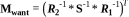
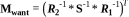
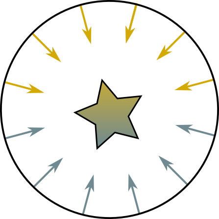
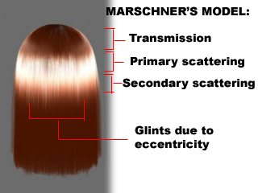
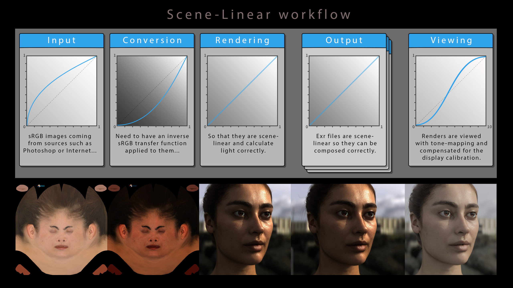
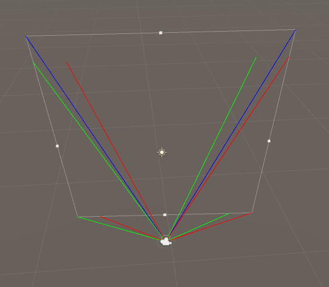
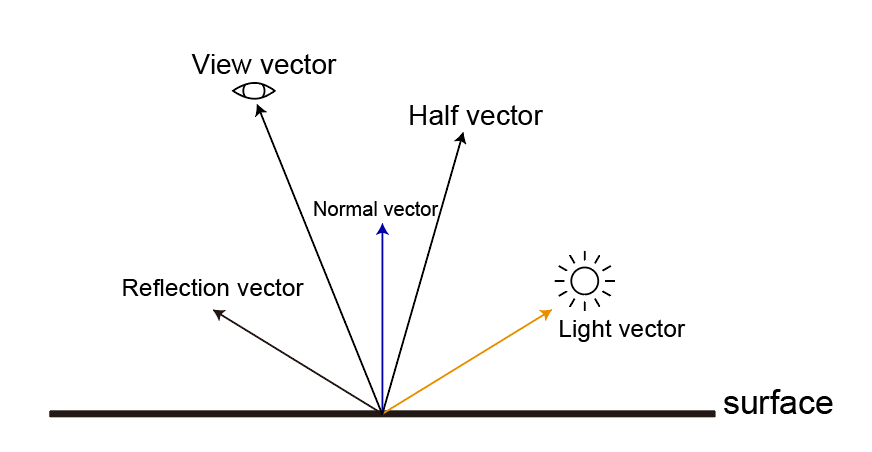
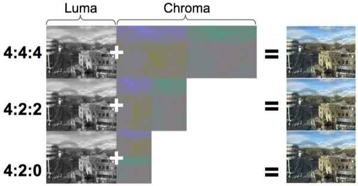

둘러보기
Unity Shader 노트
Pipeline
텍스쳐
메쉬 VertexBuffer pos/uv/normal/color IndexBuffer
Gamma / Linear Pipeline (HDR)
Rendering Forward Forward Plus Deferred
CPU =DrawCall=> GPU
Culling
Input Assembly Shader:Vertex object/world/camera/clip Shader:Hull Shader:Tesselator Shader:Domain Shader:Geometry
Rasterizer
정점간 보간
Early Depth Testing
Shader:Pixel
Depth Testing
Render Target Output
포스트프로세스 (HDR)Luminance (HDR)Bloom (HDR)Eye Adaptation (HDR)Tone Mapping
SSR SSAO SSGI Motion Blur
Depth of Field - Bokeh(geometry / gather) Color Filtering Gamma Control
AA
LOD HLOD Lumen
Vector
Swizzling
벡터의 요소들을 이용 임의의 순서로 구성가능
float4 A = float4(1, 2, 3, 4);
A.x == 1
A.xy == float2(1, 2)
A.wwxy == float4(4, 4, 1, 2)
A.rgba == float4(1, 2, 3, 4)
내적 외적
- 내적과 외적 공식.
- 내적과 외적을 시각적으로 생각할 수 있어야 함.
- 이거 이름 햇갈리기 쉬움.
| 내적 | Dot Product | Inner Product |
- 닷은 점이니까 모이는건 내적
- 점이니까 두개 모아서 하나가 됨.
- 하나로 모이니 두 벡터 사이의 각도를 구할 수 있음.
- 각도니까 cos연산 들어감.
- https://rfriend.tistory.com/145
- 교환법칙이 성립
| 각도 | 값 |
| ---- | --- |
| 0 | 1 |
| 90 | 0 |
| 180 | -1 |
| -270 | 0 |
1
|
|
0-------+------ 0
|
|
-1
| 외적 | Cross Product | Outer Product |
- 크로스는 삐죽하니까 외적으로 외울껏.
- X 니까 삐저나옴.
- X가 직각이니 수직 구할때 씀.
- https://rfriend.tistory.com/146
- 교환법칙 성립안함
Matrix
If w == 1, then the vector (x,y,z,1) is a position in space. If w == 0, then the vector (x,y,z,0) is a direction
// 순서주의
TransformedVector = TranslationMatrix * RotationMatrix * ScaleMatrix * OriginalVector;
// ref: https://www.3dgep.com/3d-math-primer-for-game-programmers-matrices/#Rotation_about_an_arbitrary_axis
이동행렬
| 1 0 0 x |
| 0 1 0 y |
| 0 0 1 z |
| 0 0 0 1 |
스케일
| x 0 0 0 |
| 0 y 0 0 |
| 0 0 z 0 |
| 0 0 0 1 |
X축 회전
| 1 0 0 0 |
| 0 cos -sin 0 |
| 0 sin cos 0 |
| 0 0 0 1 |
Y축 회전
| cos 0 sin 0 |
| 0 1 0 0 |
| -sin 0 cos 0 |
| 0 0 0 1 |
Z축 회전
| cos -sin 0 0 |
| sin cos 0 0 |
| 0 0 1 0 |
| 0 0 0 1 |
임의의 N축 회전
s : sin
c : cos
ic: 1 - cos
| ic * NxNx + c | ic * NxNy - s * Nz | ic * NzNx + s * Ny | 0 |
| ic * NxNy + s * Nz | ic * NyNy + c | ic * NyNz - s * Nx | 0 |
| ic * NzNx - s * Ny | ic * NyNz + s * Nx | ic * NzNz + c | 0 |
| 0 | 0 | 0 | 1 |
Mesh
// (0,1) +----+ (1,1)
// | |
// (0,0) +----+ (1,0)
//
// 2 +----+ 3
// | |
// 0 +----+ 1
Mesh mesh = new Mesh();
Vector3[] vertices = new Vector3[4] {
new Vector3(0, 0, 0),
new Vector3(1, 0, 0),
new Vector3(0, 1, 0),
new Vector3(1, 1, 0)
};
int[] tris = new int[6] {
// lower left triangle
0, 2, 1,
// upper right triangle
2, 3, 1
};
Vector2[] uv = new Vector2[4] {
new Vector2(0, 0),
new Vector2(1, 0),
new Vector2(0, 1),
new Vector2(1, 1)
};
Vector3[] normals = new Vector3[4] {
-Vector3.forward,
-Vector3.forward,
-Vector3.forward,
-Vector3.forward
};
mesh.vertices = vertices;
mesh.triangles = tris;
mesh.uv = uv;
mesh.normals = normals;
Topology
| MeshTopology |
|---|
| Points |
| Lines |
| LineStrip |
| Triangles |
| Quads |
MehsFilter mf = GetComponent<MeshFilter>();
mf.mesh.SetIndice(mf.mesh.GetIndices(0), MeshTopology.Points, 0);
public void SetIndices(int[] indices, MeshTopology topology, int submesh, bool calculateBounds = true, int baseVertex = 0);
메쉬토폴로지를 변경시켜 좀 더 그럴듯한 효과를 얻을 수 있다.
Ref
Coordinate
- 좌표공간

유니티 정의 positions
| position | Space | AKA | 타입 | 설명 |
|---|---|---|---|---|
| positionOS | Object | Local / Model | float3 | |
| positionWS | World | Global | float3 | |
| positionVS | View | Camera / Eye | float3 | 카메라에서 바라볼때 |
| positionCS | Homogeneous Clip | float4 | 카메라 시야에서 안보인 것은 제외, Orthogonal 적용 | |
| positionNDC | Homogeneous Normalized Device Coordinate | float4 | [ 0, w] : (x, y, z, w) |
내가 임의로 정한것
| 이름 붙여봄 position | Space | 타입 | 설명 |
|---|---|---|---|
| ndc | Nonhomogeneous Normalized Device Coordinate | float3 | [-1, 1] : PerspectiveDivision * 2 - 1 |
| uv_Screen | Screen | float2 | [ 0, 1] : PerspectiveDivision |
| positionScreen | ViewPort | float2 | [화면 넓이, 화면 높이] |
공간 변환 그림 예
예1)

예2)

UNITY_MATRIX
| Matrix | 설명 |
|---|---|
| UNITY_MATRIX_M | renderer.localToWorldMatrix |
| UNITY_MATRIX_V | camera.worldToCameraMatrix |
| UNITY_MATRIX_P | GL.GetGPUProjectionMatrix(camera.projectionMatrix, false); |
- localToWorldMatrix
- 유니티 4까지는 GPU에 넘겨주기전에 스케일을 가공하여
- renderer.localToWorldMatrix, transform.localToWorldMatrix가 달랐으나 지금은 같음.
| 카메라 관련 | 렌더링(UNITY_MATRIX_)의 뷰 전방은 -z. 카메라 행렬은 에디터와 동일하게 +z를 앞으로 사용 |
|---|---|
| UNITY_MATRIX_V | cam.worldToCameraMatrix |
| unity_WorldToCamera | Matrix4x4(cam.transform.position, cam.transform.rotation, Vector3.one) |
| UNITY_MATRIX_I_V | cam.cameraToWorldMatrix |
| unity_CameraToWorld | Matrix4x4(cam.transform.position, cam.transform.rotation, Vector3.one).inverse |
| UNITY_MATRIX_P | GL.GetGPUProjectionMatrix(camera.projectionMatrix, false) |
| unity_CameraProjection | cam.projectionMatrix |
| UNITY_MATRIX_I_P | GL.GetGPUProjectionMatrix(camera.projectionMatrix, false).inverse |
| unity_CameraInvProjection | cam.projectionMatrix.inverse |
OS ----------------------- Object Space
| UNITY_MATRIX_M * OS
WS ----------------------- World Space
| UNITY_MATRIX_V * WS
VS ----------------------- View Space
| UNITY_MATRIX_P * VS
CS ----------------------- Homogeneous Clip Space
| NDC = CS * 0.5
| NDC.x = NDC.x + NDC.w
| NDC.y = NDC.y + NDC.w // DirectX
| NDC.y = -NDC.y + NDC.w // OpenGL
| NDC.zw = CS.zw
NDC ---------------------- Homogeneous Normalized Device Coordinate [0..w]
| pd = (NDC.xyz / NDC.w); // [0, 1] : perspective divide
| ndc = pd * 2.0 - 1.0; // [-1, 1]
ndc ---------------------- Nonhomogeneous Normalized Device Coordinate [-1..1]
// com.unity.render-pipelines.universal/ShaderLibrary/Core.hlsl
struct VertexPositionInputs
{
float3 positionWS; // World space position
float3 positionVS; // View space position
float4 positionCS; // Homogeneous clip space position
float4 positionNDC;// Homogeneous normalized device coordinates
};
// com.unity.render-pipelines.universal/ShaderLibrary/ShaderVariablesFunctions.hlsl
VertexPositionInputs GetVertexPositionInputs(float3 positionOS)
{
VertexPositionInputs input;
input.positionWS = TransformObjectToWorld(positionOS); // UNITY_MATRIX_M
input.positionVS = TransformWorldToView(input.positionWS); // UNITY_MATRIX_V
input.positionCS = TransformWorldToHClip(input.positionWS); // UNITY_MATRIX_VP
float4 ndc = input.positionCS * 0.5f;
input.positionNDC.xy = float2(ndc.x, ndc.y * _ProjectionParams.x) + ndc.w;
input.positionNDC.zw = input.positionCS.zw;
return input;
}
// com.unity.render-pipelines.core/ShaderLibrary/SpaceTransforms.hlsl
TransformObjectToWorld - UNITY_MATRIX_M
TransformWorldToView - UNITY_MATRIX_V
TransformWViewToHClip - UNITY_MATRIX_P
TransformWorldToHClip - UNITY_MATRIX_VP
| _ProjectionParams | x | y | z | w |
|---|---|---|---|---|
| DirectX | 1 | near plane | far plane | 1 / farplane |
| OpenGL | -1 | near plane | far plane | 1 / farplane |
| UNITY_REVERSED_Z | UNITY_NEAR_CLIP_VALUE | UNITY_RAW_FAR_CLIP_VALUE | |
|---|---|---|---|
| DirectX | 1 | 1 | 0 |
| Vulkan | 1 | 1 | 0 |
| OpenGL | 0 | -1 | 1 |
NDC
// [0, w] // Homogeneous Normalized Device Coordinate
float4 positionNDC = GetVertexPositionInputs(positionOS).positionNDC;
// [0, 1] // Perspective Division
float3 pd = positionNDC.xyz / positionNDC.w;
// [-1, 1] // Nonhomogeneous Normalized Device Coordinate
float3 ndc = pd * 2.0 - 1.0;
// [0, 1]
float2 uv_Screen = positionNDC.xy / positionNDC.w;
// [0, screenWidth] / [0, screenHeight]
float2 positionScreen = uv_Screen * _ScreenParams.xy;
// float4 ndc = input.positionCS * 0.5f;
// input.positionNDC.xy = float2(ndc.x, ndc.y * _ProjectionParams.x) + ndc.w;
// input.positionNDC.zw = input.positionCS.zw;
NDC = float4(
(0.5 * CS.x ) + 0.5 * CS.w,
(0.5 * CS.y * _ProjectionParams.x) + 0.5 * CS.w,
CS.z,
CS.w
);
// pd = NDC.xyz / NDC.w
pd = float3(
(0.5 * CS.x / CS.w) + 0.5,
(0.5 * CS.y * _ProjectionParams.x / CS.w) + 0.5,
CS.z / CS.w
);
// ndc = pd * 2 - 1
ndc = float3(
(CS.x / CS.w),
(CS.y * _ProjectionParams.x / CS.w),
(CS.z / CS.w) * 2 - 1,
);
// uv_Screen = NDC.xy / NDC.w
uv_Screen = float2(
(CS.x / CS.w),
(CS.y * _ProjectionParams.x / CS.w)
);
// positionScreen = uv_Screen * _ScreenParams.xy
positionScreen = float2(
(CS.x / CS.w) * _ScreenParams.x,
(CS.y * _ProjectionParams.x / CS.w) * _ScreenParams.y
);
Normal
Pserspective Camera

// Find our current location in the camera's projection space.
Vector3 pt = Camera.main.projectionMatrix.MultiplyPoint(transform.position);
// Matrix4x4.MultiplyPoint
public Vector3 MultiplyPoint(Matrix4x4 mat, Vector3 v)
{
Vector3 result;
result.x = mat.m00 * v.x + mat.m01 * v.y + mat.m02 * v.z + mat.m03;
result.y = mat.m10 * v.x + mat.m11 * v.y + mat.m12 * v.z + mat.m13;
result.z = mat.m20 * v.x + mat.m21 * v.y + mat.m22 * v.z + mat.m23;
float num = mat.m30 * v.x + mat.m31 * v.y + mat.m32 * v.z + mat.m33;
num = 1 / num;
result.x *= num;
result.y *= num;
result.z *= num;
return result;
}
// z값 구하지 않으면
public Vector3 MultiplyPoint(Matrix4x4 mat, Vector3 v)
{
Vector3 result;
result.x = mat.m00 * v.x + mat.m01 * v.y + mat.m02 * v.z + mat.m03;
result.y = mat.m10 * v.x + mat.m11 * v.y + mat.m12 * v.z + mat.m13;
float num = mat.m30 * v.x + mat.m31 * v.y + mat.m32 * v.z + mat.m33;
num = 1 / num;
result.x *= num;
result.y *= num;
return result;
}
// 값을 대입하면
public Vector3 MultiplyPoint(Matrix4x4 mat, Vector3 v)
{
Vector3 result;
result.x = mat.m00 * v.x + 0 * v.y + 0 * v.z + 0;
result.y = 0 * v.x + mat.m11 * v.y + 0 * v.z + 0;
float num = 0 * v.x + 0 * v.y + -1 * v.z + 0;
num = 1 / num;
result.x *= num;
result.y *= num;
return result;
}
// 최종적으로
public Vector3 MultiplyPoint(Matrix4x4 mat, Vector3 v)
{
Vector3 result;
result.x = mat.m00 * v.x;
result.y = mat.m11 * v.y;
float num = -1 * v.z;
num = 1 / num;
result.x *= num;
result.y *= num;
return result;
}
(X, Y, linearEyeDepth)
positionNDC // [-1, 1]
X = positionNDC.x * linearEyeDepth / mat.m00
Y = positionNDC.x * linearEyeDepth / mat.m11
The zero-based row-column position:
| _m00, _m01, _m02, _m03 |
| _m10, _m11, _m12, _m13 |
| _m20, _m21, _m22, _m23 |
| _m30, _m31, _m32, _m33 |
The one-based row-column position:
| _11, _12, _13, _14 |
| _21, _22, _23, _24 |
| _31, _32, _33, _34 |
| _41, _42, _43, _44 |
UV
texel(TExture + piXEL) coordinate
Direct X
(0,0) (1,0)
+-------+-------+
| | |
| | |
+-------+-------+
| | |
| | |
+-------+-------+
(0,1) (1,1)
OpenGL / UnityEngine
(0,1) (1,1)
+-------+-------+
| | |
| | |
+-------+-------+
| | |
| | |
+-------+-------+
(0,0) (1,0)
- 수학적으로 바라보면 모든 2D좌표계를 OpenGL방식으로하면 좌표계를 헷갈릴 걱정이 없다. 하지만, 프로그래밍 하는 입장에서는 DirectX방식이 좀 더 와닿을 것이다.
Ref
- Computergrafik - Vorlesung 6 - Coordinate Systems
- Unity - shader의 World matrix(unity_ObjectToWorld)를 수작업으로 구성
- Unity - shader의 Camera matrix(UNITY_MATRIX_V)를 수작업으로 구성
- Unity - unity_CameraWorldClipPlanes 내장 변수 의미
- Unity - shader의 원근 투영(Perspective projection) 행렬(UNITY_MATRIX_P)을 수작업으로 구성
- 렌더링 파이프라인의 좌표 공간들
- Look At Transformation Matrix in Vertex Shader
- transform.localToWorldMatrix
- Renderer.localToWorldMatrix
- Camera.worldToCameraMatrix
- Camera.projectionMatrix
- GL.GetGPUProjectionMatrix
- http://blog.hvidtfeldts.net/index.php/2014/01/combining-ray-tracing-and-polygons/
Alpha
- 알파쓰면 Testing(discard)이나 Blend가 할 것 없이 성능 잡아먹는다.
- 구형 모바일 디바이스에선 Blend쪽이 성능이 잘 나오는 경향이 있었다.
SubShader
{
Tags // SubShader의 Tags는 Pass의 Tags와 다름.
{
"RenderPipeline" = "UniversalRenderPipeline"
// "IgnoreProjector" <<< 요놈은 URP에서 안씀
// for cutout
"Queue" = "AlphaTest" // 렌더순서
"RenderType" = "TransparentCutout" // 그룹핑(전체 노말맵같이 한꺼번에 바꾸어 그릴때 이용)
// for blend
"Queue" = "Transparent"
"RenderType" = "Transparent"
}
Pass
{
Tags
{
"LightMode" = "UniversalForward"
}
// https://docs.unity3d.com/Manual/SL-Blend.html
Blend A B
// http://docs.unity3d.com/Manual/SL-CullAndDepth.html
ZWrite <On | Off> // default: On
ZTest <(Less | Greater | LEqual | GEqual | Equal | NotEqual | Always)> // default: LEqual
}
}
- Blend
- 색 혼합 방법
- ZWrite
- Z 값을 기록할지 안할지 결정.
- ZTest
- Z 값이 씌여져 있는 상태를 읽어서(ZRead), 그려져도 되는지를 결정.

Alpha Cutout / Alpha Testing
- clip(texkill)을 이용
- 간편. sorting걱정 안해도 됨.
- 구형 모바일에서는 AlphaBlend 보다 성능이 안나오는 경향이 있음.
- 요즘은 AlphaTesting이 더 낳을지도
- 모바일(A11(ios), PowerVR 등)은 메모리와 대역폭을 줄이기위해 타일별 렌더링을 하는 TBDR(tile-based deferred rendering)을 이용함.
- 알파테스팅을 이용할시, 실제 보여지는지 여부를 알파테스팅이 끝날때까지 알 수 없으므로 Deffered 최적화를 방해함.
- 풀, 나무, 머리카락, 털 등...
- clip하여 너무 각지는게 보기 싫어질 정도면 blend를 잘 쓰자
- // if ZWrite is Off, clip() is fast enough on mobile, because it won't write the DepthBuffer, so no GPU pipeline stall(confirmed by ARM staff).
SubShader
{
Tags // SubShader의 Tags는 Pass의 Tags와 다름.
{
"RenderPipeline" = "UniversalRenderPipeline"
"Queue" = "AlphaTest"
"RenderType" = "TransparentCutout"
}
Pass
{
Tags
{
"LightMode" = "UniversalForward"
}
HLSLPROGRAM
...
half4 frag(VStoFS IN) : SV_Target
{
half alpha = ...;
clip(alpha - _Cutoff);
return half4(1, 0, 0, 1);
}
half4
ENDHLSL
}
}
// URP에선 `_ALPHATEST_ON` 여부로 할지 말지 결정하는 함수가 있다.
// https://github.com/Unity-Technologies/Graphics/blob/master/com.unity.render-pipelines.universal/ShaderLibrary/ShaderVariablesFunctions.hlsl
void AlphaDiscard(real alpha, real cutoff, real offset = real(0.0))
{
#ifdef _ALPHATEST_ON
clip(alpha - cutoff + offset);
#endif
}
Alpha Blend
- 이펙트에서 주로 쓰임
- Alpha Testing보다 디테일 살릴때...
- 불투명 유리
SubShader
{
Tags // SubShader의 Tags는 Pass의 Tags와 다름.
{
"RenderPipeline" = "UniversalRenderPipeline"
"Queue" = "Transparent"
"RenderType" = "Transparent"
}
Pass
{
ZWrite Off // 픽셀 중복으로 출력됨.
Blend SrcAlpha OneMinusSrcAlpha
Tags
{
"LightMode" = "UniversalForward"
}
}
}
ZWrite Off- 뒷면까지 렌더링하는게 문제가됨- 2Pass로 보이는면 랜더링
SubShader
{
Tags // SubShader의 Tags는 Pass의 Tags와 다름.
{
"RenderPipeline" = "UniversalRenderPipeline"
"Queue" = "Transparent"
"RenderType" = "Transparent"
}
Pass
{
Tags
{
"LightMode" = "SRPDefaultUnlit"
}
ZWrite On
ColorMask 0 // 색 렌더링 안함
Cull Front
HLSLPROGRAM
...
ENDHLSL
}
Pass
{
Tags
{
"LightMode" = "UniversalForward"
}
ZWrite Off
Cull Back
Blend SrcAlpha OneMinusSrcAlpha
HLSLPROGRAM
...
ENDHLSL
}
}
Ref
- Jihoo Oh - 이펙트 쉐이더 2강 - 알파 / 블랜딩
- https://www.gamedev.net/forums/topic/656826-why-the-alphablend-is-a-better-choice-than-alphatest-to-implement-transparent-on-mobile-device/5154785/
- 모바일 기기의 Tile Based Rendering(타일 기반 렌더링)과 유니티에서의 주의 사항 #2 : TBR 대응 리소스 제작시 주의점
- https://blog.naver.com/dasoong15/221356325748
- PowerVR Performance Recommendations The Golden Rules
- Z 버퍼의 Read / Write 개념 by 김윤정
NormalMap
inline void ExtractTBN(in half3 normalOS, in float4 tangent, inout half3 T, inout half3 B, inout half3 N)
{
N = TransformObjectToWorldNormal(normalOS);
T = TransformObjectToWorldDir(tangent.xyz);
B = cross(N, T) * tangent.w * unity_WorldTransformParams.w;
}
inline half3 CombineTBN(in half3 tangentNormal, in half3 T, in half3 B, in half3 N)
{
return mul(tangentNormal, float3x3(normalize(T), normalize(B), normalize(N)));
}
Varyings vert(Attributes IN)
{
ExtractTBN(IN.normalOS, IN.tangent, OUT.T, OUT.B, OUT.N);
}
half4 frag(Varyings IN) : SV_Target
{
half3 normalTex = UnpackNormal(SAMPLE_TEXTURE2D(_NormalTex, sampler_NormalTex, IN.uv));
half3 N = CombineTBN(normalTex, IN.T, IN.B, IN.N);
}
- NormalMap(법선맵)을 쓰는 이유?
- TBN이란?
- world-Normal 구하는 법?
- 노말맵 혹은 법선맵(tangent space)에서 g채널을 뒤집는 이유?
법선맵을 쓰는 이유
- 정점(vertex)을 많이 밖아서 디테일을 표시하면, 실시간으로 정점을 처리하는데 부하가 걸린다(주로 CPU).
- 셰이더 계산시 법선맵에서 가상의 정점을 생성해 빛을 계산하면 디테일을 살릴 수 있다.
Object Space vs Tangent Space
- 리깅을 사용하는 모델의 경우 정점이 몰핑되면서 노말 벡터의 방향이 바뀌게 되는데 이때는 고정된 오브젝트 의 공간좌표계는 의미가 없어짐.
TBN
| TBN | Source | xyz | UV |
|---|---|---|---|
Tangent | TANGENT | x | u |
Binormal | cross(T, N) | y | v |
Normal | NORMAL | z |
N = mul(mat_I_M, normalOS);
T = mul(tangentOS, mat_M);
B = mul(binormalOS, mat_M);
// unity같이 binormalOS를 못어올 경우 N, T를 이용하여 B를 만들 수 있다.
// B = cross(N, T) * tangentOS.w
======== 월드공간 T / B / N 을 구하고 TBN매트릭스(tangent -> world)를 만든다
float3x3 TBN_Tangent2World = float3x3(normalize(Input.T), normalize(Input.B), normalize(Input.N));
| Tx Ty Tz |
| Bx By Bn |
| Nx Ny Nz |
mul(tangentNormal, TBN_Tangent2World); // 왠지 이케 해버리면 앞서 말한 NormalScaleProblem에 걸릴것 같음
======== TBN은 직교행렬, 직교행렬의 역행렬은 전치행렬.
TBN_World2Tangent = transpose(TBN_Tangent2World);
| Tx Bx Nx |
| Ty By Ny |
| Yz Bz Nz |
mul(TBN_World2Tangent, tangentNormal); // 이케하면 되겠지?
======== 뇌피셜
// 위에꺼도 맞긴 맞는데...
// TBN은 직교행렬, 직교행렬의 역행렬은 전치행렬.
// traspose(inverse(M)) == M
mul(tangentNormal, TBN_Tangent2World); // 따라서 이케해도 문제될꺼 없음? 확인해봐야함
normal flatten
// T, B, N
const float3 vec_TBN_UP = float3(0, 0, 1);
normalTS = lerp(normalTS, vec_TBN_UP, _Flatteness);
Block Compression
| DXT5 | BC3 format | (x, y, 0, 1) |
| DXT5nm | DXT5의 R채널값이 A채널로 이동된것 | (1, y, 0, x) |
| BC3 | channel | bit |
|---|---|---|
| x | a0, a1 | 16 |
| alpha indices | 48 | |
| y | color0,1 | 32 |
| color indices | 32 |

| BC5 | channel | bit |
|---|---|---|
| x | r0, r1 | 16 |
| red indices | 48 | |
| y | g0, g1 | 32 |
| green indices | 32 |

UNITY_NO_DXT5nm
DXT5nm이 아닌 경우(UNITY_NO_DXT5nm) 는 다음과 같은 공식을 썼으나,
real3 UnpackNormalRGBNoScale(real4 packedNormal)
{
return packedNormal.rgb * 2.0 - 1.0;
}
아닌경우 UnpackNormalmapRGorAG을 사용 DXT5, DXT5nm을 처리할 수 있게한다.
real3 UnpackNormal(real4 packedNormal)
{
#if defined(UNITY_ASTC_NORMALMAP_ENCODING)
return UnpackNormalAG(packedNormal, 1.0);
#elif defined(UNITY_NO_DXT5nm)
return UnpackNormalRGBNoScale(packedNormal);
#else
// Compiler will optimize the scale away
return UnpackNormalmapRGorAG(packedNormal, 1.0);
#endif
}
// Unpack normal as DXT5nm (1, y, 0, x) or BC5 (x, y, 0, 1)
real3 UnpackNormalmapRGorAG(real4 packedNormal, real scale = 1.0)
{
// Convert to (?, y, 0, x)
packedNormal.a *= packedNormal.r;
return UnpackNormalAG(packedNormal, scale);
}
real3 UnpackNormalAG(real4 packedNormal, real scale = 1.0)
{
real3 normal;
normal.xy = packedNormal.ag * 2.0 - 1.0;
normal.z = max(1.0e-16, sqrt(1.0 - saturate(dot(normal.xy, normal.xy))));
// must scale after reconstruction of normal.z which also
// mirrors UnpackNormalRGB(). This does imply normal is not returned
// as a unit length vector but doesn't need it since it will get normalized after TBN transformation.
// If we ever need to blend contributions with built-in shaders for URP
// then we should consider using UnpackDerivativeNormalAG() instead like
// HDRP does since derivatives do not use renormalization and unlike tangent space
// normals allow you to blend, accumulate and scale contributions correctly.
normal.xy *= scale;
return normal;
}
- xyzw, wy => _g_r => rg => xyn // r이 뒤로 있으므로, 한바퀴 돌려줘야함.
normal.xy = packednormal.wy * 2 - 1;(0 ~ 1 => -1 ~ 1)Z는 쉐이더에서 계산. 단위 벡터의 크기는 1인것을 이용.(sqrt(x^2 + y^2 + z^2) = 1)sqrt(1 - saturate(dot(normal.xy, normal.xy)))
Normal Scale Problem
오브젝트를 스케일시킬때 Normal의 변화의 문제
A라는 도형을 x에 대해서 2만큼 스케일 업하고 싶다고 가정하면,
| 정점 | x 스케일 | 노말 | |
|---|---|---|---|
| A | (1, 1) | 1 | (1, 1) |
| B | (2, 1) | 2 | (2, 1) |
| C | (2, 1) | 2 | (0.5, 1) |

C처럼 x의 스케일 2배 됐다고, 노멀의 x값에 곱하기 2를 해서는 안된다. 역인 나누기 2 를 해야한다.
위치(position)에 대해서는 world-Position = mul(obj-Position, M )이 정상적으로 성립되었다.
하지만, world-Normal = mul( obj-Normal, M ) 처럼 적용했을시 앞+선 B와 같은 문제가 발생한다.
월드행렬(M)식으로 나타내면

우리가 구하고 싶은 행렬을 M-want라 했을시 world-Normal = mul(M-want, obj-Normal)

 


즉 M-want = traspose(inverse(M)).
DirectX기준 row-major에서의 메트릭스와 벡터의 인자 순서: mul(벡터, 메트릭스) = mul( transpose(메트릭스), 벡터 )
아레 예는 row-major 기준으로 작성.
M = ObjectToWorld
inverse(M) = WorldToObject
M-want = traspose(inverse(M))
world-Normal
= mul(obj-Normal , M-want )
= mul(obj-Normal , traspose(inverse(M)))
= mul(inverse(M) , obj-Normal )
= mul(WorldToObject, obj-Normal )
노말맵 혹은 법선맵(tangent space)에서 g채널을 뒤집는 이유
-
https://victorkarp.wordpress.com/2020/06/26/inverting-a-normal-map-in-blender/
-
단위벡터의 크기가 1이지만, (-1, 0, 0)과 같은게 있으므로, 정규화된 법선벡터의 범위는
-1...1이다. -
바이너리로 저장하기위해 범위를
0...1로 줄이려면 0.5를 곱하고 다시 0.5를 더해주면 된다. -
셰이더에서 저장된 범위
0...1을-1...1로 확장시키려면 2를 곱하고 1을 빼주면-1...1의 범위로 확장된다.
노말맵에서 z값이 강한 경우가 있는데 그럼 이미지가 퍼렇게 보이면서 돌출이 아닌 움푹 패인듯한 느낌이 든다.
- 표면 안쪽으로 향하는(z의 값이 음수인) 경우가 없다.
- 범위는
0 ~ 1 - 바이너리 저장시 범위가
0.5 ~ 1로 변경되면서 0.5부터 값이 시작된다.
- 범위는
- 따라서 맵이 퍼렇게 보이면서, 돌출되는 부분이 이미지상 움푹들어간 모습처럼 보인다.
그러므로, g채널을 뒤집어주면 돌출된 부분을 아티스트가 쉽게 인지할 수 있다.
OpenGLY+ / DirectX Y-

- 유니티는 OpenGL(Y+) 를 써서 보기 비교적 편하다.
- DirectX와 같은 엔진에서는 작업자를 위해 Y+텍스쳐 제작 쉐이더에서 y에
-1을 곱해 뒤집어 주는 코드를 넣어주면 작업자들이 편해진다.
MikkTSpace
- Mikkelsen tangent space normal
| URP | 셰이더 그래프 | URP Lit |
|---|---|---|
| 8.1.0 | 픽셀당 MikkTSpace 노멀 맵 | 정점당 |
| 8.2.0 | 픽셀당 | 픽셀당 |
- 노말맵 베이크
- 방식1. 하이트맵이나 일반 이미지를 이용해서 노멀맵 변환
- 방식2. 로우폴리곤과 하이폴리곤을 가지고 베이크
- 3D프로그램 별 에버레지 버텍스 노말에 동일한 연산을 하지 않음.
- 동일한 연산을 하도록 MikkTSpace로 통일.
- 3D프로그램 별 에버레지 버텍스 노말에 동일한 연산을 하지 않음.
Ref
- youtube: 안콜3D - (전체공개) 노말맵의 모든것
- xNormal 프로그램
- https://bgolus.medium.com/generating-perfect-normal-maps-for-unity-f929e673fc57
Cubemap
- 텍스쳐를 받을 수 있는 Cubemap생성하기 :
Create > Legacy > Cubemap
TEXTURECUBE(_CubeMap); SAMPLER(sampler_CubeMap);
half3 reflectVN = reflect(-V, N);
half4 cubeReflect = SAMPLE_TEXTURECUBE_LOD(_CubeMap, sampler_CubeMap, reflectVN, 0);
half3 refractVN = refract(-V, N, 1 / _RefractiveIndex);
half4 cubeRefract = SAMPLE_TEXTURECUBE_LOD(_CubeMap, sampler_CubeMap, refractVN, 0);
CubemapGen
- https://gpuopen.com/archived/cubemapgen/
- https://seblagarde.wordpress.com/2012/06/10/amd-cubemapgen-for-physically-based-rendering/
- https://github.com/gscept/CubeMapGen
// | AMD CubeMapGen | Unity |
// | -------------- | ----- |
// | X+ | -X |
// | X- | +X |
// | Y+ | +Y |
// | Y- | -Y |
// | Z+ | +Z |
// | Z- | -Z |
using System.IO;
using UnityEditor;
using UnityEngine;
public class BakeStaticCubemap : ScriptableWizard
{
static string imageDirectory = "Assets/CubemapImages";
static string[] cubemapImage = new string[6] {
"top+Y", "bottom-Y",
"left-X", "right+X",
"front+Z","back-Z",
};
static Vector3[] eulerAngles = new Vector3[6] {
new Vector3(-90.0f, 0.0f, 0.0f), new Vector3(90.0f, 0.0f, 0.0f),
new Vector3(0.0f, 90.0f, 0.0f), new Vector3(0.0f, -90.0f, 0.0f),
new Vector3(0.0f, 0.0f, 0.0f), new Vector3(0.0f, 180.0f, 0.0f),
};
public Transform renderPosition;
public Cubemap cubemap;
// Camera settings.
public int cameraDepth = 24;
public LayerMask cameraLayerMask = -1;
public Color cameraBackgroundColor;
public float cameraNearPlane = 0.1f;
public float cameraFarPlane = 2500.0f;
public bool cameraUseOcclusion = true;
// Cubemap settings.
public FilterMode cubemapFilterMode = FilterMode.Trilinear;
// Quality settings.
public int antiAliasing = 4;
public bool IsCreateIndividualImages = false;
[MenuItem("GameObject/Bake Cubemap")]
static void RenderCubemap()
{
DisplayWizard("Bake CubeMap", typeof(BakeStaticCubemap), "Bake!");
}
void OnWizardUpdate()
{
helpString = "Set the position to render from and the cubemap to bake.";
if (renderPosition != null && cubemap != null)
{
isValid = true;
}
else
{
isValid = false;
}
}
void OnWizardCreate()
{
QualitySettings.antiAliasing = antiAliasing;
cubemap.filterMode = cubemapFilterMode;
GameObject go = new GameObject("CubemapCam", typeof(Camera));
go.transform.position = renderPosition.position;
go.transform.rotation = Quaternion.identity;
Camera camera = go.GetComponent<Camera>();
camera.depth = cameraDepth;
camera.backgroundColor = cameraBackgroundColor;
camera.cullingMask = cameraLayerMask;
camera.nearClipPlane = cameraNearPlane;
camera.farClipPlane = cameraFarPlane;
camera.useOcclusionCulling = cameraUseOcclusion;
camera.RenderToCubemap(cubemap);
if (IsCreateIndividualImages)
{
if (!Directory.Exists(imageDirectory))
{
Directory.CreateDirectory(imageDirectory);
}
RenderIndividualCubemapImages(camera);
}
DestroyImmediate(go);
}
void RenderIndividualCubemapImages(Camera camera)
{
camera.backgroundColor = Color.black;
camera.clearFlags = CameraClearFlags.Skybox;
camera.fieldOfView = 90;
camera.aspect = 1.0f;
camera.transform.rotation = Quaternion.identity;
for (int camOrientation = 0; camOrientation < eulerAngles.Length; camOrientation++)
{
string imageName = Path.Combine(imageDirectory, cubemap.name + "_" + cubemapImage[camOrientation] + ".png");
camera.transform.eulerAngles = eulerAngles[camOrientation];
RenderTexture renderTex = new RenderTexture(cubemap.height, cubemap.height, cameraDepth);
camera.targetTexture = renderTex;
camera.Render();
RenderTexture.active = renderTex;
Texture2D img = new Texture2D(cubemap.height, cubemap.height, TextureFormat.RGB24, false);
img.ReadPixels(new Rect(0, 0, cubemap.height, cubemap.height), 0, 0);
RenderTexture.active = null;
DestroyImmediate(renderTex);
byte[] imgBytes = img.EncodeToPNG();
File.WriteAllBytes(imageName, imgBytes);
AssetDatabase.ImportAsset(imageName, ImportAssetOptions.ForceUpdate);
}
AssetDatabase.Refresh();
}
}
Etc
- 좋은 큐브맵
- https://youtu.be/mnuKwAV-MBA?si=g-NaYv2cyln2jQes&t=239
- 밝고 어둠/ 중간명도 /반사광이 충분히 포함
- GI가 표현될 수 있는 밝음
- 태양 반대편에 빛을 받는 물체가 있어야 함
- 라이팅셋팅
- https://youtu.be/mnuKwAV-MBA?si=HZsut7AbGQ0C-OPE&t=576
- albedo 명도 벨런스 필수
- 팔레트준비
- 색온도 조절이 편함
- 하지만, 노을질때든지 라이트가 너무 진하면
- directional light색온도 대신 postprocess 색온도 활용
- 하지만, 노을질때든지 라이트가 너무 진하면
- 대기
- https://youtu.be/mnuKwAV-MBA?si=JGrQpz3kCFf7M3i1&t=747
- atmospheric fog - 하늘,대기
- exponential
Ref
- https://developer.arm.com/documentation/102179/0100/Implement-reflections-with-a-local-cubemap
- NDC2011 - PRT(Precomputed Radiance Transfer) 및 SH(Spherical Harmonics) 개괄
Stencil
- vert > Depth Test > Stencil Test > Render
- frag > AlphaTest > Blending
| ZTest | 깊이 버퍼 비교 후 색상 입히기 | 기본값 LEqual이기에 카메라 가까운걸 나중에 그림 |
| ZWrite | 깊이 버퍼에 쓰기 시도 | ZTest 성공해야 깊이 버퍼에 쓸 수 있음 |
| ZWrite On | ZWrite Off | |
|---|---|---|
| ZTest 성공 | 깊이 O / 색상 O | 깊이 X / 색상 O |
| ZTest 실패 | 깊이 X / 색상 X | 깊이 X / 색상 X |
| ZTest 예 | |
|---|---|
| ZTest LEqual | 물체가 앞에 있다 |
| ZTest Greater | 물체가 가려져 있다 |
템플릿
// 기본값
Pass
{
Stencil
{
Ref 0 // [0 ... 255]
ReadMask 255 // [0 ... 255]
WriteMask 255 // [0 ... 255]
Comp Always
Pass Keep
Fail Keep
ZFail Keep
}
ZWrite On // On | Off
ZTest LEqual // Less | Greater | LEqual | GEqual | Equal | NotEqual | Always
}
Properties
{
[IntRange]
_StencilRef("Stencil ID [0-255]", Range(0, 255)) = 0
[IntRange]
_StencilReadMask("ReadMask [0-255]", Range(0, 255)) = 255
[IntRange]
_StencilWriteMask("WriteMask [0-255]", Range(0, 255)) = 255
[Enum(UnityEngine.Rendering.CompareFunction)]
_StencilComp("Stencil Comparison", Float) = 8 // Always
[Enum(UnityEngine.Rendering.StencilOp)]
_StencilPass("Stencil Pass", Float) = 0 // Keep
[Enum(UnityEngine.Rendering.StencilOp)]
_StencilFail("Stencil Fail", Float) = 0 // Keep
[Enum(UnityEngine.Rendering.StencilOp)]
_StencilZFail("Stencil ZFail", Float) = 0 // Keep
}
Pass
{
Stencil
{
Ref [_StencilRef]
ReadMask [_StencilReadMask]
WriteMask [_StencilWriteMask]
Comp [_StencilComp]
Pass [_StencilPass]
Fail [_StencilFail]
ZFail [_StencilZFail]
}
}
table
| 구분 | 기본값 | |
|---|---|---|
| Ref | - | 버퍼에 기록 |
| ReadMask | 255 | |
| WriteMask | 255 | |
| Comp | Always | |
| Pass | Keep | 스텐실 테스트 성공시 |
| Fail | Keep | 스텐실 테스트 실패시 |
| ZFail | Keep | 스텐실 테스트 성공시 && ZTest 실패시 |
| Comp | 값 | |
|---|---|---|
| Never | false | 1 |
| Less | 버퍼 > 참조 | 2 |
| Equal | 버퍼 == 참조 | 3 |
| LEqual | 버퍼 >= 참조 | 4 |
| Greater | 버퍼 < 참조 | 5 |
| NotEqual | 버퍼 != 참조 | 6 |
| GEqual | 버퍼 <= 참조 | 7 |
| Always | true | 8 |
| 스텐실 | 값 | |
|---|---|---|
| Keep | 변화 없음 | 0 |
| Zero | 0 | 1 |
| Replace | 참조 값 | 2 |
| IncrSat | 증가. 최대 255 | 3 |
| DecrSat | 감소. 최소 0 | 4 |
| Invert | 반전 | 5 |
| IncrWarp | 증가. 255면 0으로 | 6 |
| DecrWarp | 감소. 0이면 255로 | 7 |
Ex
마스킹
- ZTest 실패: 깊이 X / 색상 X
// 마스크.
// 일부러 비교(Comp)하지 않아서 실패상태로 만들고(Fail) Ref값을 덮어씌운다(Replace).
// 마스킹 작업이 오브젝트 보다 먼저 렌더링 되어야 함으로, 렌더큐 확인.
Stencil
{
Ref 1
Comp Never
Fail Replace
}
// 오브젝트.
// 앞서 마스크가 1로 덮어씌운 부분과 같은지 비교(Equal).
// 마스킹 작업이 오브젝트 보다 먼저 렌더링 되어야 함으로, 렌더큐 확인.
Stencil
{
Ref 1
Comp Equal
}
실루엣
- 가려져 있는 물체 그리기
-
- 일반
- 스텐실 버퍼 Write
-
- 가려지면
- 가려져있는가 : ZTest Greater
- 스텐실 버퍼 비교
-
Pass
{
Tags
{
"LightMode" = "SRPDefaultUnlit"
}
ZTest Greater
ZWrite Off
Stencil
{
Ref 2
Comp NotEqual
}
}
Pass
{
Tags
{
"LightMode" = "UniversalForward"
}
Stencil
{
Ref 2
Pass Replace
}
}
Ref
- https://docs.unity3d.com/Manual/SL-CullAndDepth.html
- https://docs.unity3d.com/Manual/SL-Stencil.html
- https://www.ronja-tutorials.com/post/022-stencil-buffers/
- https://rito15.github.io/posts/unity-transparent-stencil/#스텐실
- 유니티 URP 멀티 렌더 오브젝트 기법으로 겹쳐진면 투명화하기
Depth
- LinearEyeDepth : distance from the eye in world units
- Linear01Depth : distance from the eye in [0;1]
#include "Packages/com.unity.render-pipelines.universal/ShaderLibrary/DeclareDepthTexture.hlsl"
half3 pd = IN.positionNDC.xyz / IN.positionNDC.w; // perspectiveDivide
half2 uv_Screen = pd.xy;
half sceneRawDepth = SampleSceneDepth(uv_Screen);
half sceneEyeDepth = LinearEyeDepth(sceneRawDepth, _ZBufferParams);
half scene01Depth = Linear01Depth (sceneRawDepth, _ZBufferParams);
// mirror: com.unity.render-pipelines.universal/ShaderLibrary/DeclareDepthTexture.hlsl
float SampleSceneDepth(float2 uv)
{
return SAMPLE_TEXTURE2D_X(_CameraDepthTexture, sampler_CameraDepthTexture, UnityStereoTransformScreenSpaceTex(uv)).r;
}
// mirror: com.unity.render-pipelines.core/ShaderLibrary/Common.hlsl
// Z buffer to linear 0..1 depth (0 at camera position, 1 at far plane).
// Does NOT work with orthographic projections.
// Does NOT correctly handle oblique view frustums.
// zBufferParam = { (f-n)/n, 1, (f-n)/n*f, 1/f }
float Linear01Depth(float depth, float4 zBufferParam)
{
return 1.0 / (zBufferParam.x * depth + zBufferParam.y);
}
// Z buffer to linear depth.
// Does NOT correctly handle oblique view frustums.
// Does NOT work with orthographic projection.
// zBufferParam = { (f-n)/n, 1, (f-n)/n*f, 1/f }
float LinearEyeDepth(float depth, float4 zBufferParam)
{
return 1.0 / (zBufferParam.z * depth + zBufferParam.w);
}
| _ZBufferParams | x | y | z | w |
|---|---|---|---|---|
| DirectX | -1 + far/near | 1 | x/far | 1/far |
| OpenGL | 1 - far/near | far/near | x/far | y/far |
depth buffer value non-linear (in view space)

Sample
// vert
float currEyeDepth = -positionVS.z;
float curr01Depth = -positionVS.z * _ProjectionParams.w;
float4 positionNDC = GetVertexPositionInputs(positionOS).positionNDC;
// frag
half2 uv_Screen = IN.positionNDC.xy / IN.positionNDC.w;
half sceneRawDepth = SampleSceneDepth(uv_Screen);
// --------------------------------------------
half scene01Depth = Linear01Depth(sceneRawDepth, _ZBufferParams); // [near/far, 1]
// -----------------------------------------------
// scene01Depth을 _ProjectionParams.z(far plane)으로 늘리면 sceneEyeDepth
half sceneEyeDepth = scene01Depth * _ProjectionParams.z; // [near, far]
half sceneEyeDepth = LinearEyeDepth(sceneRawDepth, _ZBufferParams); // [near, far]
// -----------------------------------------------
// 물체와의 거리를 빼면, 얼마나 앞에 나와있는지 알 수 있다.
half diffEyeDepth = sceneEyeDepth - IN.currEyeDepth;
half intersectGradient = 1 - min(diffEyeDepth, 1.0f);
Reversed-z
TODO
ReconstructPositionWS
TODO 둘 중 하나 문제있음
// https://www.cyanilux.com/tutorials/depth
OUT.toViewVectorWS = _WorldSpaceCameraPos - vertexInputs.positionWS;
float2 screenUV = (IN.positionNDC.xy / IN.positionNDC.w);
float sceneRawDepth = SampleSceneDepth(screenUV);
float sceneEyeDepth = LinearEyeDepth(sceneRawDepth, _ZBufferParams);
float fragmentEyeDepth = -IN.positionVS.z;
float3 scenePositionWS = _WorldSpaceCameraPos + (-IN.toViewVectorWS / fragmentEyeDepth) * sceneEyeDepth;
// https://docs.unity3d.com/Packages/com.unity.render-pipelines.universal@12.0/manual/writing-shaders-urp-reconstruct-world-position.html
float2 screenUV = IN.positionCS.xy / _ScaledScreenParams.xy;
// Sample the depth from the Camera depth texture.
#if UNITY_REVERSED_Z
real sceneRawDepth = SampleSceneDepth(screenUV);
#else
// Adjust Z to match NDC for OpenGL ([-1, 1])
real sceneRawDepth = lerp(UNITY_NEAR_CLIP_VALUE, 1, SampleSceneDepth(screenUV));
#endif
// Reconstruct the world space positions.
float3 scenePositionWS = ComputeWorldSpacePosition(screenUV, sceneRawDepth, UNITY_MATRIX_I_VP);
// https://github.com/Unity-Technologies/Graphics/blob/master/com.unity.render-pipelines.core/ShaderLibrary/Common.hlsl
float3 ComputeWorldSpacePosition(float2 positionNDC, float deviceDepth, float4x4 invViewProjMatrix)
{
float4 positionCS = ComputeClipSpacePosition(positionNDC, deviceDepth);
float4 hpositionWS = mul(invViewProjMatrix, positionCS);
return hpositionWS.xyz / hpositionWS.w;
}
float4 ComputeClipSpacePosition(float3 position, float4x4 clipSpaceTransform = k_identity4x4)
{
return mul(clipSpaceTransform, float4(position, 1.0));
}
ReconstructNormalVS
- https://wickedengine.net/2019/09/22/improved-normal-reconstruction-from-depth/
- https://gist.github.com/bgolus/a07ed65602c009d5e2f753826e8078a0
// 3 tap
const float2 offset_u = float2(0, _CameraDepthTexture_TexelSize.y); // up
const float2 offset_r = float2(_CameraDepthTexture_TexelSize.x, 0); // right
float depth_c = LinearEyeDepth(SampleSceneDepth(IN.uv ), _ZBufferParams); // center
float depth_u = LinearEyeDepth(SampleSceneDepth(IN.uv + offset_u), _ZBufferParams); // up
float depth_r = LinearEyeDepth(SampleSceneDepth(IN.uv + offset_r), _ZBufferParams); // right
float3 diff_h = float3(offset_u, depth_u - depth_c); // horizontal
float3 diff_v = float3(offset_r, depth_r - depth_c); // vertical
float3 normalVS = normalize(cross(diff_h, diff_v));
Ref
- https://www.cyanilux.com/tutorials/depth/
- https://beta.unity3d.com/talks/Siggraph2011_SpecialEffectsWithDepth_WithNotes.pdf
- https://www.reedbeta.com/blog/depth-precision-visualized/
Lighitng Model
- https://www.jordanstevenstechart.com/lighting-models
- 년도를 보면서 발전상황과 왜 쓰는지 왜 안쓰는지 확인필요.
Lighitng Model - NPR
비 물리기반
Lambert - 람버트
- Johann Heinrich Lambert
- 1760 - Photometria
half NdotL = max(0.0, dot(N, L));
half diffuse = NdotL;
Minnaert - 미네르트
-
1954 - Marcel Minnaert
-
달표면 반사를 표현하기 위해 고안됨. moon shader라 불리기도 함
half NdotL = max(0.0, dot(N, L));
half NdotV = max(0.0, dot(N, V));
half diffuse = NdotL * pow(NdotL * NdotV, _MinnaertDarkness);
Phong - 퐁
- 1973 - Bui Tuong Phong
half3 R = reflect(-L, N);
half RdotV = max(0.0f, dot(R, V));
half specular = pow(RdotV, _SpecularPower) * _SpecularNormFactor;
Blinn Phong - 블린 퐁
- 1977 - Jim Blinn
half3 H = normalize(V + L);
half NdotH = max(0.0, dot(N, H));
half specular = pow(NdotH ,_SpecularPower) * _SpecularNormFactor;
Strauss - 스트라우스
- 1990 - Paul Strauss
- https://blog.naver.com/sorkelf/401550597481
Gooch - 구치
- 1998 - Gooch
- SIGGRAPH1998 - A Non-Photorealistic Lighting Model For Automatic Technical Illustration
- GDC2008 - Stylization with a Purpose: The Illustrative World of TEAM FORTRESS 2
- 따뜻함과 차가움 영역을 나누어 표시
Half Lambert & Wrapped Lambert - 하프 람버트 & 와프드 람버트
- 2004 Half-Life2 - Valve
- SIGGRAPH2006 - Shading In Valve's Source Engine
// half lambert
half NdotL = max(0.0, dot(N, L));
half diffuse = pow(NdotL * 0.5 + 0.5, 2);
// wrapped lambert
half diffuse = pow(NdotL * wrapValue + (1.0 - wrapValue), 2);
half diffuse = max(0.0, (NdotL + _wrapped) / (1.0 - _wrapped));
// ref: https://blog.naver.com/eryners/220144182154
// Harf Lambert사용시 명암 차이가 너무 없어져서 무게감이 없어보인다.
half diffuse = pow((dot(N, L) * 0.5) + 0.5, 4) // Half Lambert + Pow
half diffuse = max(0, ((dot(L, N) + warp) / (1 + wrap + wrap^2)) ^ (1 + wrap));
LUT
- Look Up Texture : 룩업텍스쳐
- Ramp Texture라고도 함
- Ramp : 증감. 경사(gradient)
Lake
- 2000 - Lake
- Stylized Rendering Techniques For Scalable Real-Time 3D Animation
- 룩업텍스쳐 사용
- NdotL - LUT Texture(1D)
BARLA
- 2006 - BARLA
- X-Toon: An extended toon shader - Pascal Barla, Joëlle Thollot, Lee Markosian
- 룩업텍스쳐 사용
- NdotL, Detail - LUT Texture(2D)
Lighitng Model - PBR
물리기반
Cook Torrance - 쿡토렌스
- 1982 - Robert L.Cook & Kenneth E. Torrance - A Reflectance Model For Computer Graphics
- 미세면이론
- 거친표면 specular 초점
Ward - 알드
- 1992 - Gregory J. Ward - Measuring and modeling anisotropic reflection
- 경험적 데이터 기반, 거의 사용되지 않음.
Oren-Nayar - 오렌네이어
- 1994 - Michael Oren & Shree K. Nayar - Generalization of Lambert’s Reflectance Model
- 거친포면 diffuse 초점
half NdotL = max(0.0, dot(N, L));
half NdotV = max(0.0, dot(N, V));
half VdotL = max(0.0, dot(V, L));
half s = VdotL - NdotL * NdotV;
half t = lerp(1.0, max(NdotL, NdotV), step(0.0, s));
half3 A = 1.0 + _OrenNayarAlbedo * (_OrenNayarAlbedo / (_OrenNayarSigma + 0.13) + 0.5 / (_OrenNayarSigma + 0.33));
half3 B = 0.45 * _OrenNayarSigma / (_OrenNayarSigma + 0.09);
half3 diffuse = _OrenNayarAlbedo * max(0.0, NdotL) * (A + B * s / t) / 3.14159265;
Modified Phong - 모디파이드 퐁
- Lafortune and Willems (1994)
half norm = (shininess + 2.0) / (2.0 * PI);
half3 R = reflect(-L, N);
half3 VdotR = max(0.0, dot(V, R));
half3 specular = norm * pow(VdotR, shininess);
Ashikhmin Shirley - 어크먼 셜리
- 2000 - Michael Ashikhmin & Peter Shirley - An Anisotropic Phong BRDF Model
- 퐁 스펙큘러
Fakey Oren-Nayar - 최적화 오렌네이어
half OrenNayar_Fakey(half3 N, half3 L, half3 V, half roughness)
{
half LdotN = dot(L, N);
half VdotN = dot(V, N);
half result = saturate(LdotN);
half soft_rim = saturate(1 - VdotN / 2);
const half FAKEY_MAGIC = 0.62;
half fakey = pow(1 - result * soft_rim, 2);
fakey = FAKEY_MAGIC - fakey * FAKEY_MAGIC;
return lerp(result, fakey, roughness);
}
Disney - 디즈니
- SIGGRAPH 2012 - Brent Burley - Physically Based Shading at Disney
- 여러 파라미터
Ref
- https://www.cnblogs.com/timlly/p/10631718.html
- https://www.jordanstevenstechart.com/physically-based-rendering
HemisphereLight

if (degree <= 90)
x = 1 - (0.5 * sin(degree));
else
x = 0.5 * sin(degree);
RealColor = x * TopColor + (1 - a) * BottomColor;
=================================================
// 비교적 편차가 적은 간소화 버전으로 변경가능.
x = 0.5 + (0.5 * cos(degree));
// - 분기가 없어졌다.
// - cos(degree)는 dot 연산으로 대처가능
// x = 0.5 + (0.5 * dot(N, L));
FakeColor = x * TopColor + (1 - a) * BottomColor;
half hemiWeight = 0.5 + 0.5 * dot(N, L);
half3 diffuse = lerp(_GroundColor, _SkyColor, hemiWeight);
half3 camPositionWS = GetCurrentViewPosition();
half3 L_VS = GetWorldSpaceViewDir(L);
half skyWeight = 0.5f + 0.5 * max(0, dot(N, normalize(camPositionWS + L_VS)));
half groundWeight = 0.5f + 0.5 * max(0, dot(N, normalize(camPositionWS - L_VS)));
half3 specular = (max(0, pow(skyWeight, _SpecularPower)) + max(0, pow(skyWeight, _SpecularPower)))
*_SpecularNormFactor
* hemiWeight
* diffuse;
half3 result = diffuse + specular;
Ref
- https://github.com/hughsk/glsl-hemisphere-light
- https://emunix.emich.edu/~mevett/GraphicsCourse/Labs/MattsLab5Lighting/index.html#Hemisphere
- https://en.wikibooks.org/wiki/GLSL_Programming/Unity/Diffuse_Reflection_of_Skylight
- Hemisphere Lights - Interactive 3D Graphics
Hair Anisotropic
비등방성(非等方性)(anisotropy)은 방향에 따라 물체의 물리적 성질이 다른 것을 말한다.
예를 들어, 솔질이 된 알루미늄, 섬유, 옷감, 근육 등의 표면은
들어오는 빛의 방향에 따라 반사율이 다른 광학적 비등방성을 띈다.
- https://ko.wikipedia.org/wiki/비등방성
- Kajya-Kay 모델 - SIGGRAPH 1989
- 짧은머리는 괜춘. 빛의 산란효과는 별로
- Steve Marschner 모델 - SIGGRAPH 2003
- 빛의 산란효과 개선(반사/내부산란/투과)
- Scheuermann - Hair Rendering and Shading - GDC 2004

- 【Unite Tokyo 2018】『崩壊3rd』開発者が語るアニメ風レンダリングの極意
- https://graphics.pixar.com/library/DataDrivenHairScattering/
Kajiya-Kay
-
SIGGRAPH 1989

// Sphere
// T | r | 오른쪽
// B | g | 위쪽
// N | b | 직각
// 논문에서 T. 방향은 머리를향한 위쪽 방향.
// half3 T = normalize(IN.T);
// Sphere에서는 B가 위쪽이므로 B로해야 원하는 방향이 나온다.
half3 T = normalize(IN.B);
half sinTH = sqrt(1 - dot(T, H) * dot(T, H));
half specular = pow(sinTH, specularPower);
Marschner
- SIGGRAPH 2003
- blog - Hair Rendering Lighting Model - (Marschner)
- pdf - Light Scattering from Human Hair Fibers - Stephen R. Marschner, Henrik Wann Jensen, Mike Cammarano
- 2020 - Dev Weeks: A3 Still Alive - Technical Art Review

| R | 반사 |
| TRT | 산란 |
| TT | 투과 |
- 2개의 반사를 이용.
- Tangent를 이동 (+ TangentShiftTex)
- 1번째 반사(RR)
- 두번째반사(TRT) (+ SpecularMaskTex)
Scheuermann
- GDC 2004 Hair Rendering and Shading
- Kajiya-Kay랑 Marschner를 믹스함
에니메이션
Ref
- Hair in Tomb Raider
- ShaderX3 Advanced Rendering with DirectX and OpenGL
- 2.14 Hair Rendering and Shading
BRDF
- Bidirectional reflectance distribution function
BRDF Texture
- BRDF Fake라고도 함.
half u = dot(L, N) * 0.5 + 0.5;
half v = dot(V, N);
half3 brdfTex = SAMPLE_TEXTURE2D(_BrdfTex, sampler_BrdfTex, half2(u, v)).rgb;
TODO - Ambient BRDF
- Gotanda 2010
| x | dot(V, N) |
| y | Shininess |
TODO - Environment IBL Map
- Schlick's approximation // fresnel
- Lazarov 2013
| x | dot(V, N) // cosθv |
| y | Roughness |
DFG LUT
| DFG | |
|---|---|
| D | Distrubution |
| F | Fresnel |
| G | Geometry |
예
Color c = diffuse * intensity + fresnelReflectionColor * fresnelTerm + translucentColor * t + Color(0, 0 ,0, specular);
c *= intensity;
half u = dot(L, N) * 0.5 + 0.5;
half v = dot(H, N);
half3 brdfTex = SAMPLE_TEXTURE2D(_BrdfTex, sampler_BrdfTex, half2(u, v)).rgb;
half3 color = albedo * (brdfTex.rgb + gloss * brdfTex.a) * 2;
// +--- B ---+ A : 빛과 마주치는 면
// | | B : 빛과 반대방향의 면
// D C C : 카메라와 마주치는 면
// | | D : 카메라와 90도 되는 면
// +--- A ---+
OffsetU // [-1, 1]
OffsetV // [-1, 1]
half2 brdfUV = float2(saturate(NdotV + OffsetU), saturate((LdotN + 1) * 0.5) + OffsetV);
brdfUV.y = 1 - brdfUV.y;
half3 brdfTex = tex2D(BRDFSampler, brdfUV).rgb;
half3 color = ambient + brdfTex;
Ref
- SIGGRAH 2013 Real Shading in Unreal Engine 4
- https://learnopengl.com/PBR/IBL/Specular-IBL
- SIGGRAH2019 - A Journey Through Implementing Multiscattering BRDFs and Area Lights
- https://teodutra.com/unity/shaders/cook-torrance/lookup-texture/2019/03/28/Lookup-The-Cook-Torrance/
- SIGGRAH2017 - Physically-Based Materials: Where Are We?
- Multi-Textured BRDF-based Lighting - Chris Wynn
- http://www.mentalwarp.com/~brice/brdf.php
- http://wiki.polycount.com/wiki/BDRF_map
- Stoyan Dimitrov: How Space Ape uses Uber Shaders in Unity for Mobile Games
PBR
- PBR(Physical based rendering) / PBS(Physical based shader)
Energy = diffuse + specular + transmission
- https://renderwonk.com/publications/
[Ndc13]Ndc 2013 김동석:UDK로 물리기반 셰이더 만들기
siggraph 2010 tri-Ace Practical Implementation of Physically-Based Shading Models at tri-Ace (Yoshiharu Gotanda) slide cource notes
siggraph 2011 Lazarov Physically Based Lighting in Call of Duty: Black Ops Dimitar Lazarov, Lead Graphics Engineer, Treyarch
Sébastien Lagarde Moving Frostbite to PBR (Sébastien Lagarde & Charles de Rousiers) https://blog.selfshadow.com/publications/s2014-shading-course/frostbite/s2014_pbs_frostbite_slides.pdf
- Etc
- BSDF(Bidirectional Scattering Distribution Function)
- BTDF(Bidirectional Transmission Distribution Function)
- BSSRDF(Bidirectional Scattering Surface Reflectance Distribution Function)
- SPDF(Scattering Probability Density Function)
Custom PBR
TODO
- https://www.slideshare.net/dongminpark71/ndc19-pbr-143928930
- 언차티드4 테크아트 파트4 Special Case Materials - Moss & Wetness & Glass
- 언차티드4 테크아트 파트3 MicroShadowBRDF Term
Ref
- https://www.slideshare.net/MRESC/pbr-vol2-131205432
- Adobe The PBR Guide
https://leegoonz.blog/2020/01/05/energy-conserved-specular-blinn-phong/ https://www.rorydriscoll.com/2009/01/25/energy-conservation-in-games/
재질
- https://dev.epicgames.com/documentation/en-us/unreal-engine/physically-based-materials-in-unreal-engine
- https://creativecloud.adobe.com/learn/substance-3d-designer/web/the-pbr-guide-part-1
- https://creativecloud.adobe.com/learn/substance-3d-designer/web/the-pbr-guide-part-2
custom
난반사(Diffuse Reflection) 정반사(Specluar Reflection)
| 정반사 | 난반사 | |
|---|---|---|
| 비금속 | 흰색 | 기본색 |
| 금속 | 기본색 | 흰색 |
- 방식
- ref
- 물리기반 머터리얼 상식
- 직접광보다 간접광(Environment map)이 중요.
- https://marmoset.co/shop/
- Perpetual License $31900one-time fee (USD)
- https://marmoset.co/shop/
- 직접광보다 간접광(Environment map)이 중요.
- 디퓨즈와 스페큘러
- How To Split Specular And Diffuse In Real Images
- https://lifeisforu.tistory.com/382
- https://www.virial.com/reflection-models.html
- 물리기반 머터리얼 상식
- metal - roughness
- base color : brdf color
- metallic : reflectance ( specular level, Index of Refelection - 별명이 artistic metallic - 1.6)
- roughness: glossiness를 선형화 시켜서 뒤짚은 값.
- 사람은 대략 0.5
- specular / glossiness
- diffuse(albedo (알비도)) / specular / glossiness
- ref
base color/metalic / roughness 방식
- 단점
- 텍셀 밀도가 낮을시 metalic edge 현상 발생
- base color
- PBR Safe Color
- https://helpx.adobe.com/substance-3d-designer/substance-compositing-graphs/nodes-reference-for-substance-compositing-graphs/node -library/material-filters/pbr-utilities/pbr-albedo-safe-color.html
- https://helpx.adobe.com/substance-3d-designer/substance-compositing-graphs/nodes-reference-for-substance-compositing-graphs/node-library/material-filters/pbr-utilities/pbr-basecolor-metallic-validate.html
- PBR Safe Color
- 메탈릭
- albedo : 밝아야함(생각보다 어둡게 나오는 경우가 많음)
- 금속/비금속을 나누는 기준임으로 어중간한 값들의 사용은 자제해야한다.
- 거칠기 : 높을수록 정반사 비율이 낮아짐.
- 기울여 봐야 Fresnel의 차이를 확인 할 수 있음.
FlatShader
- 노말의 앵글을 없에므로 메쉬간 평평한(Flat)효과를 얻을 수 있다.
- 속성을 변경하거나, 런타임에 변경할 수도 있다.
속성을 변경
- https://gamedevelopment.tutsplus.com/articles/go-beyond-retro-pixel-art-with-flat-shaded-3d-in-unity--gamedev-12259
fbx> Normals & Tangents > Normals> Calculate
fbx> Normals & Tangents > Smoothing Angle> 0
런타임
void FlatShading ()
{
MeshFilter mf = GetComponent<MeshFilter>();
Mesh mesh = Instantiate (mf.sharedMesh) as Mesh;
mf.sharedMesh = mesh;
Vector3[] oldVerts = mesh.vertices;
int[] triangles = mesh.triangles;
Vector3[] vertices = new Vector3[triangles.Length];
for (int i = 0; i < triangles.Length; i++)
{
vertices[i] = oldVerts[triangles[i]];
triangles[i] = i;
}
mesh.vertices = vertices;
mesh.triangles = triangles;
mesh.RecalculateNormals();
}
Shader
- 그게 아니면 shader를 이용해도...
- Unity로 실습하는 Shader (5) - Flat Shading
- https://catlikecoding.com/unity/tutorials/advanced-rendering/flat-and-wireframe-shading/
half3 x = ddx(IN.positionWS);
half3 y = ddy(IN.positionWS);
half3 N = normalize(-cross(x, y));
LOD
- LOD : Level Of Detail
- tex2Dlod와 tex2Dbias의 비교연구
| Level of detail (N은 0부터) | ||
|---|---|---|
| tex2Dlod | SAMPLE_TEXTURE2D_LOD | N (밉맵 고정) |
| tex2Dbias | SAMPLE_TEXTURE2D_BIAS | 현재 밉맵 + N |
| QualitySettings.lodBias | LOD가 바뀌는 거리의 비율 조절 | 작을 수록 LOD가 빨리 바뀐다 |
| QualitySettings.maximumLODLevel | 최대 LOD레벨 지정 |
// ref: https://www.unity3dtips.com/unity-fix-blurry-textures-on-mipmap/
UnityEditor.EditorPrefs.SetBool("DeveloperMode", true);
// 인스펙터에 Debug-Internal로 들어가서
// Texture Settings > Mip Bias 부분 설정 가능
밉맵 날카롭게 만들기
- 밉맵 디테일 높이기
- DDS로 밉맵을 따로 제작해서 만들거나
- AssetPostprocessor를 이용해서 처리
1. 밉맵 0으로부터 밉맵 1 생성 (bilinear filter)
2. 밉맵 1에 sharpening filter 적용
3. 2번 결과물로부터 밉맵 2 생성(bilinear filter)
4. 밉맵 2에 sharpening filter 적용
5. 밉맵 끝까지 만들때까지 반복...
AssetPostprocessor
public class MipmapsSharperImporter : AssetPostprocessor
{
void OnPostprocessTexture(Texture2D texture)
{
if (!Path.GetFileNameWithoutExtension(assetPath).EndsWith("_sharppen"))
{
return;
}
if (texture.mipmapCount == 0)
{
return;
}
for (int mipmapLevel = 1; mipmapLevel < texture.mipmapCount; ++mipmapLevel)
{
ApplyBilinearFilter(texture, mipmapLevel);
ApplySharpeningFilter(texture, mipmapLevel);
}
texture.Apply(updateMipmaps: false, makeNoLongerReadable: true);
}
void ApplyBilinearFilter(Texture2D texture, int currMipmapLevel)
{
int currMipmapWidth = texture.width / (1 << currMipmapLevel);
int currMipmapHeight = texture.height / (1 << currMipmapLevel);
Color[] currPixels = new Color[currMipmapWidth * currMipmapHeight];
int prevMipmapLevel = currMipmapLevel - 1;
int prevMipmapWidth = texture.width / (1 << prevMipmapLevel);
Color[] prevPixels = texture.GetPixels(prevMipmapLevel);
for (int y = 0; y < currMipmapHeight; ++y)
{
for (int x = 0; x < currMipmapWidth; ++x)
{
int px = 2 * x;
int py = 2 * y;
Color c00 = prevPixels[(py) * prevMipmapWidth + (px)];
Color c10 = prevPixels[(py) * prevMipmapWidth + (px + 1)];
Color c01 = prevPixels[(py + 1) * prevMipmapWidth + (px)];
Color c11 = prevPixels[(py + 1) * prevMipmapWidth + (px + 1)];
Color b0 = Color.Lerp(c00, c10, 0.5f);
Color b1 = Color.Lerp(c01, c11, 0.5f);
Color final = Color.Lerp(b0, b1, 0.5f);
currPixels[y * currMipmapWidth + x] = final;
}
}
texture.SetPixels(currPixels, currMipmapLevel);
}
private void ApplySharpeningFilter(Texture2D texture, int mipmapLevel)
{
float _Sharpness = 0.1f;
Color[] pixels = texture.GetPixels(mipmapLevel);
int mipmapWidth = texture.width / (1 << mipmapLevel);
int mipmapHeight = texture.height / (1 << mipmapLevel);
const int HALF_RANGE = 1;
for (int y = 0; y < mipmapHeight; ++y)
{
for (int x = 0; x < mipmapWidth; ++x)
{
Color color = pixels[y * mipmapWidth + x];
Color sum = Color.black;
for (int i = -HALF_RANGE; i <= HALF_RANGE; i++)
{
for (int j = -HALF_RANGE; j <= HALF_RANGE; j++)
{
sum += pixels[Mathf.Clamp(y + j, 0, mipmapHeight - 1) * mipmapWidth + Mathf.Clamp(x + i, 0, mipmapWidth - 1)];
}
}
Color sobel8 = color * Mathf.Pow(HALF_RANGE * 2 + 1, 2) - sum;
Color addColor = sobel8 * _Sharpness;
color += addColor;
pixels[y * mipmapWidth + x] = color;
}
}
texture.SetPixels(pixels, mipmapLevel);
}
}
HLOD
- HLOD : Hierarchical Level Of Detail
- Unite2019 HLOD를 활용한 대규모 씬 제작 방법
Ref
- https://docs.unity3d.com/ScriptReference/AssetPostprocessor.OnPostprocessTexture.html
- https://zhuanlan.zhihu.com/p/413834301
- https://community.khronos.org/t/texture-lod-calculation-useful-for-atlasing/61475
Shadow
- ShadowCaster패스로 그림자를 그려주고
- 메인 패스에서
- shadowCoord를 얻어와
- OUT.shadowCoord = TransformWorldToShadowCoord(OUT.positionWS);로
- 라이트를 얻고
- Light mainLight = GetMainLight(inputData.shadowCoord);
- 그림자를 적용시킨다
- half shadow = mainLight.shadowAttenuation;
- finalColor.rgb *= shadow;
- shadowCoord를 얻어와
// Light & Shadow
#pragma multi_compile _ _MAIN_LIGHT_SHADOWS
#pragma multi_compile _ _MAIN_LIGHT_SHADOWS_CASCADE
#pragma multi_compile _ _ADDITIONAL_LIGHTS
#pragma multi_compile _ _ADDITIONAL_LIGHTS_CASCADE
#pragma multi_compile _ _SHADOWS_SOFT
UnityEngine.Rendering.Universal.ShaderKeywordStrings
// com.unity.render-pipelines.universal/ShaderLibrary/Shadows.hlsl
float4 TransformWorldToShadowCoord(float3 positionWS)
{
#ifdef _MAIN_LIGHT_SHADOWS_CASCADE
half cascadeIndex = ComputeCascadeIndex(positionWS);
#else
half cascadeIndex = half(0.0);
#endif
float4 shadowCoord = mul(_MainLightWorldToShadow[cascadeIndex], float4(positionWS, 1.0));
return float4(shadowCoord.xyz, 0);
}
OUT.shadowCoord = TransformWorldToShadowCoord(positionWS);// float4
VertexPositionInputs vertexInput = GetVertexPositionInputs(v.vertex.xyz);
OUT.shadowCoord = GetShadowCoord(vertexInput);
Light mainLight = GetMainLight(inputData.shadowCoord);
half shadow = mainLight.shadowAttenuation;
finalColor.rgb *= shadow;
아 유니티 병신같은 문서어딧
// Toggle the alpha test
#define _ALPHATEST_ON
// Toggle fog on transparent
#define _ENABLE_FOG_ON_TRANSPARENT
UsePass "Universal Render Pipeline/Lit/ShadowCaster"
com.unity.render-pipelines.universal/Shaders/ShadowCasterPass.hlsl
// You can also optionally disable shadow receiving for transparent to improve performance. To do so, disable Transparent Receive Shadows in the Forward Renderer asset
_MAIN_LIGHT_SHADOWS _MAIN_LIGHT_SHADOWS_CASCADE _MAIN_LIGHT_SHADOWS_SCREEN ?? => MAIN_LIGHT_CALCULATE_SHADOWS
_MAIN_LIGHT_SHADOWS_CASCADE => REQUIRES_VERTEX_SHADOW_COORD_INTERPOLATOR
_ADDITIONAL_LIGHT_SHADOWS => ADDITIONAL_LIGHT_CALCULATE_SHADOWS
// cascade
// https://forum.unity.com/threads/what-does-shadows_screen-mean.568225/
// https://forum.unity.com/threads/water-shader-graph-transparency-and-shadows-universal-render-pipeline-order.748142/
PipelineAsset> Shadows > Cascades> No Cascades

// com.unity.render-pipelines.universal/ShaderLibrary/Shadows.hlsl
#if !defined(_RECEIVE_SHADOWS_OFF)
#if defined(_MAIN_LIGHT_SHADOWS) || defined(_MAIN_LIGHT_SHADOWS_CASCADE) || defined(_MAIN_LIGHT_SHADOWS_SCREEN)
#define MAIN_LIGHT_CALCULATE_SHADOWS
#if !defined(_MAIN_LIGHT_SHADOWS_CASCADE)
#define REQUIRES_VERTEX_SHADOW_COORD_INTERPOLATOR
#endif
#endif
#if defined(_ADDITIONAL_LIGHT_SHADOWS)
#define ADDITIONAL_LIGHT_CALCULATE_SHADOWS
#endif
#endif
TEXTURE2D_SHADOW(_MainLightShadowmapTexture);
SAMPLER_CMP(sampler_MainLightShadowmapTexture);
half4 _MainLightShadowParams; // (x: shadowStrength, y: 1.0 if soft shadows, 0.0 otherwise, z: main light fade scale, w: main light fade bias)
float4 _MainLightShadowmapSize; // (xy: 1/width and 1/height, zw: width and height)
struct ShadowSamplingData
{
half4 shadowOffset0;
half4 shadowOffset1;
half4 shadowOffset2;
half4 shadowOffset3;
float4 shadowmapSize;
};
// ShadowParams
// x: ShadowStrength
// y: 1.0 if shadow is soft, 0.0 otherwise
half4 GetMainLightShadowParams()
{
return _MainLightShadowParams;
}
half MainLightRealtimeShadow(float4 shadowCoord)
ShadowSamplingData shadowSamplingData = GetMainLightShadowSamplingData();
half4 shadowParams = GetMainLightShadowParams();
return SampleShadowmap(TEXTURE2D_ARGS(_MainLightShadowmapTexture, sampler_MainLightShadowmapTexture), shadowCoord, shadowSamplingData, shadowParams, false);
half AdditionalLightRealtimeShadow(int lightIndex, float3 positionWS, half3 lightDirection)
real SampleShadowmap(TEXTURE2D_SHADOW_PARAM(ShadowMap, sampler_ShadowMap), float4 shadowCoord, ShadowSamplingData samplingData, half4 shadowParams, bool isPerspectiveProjection = true) _SHADOWS_SOFT
PipelineAsset> Shadows > Cascades> Soft Shadows
_SHADOWS_SOFT : real SampleShadowmapFiltered(TEXTURE2D_SHADOW_PARAM(ShadowMap, sampler_ShadowMap), float4 shadowCoord, ShadowSamplingData samplingData)
float4 TransformWorldToShadowCoord(float3 positionWS) : _MAIN_LIGHT_SHADOWS_CASCADE
_MAIN_LIGHT_SHADOWS_CASCADE : half ComputeCascadeIndex(float3 positionWS)
float3 ApplyShadowBias(float3 positionWS, float3 normalWS, float3 lightDirection)
LerpWhiteTo
#pragma multi_compile_fog
OUT.fogCoord = ComputeFogFactor(OUT.positonHCS.z);
half3 ambient = SampleSH(IN.N);
finalColor.rgb *= ambient;
finalColor.rgb = MixFog(finalColor.rgb, IN.fogCoord);
ShadowAttenuation
// URP
half4 shadowCoord = TransformWorldToShadowCoord(positionWS);
// or
// VertexPositionInputs vertexInput = GetVertexPositionInputs(IN.positionOS.xyz);
// half4 shadowCoord = GetShadowCoord(vertexInput);
half shadowAttenuation = MainLightRealtimeShadow(shadowCoord);
// or
// ShadowSamplingData shadowSamplingData = GetMainLightShadowSamplingData();
// half4 shadowParams = GetMainLightShadowParams();
// half shadowAttenuation = SampleShadowmap(TEXTURE2D_ARGS(_MainLightShadowmapTexture, sampler_MainLightShadowmapTexture), shadowCoord, shadowSamplingData, shadowParams, false);
// or
// Light mainLight = GetMainLight(i.shadowCoord);
// half shadowAttenuation = mainLight.shadowAttenuation;
ShadowCaster
// 그림자 그려주는놈
Pass
{
Tags{"LightMode" = "ShadowCaster"}
}
vert()
{
OUT.positionCS = TransformWorldToHClip(ApplyShadowBias(positionWS, normalWS, lightDirectionWS));
}
frag()
{
1 : lit
0 : shadow
return 1 or 0;
}
Pass
{
Name "ShadowCaster"
Tags
{
"LightMode" = "ShadowCaster"
}
ZWrite On
Cull Back
HLSLPROGRAM
#pragma target 3.5
#pragma vertex shadowVert
#pragma fragment shadowFrag
#include "Packages/com.unity.render-pipelines.core/ShaderLibrary/Common.hlsl" // real
#include "Packages/com.unity.render-pipelines.core/ShaderLibrary/CommonMaterial.hlsl" // LerpWhiteTo
#include "Packages/com.unity.render-pipelines.universal/ShaderLibrary/Core.hlsl"
#include "Packages/com.unity.render-pipelines.universal/ShaderLibrary/Shadows.hlsl" // ApplyShadowBias
struct Attributes
{
float4 positionOS : POSITION;
float4 normal : NORMAL;
};
struct Varyings
{
float4 positionHCS : SV_POSITION;
};
Varyings shadowVert(Attributes IN)
{
Varyings OUT = (Varyings)0;
float3 positionWS = TransformObjectToWorld(IN.positionOS.xyz);
float3 normalWS = TransformObjectToWorldNormal(IN.normal.xyz);
OUT.positionHCS = TransformWorldToHClip(ApplyShadowBias(positionWS, normalWS, _MainLightPosition.xyz));
return OUT;
}
half4 shadowFrag(Varyings IN) : SV_Target
{
return 0;
}
ENDHLSL
}
#include "Packages/com.unity.render-pipelines.core/ShaderLibrary/Common.hlsl" // real
#if defined(SHADER_API_MOBILE) || defined(SHADER_API_SWITCH)
#define HAS_HALF 1
#else
#define HAS_HALF 0
#endif
#if REAL_IS_HALF
#define real half
#define real2 half2
#define real3 half3
#define real4 half4
#include "Packages/com.unity.render-pipelines.universal/ShaderLibrary/Shadows.hlsl" // ApplyShadowBias
float3 ApplyShadowBias(float3 positionWS, float3 normalWS, float3 lightDirection)
real SampleShadowmap(TEXTURE2D_SHADOW_PARAM(ShadowMap, sampler_ShadowMap), float4 shadowCoord, ShadowSamplingData samplingData, half4 shadowParams, bool isPerspectiveProjection = true)
// 안쓰는 놈인데.. LerpWhiteTo를 들고있다..
#include "Packages/com.unity.render-pipelines.core/ShaderLibrary/CommonMaterial.hlsl" // LerpWhiteTo
real LerpWhiteTo(real b, real t)
쉐도우맵
-
Z-depth구하기
-
씬 렌더링
-
Z-depth를 깊이버퍼에 저장한다(depth map)
world > View[Light] > Proj[Light] Light's View Matrix > Light's Projection Matrix > transform NDC > transform texture Space
-
-
그림자그리기
-
씬 렌더링
-
깊이버퍼랑 Z-depth 테스트
if (fragment Z-depth > sampled Z-depth) { shadow : 0 } else { lit : 1 }
-
-
SSSM(Screen Space Shadow Map)
-
Unity Shader - Custom SSSM(Screen Space Shadow Map) 自定义屏幕空间阴影图
Shadow Acne
DepthOnly
Pass
{
Tags
{
"LightMode" = "DepthOnly"
}
ZWrite On
ColorMask 0
HLSLPROGRAM
...
half4 shadowFrag(Varyings IN) : SV_Target
{
return 0;
}
ENDHLSL
}
Meta
- 라이트맵 구울때 사용.
- 디버깅용 내부툴 만들때 유용.
Pass
{
Tags
{
"LightMode" = "DepthOnly"
}
...
}
Ref
- URP 셰이더 코딩 튜토리얼 : 제 1편 - Unlit Soft Shadow
- URP Default Unlit Based to Custom Lighting
- urp管线的自学hlsl之路 第十篇 主光源阴影投射和接收
- builtin - Rendering 7 Shadows
- [Unity] URP Custom Shadow Shader 도전하기 : Frame Debugger로 원인 찾기(1/3)
- Reading a depth value from Unity's shadow map?
Dithering
- Dithering : 이미지에 Noise를 입히는 행위
- 이미지의 디테일을 향상 시킬 수 있음(ex 계단현상(Banding) 완화)
- jitter : 흐트러짐
Ref
- https://www.ronja-tutorials.com/post/042-dithering/
- GDC2016 - Low Complexity, High Fidelity: The Rendering of INSIDE
Gemoetry
- VS > HS > TS >
GS> FS - shader model 4.0
- https://roystan.net/articles/grass-shader.html
- https://halisavakis.com/my-take-on-shaders-geometry-shaders/
Type
[maxvertexcount(NumVerts)]
void ShaderName ( PrimitiveType DataType Name [ NumElements ], inout StreamOutputObject )
{
}
| PrimitiveType | Num | |
|---|---|---|
| point | 1 | Point list |
| line | 2 | Line list or line strip |
| triangle | 3 | Triangle list or triangle strip |
| lineadj | 4 | Line list with adjacency or line strip with adjacency |
| triangleadj | 6 | Triangle list with adjacency or triangle strip with adjacency |
| StreamOutputObject | |
|---|---|
| PointStream<T> | A sequence of point primitives |
| LineStream<T> | A sequence of line primitives |
| TriangleStream<T> | A sequence of triangle primitives |
Barebone
#pragma vertex vert
#pragma fragment frag
#pragma geometry geom
struct FromVS
{
float4 positionOS : POSITION
}
struct VStoGS
{
float4 positionOS : SV_POSITION
}
struct GStoFS
{
float4 positionCS : SV_POSITION
}
VStoGS vert(FromVS IN)
{
}
[maxvertexcount(3)] // 최대 얼마나 많이 vertex를 추가할 것인가.
void geom(triangle float4 IN[3] : SV_POSITION, uint pid : SV_PrimitiveID, inout TriangleStream<GStoFS> STREAM)
void geom(triangle VStoGS IN[3], uint pid : SV_PrimitiveID, inout TriangleStream<GStoFS> STREAM)
{
GStoFS OUT1;
GStoFS OUT2;
GStoFS OUT3;
STREAM.Append(OUT1);
STREAM.Append(OUT2);
STREAM.Append(OUT3);
// https://docs.microsoft.com/en-us/windows/win32/direct3dhlsl/dx-graphics-hlsl-so-restartstrip
// Ends the current primitive strip and starts a new strip
STREAM.RestartStrip();
}
half4 frag(GStoFS IN) : SV_Target
{
}
Etc
- https://medium.com/@andresgomezjr89/rain-snow-with-geometry-shaders-in-unity-83a757b767c1
- https://jayjingyuliu.wordpress.com/2018/01/24/unity3d-wireframe-shader/
Lightmap
Ref
LPV
- Light Propagation Volumes
Ref
- https://ericpolman.com/2016/06/28/light-propagation-volumes/
- https://blog.naver.com/catllage/221830338176
Noise
Ref
Ray
| Ray Casting | ray를 쏘고 맞춘놈을 찾음 |
| Ray Marching | ray를 쏘고 맞춘놈을 찾음. 찾기위해 기하학적 교차 테스트(ex SDF(Signed Distance Function))을 이용 |
| Ray Tracing | ray를 쏘고 맞춘놈을 찾음. 거기서 편향되게(reflect/refract) 레이를 쏨. |
| Path Tracing | ray를 쏘고 맞춘놈을 찾음. 거기서 고르게(GI) 레이를 쏨. |
Ray Marching
- http://jamie-wong.com/2016/07/15/ray-marching-signed-distance-functions/#signed-distance-functions
- https://iquilezles.org/www/index.htm
- http://blog.three-eyed-games.com/2018/05/03/gpu-ray-tracing-in-unity-part-1/
- http://blog.three-eyed-games.com/2018/05/12/gpu-path-tracing-in-unity-part-2/
- Coding Adventure: Ray Marching
- The Art of Code - Ray Marching playlist
- Peer Play - Raymarching Shader Tutorial playlist
- https://rito15.github.io/posts/ray-marching/
Ref
SDF
- SDf : Signed Distance Field
예
- 폰트 렌더링
- LOD를 위한 알파맵
- Ray Marching
Ref
- SIGGRAPH2015 - Dynamic Occlusion with Signed Distance Fields
- NVScene 2015 Session: How to Create Content with Signed Distance Functions (Johann Korndörfer)
- https://iquilezles.org/www/index.htm
SRP Overview
Sobel Filter

Bloom(with DualFilter)

Light Streak


Screen Space Ambient Occlusion


Screen Space Global Illumination


Light Shaft
FXAA


Linear / Gamma
Unity에는 Gamma와 Linear를 선택할 수 있는 Color Space항목이 있다.
Edit> Project Settings> Player> Other Settings> Rendering> Color Space

Gamma / Linear Color Space 결과물 차이
일단 차이부터 알아보자.


- 감마 색 공간에서의 블렌딩은 결과적으로 채도와 밝기가 과도하게 높습니다
이러한 조명 강도, 블렌딩 차이는 왜 생기는 것일까?
Gamma와 Linear의 관계
같은 RGB값이라도 Linear와 Gamma상태에서 보여지는 색이 다르다.

- 감마 보정(wiki: Gamma correction)
Gamma Encode/Decode
Linear는 무엇이고 Gamma는 무엇인가?

| 선 | Gamma | Gamma Value | 공간 |
|---|---|---|---|
| 초록-위 | encode | pow(x, 0.45) (0.45 == 1/2.2) | |
| 검정-가운데 | - | pow(x, 1.0 ) | Linear |
| 빨강-아래 | decode | pow(x, 2.2 ) | Gamma / sRGB / CRT |
- wiki: sRGB : standard RGB color space.
Gamma / Linear Color Space 작업 환경
Linear와 Gamma가 왜 작업 결과물에 영향을 주는가?


- Gamma Pipeline에서는 빛의 연산 결과가 Linear환경에서 연산되고 모니터에는 Gamam가 적용된 상태로 표시된다.
- 빛의 연산 결과도 Linear환경으로 표시하려면, 모니터에 Gamma가 적용되어 어두워지기전에, 미리 밝게해두면 Linear한 빛의 연산 결과를 모니터에서 확인할 수 있게 된다.
이미지 제작 환경(감마 보정 환경)
| 환경 | Gamma correction | 설명 |
|---|---|---|
| 포토샵 | 편집시 decode(2.2) / 저장시 (1) | 포토샵 기본셋팅시: 편집(모니터 Gamma환경) / 저장(모니터 Gamma환경이 아닌 원래 그대로) |
| 셰이더 | 1 | 셰이더 계산은 Linear 환경이다 |
| 모니터 | decode(2.2) |
Rendering - Gamma Color Space
| 연산 | pow(0.5, x) | 값 |
|---|---|---|
| encode | pow(0.5, 0.45) | 0.7 (0.7320428479728127) |
| - | pow(0.5, 1) | 0.5 |
| decode | pow(0.5, 2.2) | 0.2 (0.217637640824031) |
| 환경 | 연산 | 텍스쳐 | 셰이딩 | |
|---|---|---|---|---|
| 모니터(포토샵) | decode | 0.2 | ||
| 저장 | encode | 0.5 | 포토샵 컬러 이미지 파일 | |
| 셰이더(모델) | - | 0.5 | 0.5 | 이미지가 밝아진 상태에서 연산 |
| 모니터(게임) | decode | 0.2 | 0.2 |
- 문제점
- 광원 감쇠
- 감마 파이프라인에서는 셰이더 연산이 어둡게 보임.(셰이딩 값 참조)
- 광원 강도 반응
- 광원의 강도에 따라 선형적이 아닌 비 선형적으로 밝아지거나 어두워진다.
- 블렌딩
- 채도와 밝기가 과도하게 높아질 수 있음.
- 광원 감쇠
Rendering - Linear Color Space
- Gamma Correction
- Gamma를 1.0으로 하는게 Gamma Correction이라고 하는 인터넷 문서들이 있는데, 그렇게 이해하면 안됨.
- Wiki에는 Gamma Correction 자체가 Gamma 연산을 하는 걸로 정의되어 있음.
- 게임에서는 출력장치로 출력하기 좋게 Gamma를 보정하는 작업을 Gamma Correction이라 칭하는게 좀 더 게임개발에 알맞음.
- 모니터로 출력시 어둡게 출력되는데, 출력 전에 밝게 후보정하는 작업.
sRGB 보정
- sRGB 체크시 RGB채널에 대한 Gamma Decode을 수행시(단, A채널은 그대로).
- alpha에 대해선 체크 여부에 상관없이 decode적용 안함.
- 남는 alpha채널에 Mask맵 같은걸 찡겨 넣을 수 있음.
- 다만, 게임에서의 리니어 알파가 포토샵같이 비선형의 알파가 다름으로써 UI 알파블렌딩에서 문제가 됨.
- UI의 알파처리는 따로 처리해줘야 함.
| 환경 | 연산 | 텍스쳐 | 셰이딩 | |
|---|---|---|---|---|
| 모니터(포토샵) | decode | 0.2 | ||
| 저장 | encode | 0.5 | 포토샵 컬러 이미지 파일 | |
| sRGB옵션 | decode | 0.2 | sRGB Check시 (Gamma decode적용) | |
| 셰이더(모델) | - | 0.2 | 0.5 | 이미지가 작업 환경과 동일한 환경에서 연산 |
| 셰이더(포스트프로세스) | encode | 0.5 | 0.7 | 디스플레이에 보여주기 전에 최종 후처리 |
| 모니터(게임) | decode | 0.2 | 0.5 |
sRGB 미보정
- 컬러 텍스쳐를 sRGB 체크를 하지 않으면, 색이 떠보이게됨.
- ORM
- Normal 텍스쳐는 수치 그 자체이므로 sRGB옵션 자체가 없음.
- Roughness/Occlusion는 sRGB 체크를 해지해야함.
- 기타 수치 텍스쳐
- flowmap 등등...
| 환경 | 연산 | 텍스쳐 | 셰이딩 | |
|---|---|---|---|---|
| 저장 | encode | 0.5 | 이미지 파일 | |
| 셰이더(모델) | - | 0.5 | 0.5 | |
| 셰이더(포스트프로세스) | encode | 0.7 | 0.7 | 디스플레이에 보여주기 전에 최종 후처리 |
| 모니터(게임) | decode | 0.5 | 0.5 |
종합

| step | 환경 | 텍스쳐 | 셰이딩 |
|---|---|---|---|
| 모니터(포토샵) | 0.2 | ||
| Hard Drive | 저장 | 0.5 | |
| Lighting | 셰이더(모델) | 0.5 | 0.5 |
| Screen | 모니터(게임) | 0.2 | 0.2 |

| Step | 환경 | 텍스쳐 | 셰이딩 |
|---|---|---|---|
| 모니터(포토샵) | 0.2 | ||
| Hard Drive | 저장 | 0.5 | |
| Gamma | sRGB옵션 | 0.2 | |
| Lighting | 셰이더(모델) | 0.2 | 0.5 |
| Shader Correct | 셰이더(포스트프로세스) | 0.5 | 0.7 |
| Monitor Adjust | 모니터(게임) | 0.2 | 0.5 |

좌 감마 // 우 리니어
Linear Color Space에서 작업시 주의할 점
- 플렛폼 지원
- sRGB로 보정이 필요한 텍스쳐 구분
- UI 텍스쳐의 Alpha값
플렛폼 지원
-
OpenGL ES 2.0 이하는 Gamma만 지원.
-
Linear를 위한 모바일 최소 사양
| platform | version | API |
|---|---|---|
| Android | Android 4.3 / API level 18 / Jelly Bean | OpenGL ES 3.0 / Vulkan |
| iOS | 8.0 | Metal |
sRGB로 보정이 필요한 텍스쳐 구분

- 데이터를 그대로 다루는것은 Linear로
- 나머지 Albedo / Emmission는 sRGB 체크로 Gamma Decode 하도록
| Image | sRGB 체크 | |
|---|---|---|
| Albedo | O | Gamma Decode 적용 |
| Albedo + Smoothness(alpha) | O | sRGB는 RGB값에만 적용. Alpha는 미적용. |
| DataTexture | X | 데이터 그대로 사용 |
| NormalMap | 옵션없음 | 데이터 그대로 사용 |
UI 텍스쳐의 Alpha값
- Linear환경으로 보다 풍부한 표현력을 얻었지만, UI색상의 알파블랜딩이 제대로 되지 않는 현상이 있다.
- Linear개념으로 보면 정확한 계산이지만, 포토샵 작업자 관점에서는 아니다.
- sRGB옵션은 RGB에만 영향을 줌으로, Alpha를 처리함에 있어 추가 작업을 해 주어야 한다.

몇가지 방법이 있다
- 포토샵 강제 설정하거나...
- UI카메라와 SRP의 활용하거나..
Photoshop 설정
- 처음부터 Linear로 저장시켜버리자
- 포토샵 Color Settings > Advanced > Blend RPG Colors Using Gamma: 1.00
- 작업비용
- 디자이너들은 작업하기 불편...
- 프로그래머의 추가 작업 불필요.
UI카메라 + SRP
- UI카메라를 따로 두어서 UI Alpha에 미리 감마를 적용시켜주자.
- 그리고 Game카메라와 잘 섞어주자.
- UITexture sRPG해제
- sRGB상태 데이터 그대로 쓰고 Alpha만 어떻게 잘 처리할 것이다.
- Main Camera
- Camera> Rendering> Culling Mask> Uncheck UI
- UI Camera
- Camera> Render Type> OverLay
- Camera> Rendering> Renderer> GameUIFix
- Camera> Rendering> Culling Mask> UI
- UI Canvas
- Canvas> Render Camera> UI Camera
- PipelineAsset 설정
- _CameraColorTexture를 활용: Quality> Anti Aliasing (MSAA)> 2x 이상
- RenderFeature 작성
- Game 카메라(Linear공간)를 Gamma 공간으로 변환
- 변환된 Game카메라의 출력결과 + UI카메라 출력결과
- 합친 결과(Gamma Space)를 Linear Space로 변경시켜주기
- 새로운 Renderer 추가와 작성한 Feature추가
- General> Renderer List> Add Last GammaUIFix

// _CameraColorTexture 활성화는 PipelineAsset> Quality> Anti Aliasing (MSAA)> 2x 이상으로 하면 됨.
// 1. DrawUIIntoRTPass
// cmd.SetRenderTarget(UIRenderTargetID);
// cmd.ClearRenderTarget(clearDepth: true, clearColor: true, Color.clear);
// 2. BlitPass
// cmd.Blit(DrawUIIntoRTPass.UIRenderTargetID, _colorHandle, _material);
float4 uiColor = SAMPLE_TEXTURE2D(_MainTex, sampler_MainTex, i.uv);
uiColor.a = LinearToGamma22(uiColor.a);
float4 mainColor = SAMPLE_TEXTURE2D(_CameraColorTexture, sampler_CameraColorTexture, i.uv);
mainColor.rgb = LinearToGamma22(mainColor.rgb);
float4 finalColor;
finalColor.rgb = lerp(mainColor.rgb, uiColor.rgb, uiColor.a);
finalColor.rgb = Gamma22ToLinear(finalColor.rgb);
finalColor.a = 1;
Ref
- [GDC2010] GDCValue: Uncharted-2-HDR
- slideshare: Lighting Shading by John Hable
- 정종필 linear/gamma 설명
- 정종필님의 설명 볼때 주의점
- 텍스쳐와 빛의 연산을 뚜렸히 분리하여 설명하지 않고, 리니어라는 것을 강조하기 위해 그래프를 옆에두고 설명함
- 처음에는 이미지가 다른 걸 보고 아 그렇구나 해서 이해한것으로 착각하기 쉬운데, 텍스쳐와 빛의 연산을 분리하지 않고 설명해서 나중에 더 햇갈릴 수 있음.
- Uncharted-2-HDR를 확인 할것.
- 정종필 - Gamma Color space와 Linear Color space란?
- 정종필 - 라이팅과 셰이더에서 연산을 위한 선형 파이프라인
- 정종필 - 유니티 셰이더에서 sRGB/Linear 사용 및 응용
- 정종필님의 설명 볼때 주의점
- GPU Gems 3 - Chapter 24. The Importance of Being Linear
- Article - Gamma and Linear Spaces
- [데브루키] Color space gamma correction
- 선형(Linear) 렌더링에서의 UI 작업할때 요령
- 201205 Unity Linear color space에서 UI의 alpha 값이 바뀌는 문제에 대하여..
- 3D scene need Linear but UI need Gamma
- https://nbertoa.wordpress.com/2016/06/20/gamma-correction/
- https://chrisbrejon.com/cg-cinematography/chapter-1-color-management/
셰이더 모델과 플렛폼 관계
Shader Model
- https://docs.unity3d.com/Manual/SL-ShaderCompileTargets.html
- Metal
- geometry 지원 여부(일단 5.0까지 지원 안함)
- compute에서 GetDimensions 지원 안함
- es3.1
- 4 compute buffer만 보장함.
| model | desc |
|---|---|
| 2.5 | derivatives |
| 3.0 | 2.5 + interpolators10 + samplelod + fragcoord |
| 3.5 | 3.0 + interpolators15 + mrt4 + integers + 2darray + instancing |
| 4.0 | 3.5 + geometry |
| 4.5 | 3.5 + compute + randomwrite |
| 4.6 | 4.0 + cubearray + tesshw + tessellation |
| 5.0 | 4.0 + compute + randomwrite + tesshw + tessellation |
| #pragma target | 설명 | |
|---|---|---|
| 2.5 | 기본값 / WebGL1 | |
| 3.0 | WebGL2 | |
| 3.5 | es3.0 / Vulkan | |
| 4.0 | Geometry | |
| 4.5 | es3.1 | Compute |
| 4.6 | es3.1+AEP | Tessellation(* Metal은 지원안함) |
| 5.0 | RenderTexture.enableRandomWrite |
Deferred support
- 최소 셰이더 모델 4.5이상
- OpenGL기반 API에서는 지원하지 않음.
안드로이드와 그래픽 라이브러리
| Graphic Library | Android API | version | 코드명 | Linear지원 | GPU Instancing | SRP Batcher |
|---|---|---|---|---|---|---|
| es2.0 | 8 | 2.2.x | Froyo | x | X | X |
| es3.0 | 18 | 4.3.x | Jelly Bean | O | O | X |
| es3.1 | 21 | 5.0 | Lollipop | O | O | O |
| Vulkan | 24 | 7.0 | Nougat | O | O | O |
Linear지원 사양
| platform | Graphic Library | version |
|---|---|---|
| Android | OpenGL ES 3.0 / Vulkan | Android 4.3 / API level 18 / Jelly Bean |
| iOS | Metal | 8.0 |
레퍼런스 디바이스
Android
- 모바일 디바이스는 PC와는 다르게 GPU전용 VRAM없이 그냥 shared memory임.
| RTX 4090 | 24GB | GDDR6X | Graphics DDR | SGRAM | Synchronous Graphics (Dynamic) Random Access Memory |
| S24 | 8 GB | LPDDR5X | LP(LOW Power) DDR | SDRAM | Synchronous Dynamic Random Access Memory |
| A17 Pro | 8 GB | LPDDR5 |
AI때문에 HBM(High Bandwidth Memory)이 모바일에 들어올 정도가 된다면....
| 년도 | 디바이스 | 안드로이드 버전 | 지원 | android api |
|---|---|---|---|---|
| 2024 | S24 | 14 | 34 | |
| 2023 | S23 | 13 → 14 | 33 | |
| 2022 | S22 | 12 → 13 → 14 | 31 | |
| 2021 | S21 | 11 → 12 → 13 → 14 | 30 | |
| 2020 | S20 | 10 → 11 → 12 → 13 | 29 | |
| 2020 | 노트 20 | 10 → 11 | es3.1 / Vlukan | 29 |
| 2019 | 노트 10 | 9 → 10 → 11 | es3.1 / Vlukan | 28 |
| 2018 | 노트 9 | 8.1 → 9 → 10 | es3.1 / Vlukan | 27 |
| 2018 | 노트 8 | 7.1 → 8.0 → 9 | es3.1 / Vlukan | 25 |
| 2016 | 노트 7 | 6.0 // 베터리폭탄 | es3.1 | 23 |
| 2015 | 노트 5 | 5.1 → 6.0 → 7.0 | es3.1 | 22 |
| 2014 | 노트 4 | 4.4 → 5.0 → 5.1 → 6.0 | es3.0 | 19 |
ios
Ref
- https://developer.android.com/guide/topics/graphics/opengl?hl=ko
- https://source.android.com/setup/start/build-numbers?hl=ko
- https://developer.android.com/ndk/guides/graphics/getting-started?hl=ko
- https://forum.unity.com/threads/severe-banding-with-webgl-on-chrome.310326/#post-2035482
- https://blog.mozilla.org/futurereleases/2015/03/03/an-early-look-at-webgl-2/
- SRP Batcher : https://blog.unity.com/kr/technology/srp-batcher-speed-up-your-rendering
- https://docs.unity3d.com/Packages/com.unity.render-pipelines.universal@12.0/manual/rendering/deferred-rendering-path.html
SRP (Scriptable Render Pipeline)
https://docs.unity3d.com/Manual/render-pipelines-feature-comparison.html
RenderPipelineAsset.asset
- 유니티에서 그래픽스 파이프 라인을 관리한다. 여러
Renderer를 가질 수 있다.
// 런타임 렌더파이프라인에셋 교체
// Edit> Project Settings> Scriptable Render Pipeline Settings
// 혹은, 이하 스크립트
public RenderPipelineAsset _renderPipelineAsset;
GraphicsSettings.renderPipelineAsset = _renderPipelineAsset;
// 클래스를 만들어서 사용자 렌더파이프라인에셋 만들기
[CreateAssetMenu(menuName = "Rendering/CustomRenderPipelineAsset")]
public class CustomRenderPipelineAsset : RenderPipelineAsset
{
protected override RenderPipeline CreatePipeline()
{
return new CustomRenderPipeline();
}
}
public class CustomRenderPipeline : RenderPipeline
{
protected override void Render(ScriptableRenderContext context, Camera[] cameras);
}
Example
RenderPipeline
Pass
{
Tags
{
// LightMode 태그는 라이팅 파이프 라인에서 패스의 역할을 정의.
"LightMode" = "CustomLightMode"
}
}
[CreateAssetMenu(menuName = "Rendering/CustomRenderPipelineAsset")]
public class CustomRenderPipelineAsset : RenderPipelineAsset
{
protected override RenderPipeline CreatePipeline()
{
return new CustomRenderPipeline();
}
}
// ==========================================================================
public class CustomRenderPipeline : RenderPipeline
{
CustomRenderer _renderer = new CustomRenderer();
protected override void Render(ScriptableRenderContext context, Camera[] cameras)
{
foreach (Camera cam in cameras)
{
_renderer.Render(ref context, cam);
}
}
}
// ==========================================================================
public class CustomRenderer
{
readonly static ShaderTagId unlitShaderTagId = new ShaderTagId("CustomLightMode");
public void Render(ref ScriptableRenderContext context, Camera cam)
{
// ...
context.Submit(); // 실행
}
}
context.SetupCameraProperties(camera); // cmd전에 설정해주자(빠른 지우기)
var cmd = new CommandBuffer();
cmd.ClearRenderTarget
context.ExecuteCommandBuffer(cmd); // enqueue cmd
cmd.Release();
context.Submit(); // 실행
var cmd = new CommandBuffer();
cmd.BeginSample(string sampleName); // profiler begin
cmd.EndSample(string sampleName); // profiler end
// 컬링
if (!CulllResults.GetCullingParameters(camera, out ScriptableCullingParameters cullingParams))
{
continue;
}
CullResults cullingResults = context.Cull(ref cullingParams);
SortingSettings sortingSettings = new SortingSettings(cam);
DrawingSettings drawingSettings = new DrawingSettings(unlitShaderTagId, sortingSettings);
FilteringSettings filteringSettings = new FilteringSettings(RenderQueueRange.opaque);
context.DrawRenderers(cullingResults, ref drawingSettings, ref filteringSettings);
context.DrawRenderers // 렌더링
context.DrawSkybox(camera) // Skybox
// cs
var cmd = new CommandBuffer();
cmd.SetGlobalVector("_LightDir", new Vector4(0, 1, 0, 0));
context.ExecuteCommandBuffer(cmd);
cmd.Release();
// shader
CBUFFER_START(_Light) // CommandBuffer에서 전송됨
float4 _LightDir;
CBUFFER_END
- CBUFFER_START(UnityPerMaterial) // 메터리얼별
- CBUFFER_START(UnityPerDraw) // draw별
- https://blogs.unity3d.com/kr/2019/02/28/srp-batcher-speed-up-your-rendering/
/// Render Texture 사용.
// RenderTarget Id가 필요
int _TmpShaderProperty = Shader.PropertyToID("_TmpShaderProperty");
{
var cmd = new CommandBuffer();
// https://docs.unity3d.com/ScriptReference/Rendering.CommandBuffer.GetTemporaryRT.html
// GetTemporaryRT(int nameID, int width, int height, int depthBuffer, FilterMode filter, RenderTextureFormat format, RenderTextureReadWrite readWrite, int antiAliasing, bool enableRandomWrite);
// GetTemporaryRT(int nameID, RenderTextureDescriptor desc, FilterMode filter);
cmd.GetTemporaryRT(_TmpShaderProperty, )
cmd.SetRenderTarget(RTID);
cmd.ClearRenderTarget;
context.ExecuteCommandBuffer(cmd);
cmd.Release();
}
{
var cmd = new CommandBuffer();
cmd.Blit(RTID, BuiltinRenderTextureType.CameraTarget);
cmd.ReleaseTemporaryRT(TemporaryRTID);
context.ExecuteCommandBuffer(cmd);
cmd.Release();
}
ScriptableRenderPass
...
CullResults cr = CullResults.Cull(ref cullingParams, context);
InitializeRenderingData(settings, ref cameraData, ref cullResults, out var renderingData);
renderer.Setup(context, ref renderingData); // RenderPass 쌓기.
renderer.Execute(context, ref renderingData);
public struct RenderingData
{
public CullingResults cullResults;
public CameraData cameraData;
public LightData lightData;
public ShadowData shadowData;
public PostProcessingData postProcessingData;
public bool supportsDynamicBatching;
public PerObjectData perObjectData;
public bool postProcessingEnabled;
}
- ScriptableRenderContext
- ScriptableRenderer (abstract class)
- public abstract void Setup(ScriptableRenderContext context, ref RenderingData renderingData);
- ScriptableRendererFeature
RenderingData
RenderPassEvent
RenderTargetHandle
SubmitRenderRequest
- https://docs.unity3d.com/ScriptReference/Camera.SubmitRenderRequest.html
- https://docs.unity3d.com/ScriptReference/Rendering.RenderPipeline.SubmitRenderRequest.html
- UniversalRenderPipeline은 다음을 지원합니다.
- ScriptableRenderer.StandardRequest: 이 요청 유형은 전체 URP 카메라 스택을 렌더링하고 결과를 지정된 대상에 출력합니다. Base Camera에서만 호출할 수 있습니다.
- UniversalRenderPipeline.SingleCameraRequest: 이 요청 유형은 단일 URP 카메라를 렌더링하고 그 결과를 지정된 대상에 출력합니다.
- UniversalRenderPipeline은 다음을 지원합니다.
- https://docs.unity3d.com/ScriptReference/Rendering.RenderPipeline.ProcessRenderRequests.html
SubmitRenderRequest하면 파이프라인의 Rendering.RenderPipeline.ProcessRenderRequests 이 실행됨.
Ref
-
https://blogs.unity3d.com/kr/2019/02/28/srp-batcher-speed-up-your-rendering/
-
https://docs.unity3d.com/Manual/ScriptableRenderPipeline.html
-
https://docs.unity3d.com/Manual/srp-creating-render-pipeline-asset-and-render-pipeline-instance.html
-
2020 - Universal RenderPipeline의 Custom RenderPass를 활용하여 렌더링 기능을 구현해보자 Track1-2
ShaderLab
// http://docs.unity3d.com/Manual/SL-Shader.html
Shader <shader-name>
{
HLSLINCLUDE
// ...
ENDHLSL
// http://docs.unity3d.com/Manual/SL-Properties.html
Properties
{
_PropertyName ("displayed name", <property-type>) = <property-default-value>
}
// http://docs.unity3d.com/Manual/SL-SubShader.html
SubShader
{
// http://docs.unity3d.com/Manual/SL-SubshaderTags.html
Tags
{
// 주의. Pass의 Tag랑 다름
<tag-name> = <tag-value>
}
// http://docs.unity3d.com/Manual/SL-ShaderLOD.html
LOD <lod-number>
// http://docs.unity3d.com/Manual/SL-UsePass.html
UsePass "Shader/Name"
// http://docs.unity3d.com/Manual/SL-Pass.html
Pass
{
Name "PassName"
// https://docs.unity3d.com/Manual/SL-PassTags.html
Tags
{
// 주의. Subshader의 Tag랑 다름
<tag-name> = <tag-value>
}
// https://docs.unity3d.com/Manual/SL-Stencil.html
Stencil
{
}
// http://docs.unity3d.com/Manual/SL-CullAndDepth.html
Cull <Back | Front | Off> // default: Back
ZTest <(Less | Greater | LEqual | GEqual | Equal | NotEqual | Always)> // default: LEqual
ZWrite <On | Off> // default: On
Offset <OffsetFactor>, <OffsetUnits>
// http://docs.unity3d.com/Manual/SL-Blend.html
Blend <SourceBlendMode> <DestBlendMode>
BlendOp <colorOp> // Instead of adding blended colors together, carry out a different operation on them
BlendOp <colorOp, alphaOp> // Same as above, but use different blend operation for color (RGB) and alpha (A) channels.
AlphaToMask <On | Off>
ColorMask <RGB | A | 0 | any combination of R, G, B, A>
HLSLPROGRAM
ENDHLSL
}
}
// http://docs.unity3d.com/Manual/SL-Fallback.html
Fallback Off
Fallback <other-shader-name>
// http://docs.unity3d.com/Manual/SL-CustomEditor.html
// http://docs.unity3d.com/Manual/SL-CustomMaterialEditors.html
CustomEditor <custom-editor-class-name>
}
Properties
Float | float |
Range(min, max) | float |
Vector | float4 | (x, y, z, w)
Color | float4 | (r, g, b, a)
2D | float4 | "", "white", "black", "gray", "bump" // for power of 2 size
Rect | float4 | "", "white", "black", "gray", "bump" // for non-power of 2 size
Cube | float4 | "", "white", "black", "gray", "bump"
// 주의해야할게 2D/Rect/Cube는 linear설정 관계없이 sRGB로 된다.
// ex) pow(gray, 2.2);
// color string
red
black
white
gray
grey
linearGray
linearGrey
grayscaleRamp
greyscaleRamp
bump
blackCube
lightmap
unity_Lightmap
unity_LightmapInd
unity_ShadowMask
unity_DynamicLightmap
unity_DynamicDirectionality
unity_DynamicNormal
unity_DitherMask
_DitherMaskLOD
_DitherMaskLOD2D
unity_RandomRotation16
unity_NHxRoughness
unity_SpecCube0
unity_SpecCube1
Properties attributes
[HideInInspector]
[NoScaleOffset] - name##_ST 사용안할때
[Normal] - 텍스쳐 설정 normal아니면 경고
[HDR]
[Gamma] - indicates that a float/vector property is specified as sRGB value in the UI
(just like colors are), and possibly needs conversion according to color space used. See Properties in Shader Programs.
[PerRendererData] - indicates that a texture property will be coming from per-renderer data in the form of a MaterialPropertyBlock. Material inspector changes the texture slot UI for these properties.
[MainTexture]
[MainColor]
SubShader's Tags
SubShader
{
// http://docs.unity3d.com/Manual/SL-SubshaderTags.html
Tags
{
// 주의. Pass의 Tag랑 다름
"RenderPipeline" = "UniversalRenderPipeline"
"RenderType" = "Opaque"
"Queue" = "Geometry"
}
}
// ex) cutout() 셰이더
Tags
{
"RenderPipeline" = "UniversalRenderPipeline"
"Queue" = "AlphaTest"
"RenderType" = "TransparentCutout"
"IgnoreProjector" = "True"
}
RenderPipeline
Queue
- 렌더링 순서 지정.
Geometry+1,Geometry-1과 같이 가중치 적용가능
| Queue | [min, max] | default | order | etc |
|---|---|---|---|---|
| Background | [0 , 1499] | 100 | render first -> back | |
| Geometry | [1500 , 2399] | 2000 | <기본값> Opaque는 이쪽에 | |
| AlphaTest | [2400 , 2699] | 2450 | AlphaTest는 이쪽에 | |
| Transparent | [2700 , 3599] | 3000 | render back -> front | AlphaBlend는 이쪽에 |
| Overlay | [3600 , 5000] | 4000 | render last -> front |
RenderType
- 그룹을 짓는것. 해당 그룹의 셰이더를 바꿔 랜더링 할 수 있음.
- 예를들어 Opaque의 노말버퍼를 만들고 싶을때
RenderWithShader(Shader shader, "Opaque")이런 식으로..
- 예를들어 Opaque의 노말버퍼를 만들고 싶을때
- https://docs.unity3d.com/2021.1/Documentation/Manual/SL-ShaderReplacement.html
- https://github.com/Unity-Technologies/Graphics/blob/master/com.unity.shadergraph/Editor/Generation/Enumerations/RenderType.cs
| RenderType | |
|---|---|
| Opaque | 대부분의 쉐이더 |
| Transparent | 투명한 쉐이더 |
| TransparentCutout | 마스킹 된 투명 쉐이더(2pass 식물쉐이더 등) |
| Background | Skybox 쉐이더 |
| Overlay | 후광(Halo), 플레어(Flare) |
IgnoreProjector
- https://docs.unity3d.com/Manual/class-Projector.html
- URP is not compatible with the Projector component. URP does not currently include an alternative solution.
- https://github.com/Anatta336/driven-decals
- https://github.com/nyahoon-games/ProjectorForLWRP
Pass's Tags
Pass
{
// http://docs.unity3d.com/Manual/SL-SubshaderTags.html
Tags
{
// 주의. SubShader의 Tag랑 다름
"LightMode" = "UniversalForward"
}
}
LihgtMode
| LightMode | URP / Built-in | |
|---|---|---|
| UniversalForward | URP | Forward Rendering |
| UniversalGBuffer | URP | Deferred Rendering |
| UniversalForwardOnly | URP | Forward & Deferred Rendering |
| Universal2D | URP | for 2D light |
| ShadowCaster | URP | depth from the perspective of lights |
| DepthOnly | URP | depth from the perspective of a Camera |
| Meta | URP | executes this Pass only when baking lightmaps |
| SRPDefaultUnlit | URP (기본값) | draw an extra Pass (ex. Outline) |
| Always | Built-in | |
| ForwardAdd | Built-in | |
| PrepassBase | Built-in | |
| PrepassFinal | Built-in | |
| Vertex | Built-in | |
| VertexLMRGBM | Built-in | |
| VertexLM | Built-in |
Blend
- 대표적인 Blend 옵션 조합
| A | B | 효과 |
|---|---|---|
| SrcAlpha | OneMinusSrcAlpha | Alpha Blend |
| One | One | Additive(Without alpha, black is Transparent) |
| SrcAlpha | One | Additive(With Alpha) |
| One | OneMinusDstColor | Soft Additive |
| DstColor | Zero | Multiplicative |
| DstColor | SrcColor | 2x Multiplicative |
Offset
Offset Factor, Units
Factor 및 units 파라미터 2개를 사용하여 뎁스 오프셋을 지정. Factor 는 폴리곤의 X 또는 Y를 기준으로 최대 Z 기울기를 스케일하고 units 는 최소 분석 가능 뎁스 버퍼 값을 스케일 하게된다.이를 통해 두개의 오브젝트가 겹칠경우 특정 오브젝트를 앞에 그리게 조절할 수 있다.
AlphaToMask
AlphaToMask On
포워드 렌더링을 사용하는 멀티샘플 안티앨리어싱(MSAA, QualitySettings 참조)을 사용하는 경우 알파 투 커버리지 기능을 사용해 알파채널 텍스쳐의 AA를 적용할 수 있다. MSAA 가 메시 외곽에만 AA를 적용하고 알파처럼 텍스쳐 안의 이미지에 대한 AA를 적용할수 없기 때문에 이와 같은 방식으로 AA를 적용한다
HLSLPROGRAM
HLSLPROGRAM
// https://docs.unity3d.com/Manual/SL-ShaderPrograms.html
#pragma target 3.5
#pragma vertex <func>
#pragma fragment <func>
#pragma geometry <func> // target 4.0
#pragma hull <func> // target 5.0
#pragma domain <func> // target 5.0
#pragma only_renderers <renderers>
#pragma exclude_renderers <renderers>
// renderers
// d3d11 |Direct3D 11/12
// glcore |OpenGL 3.x/4.x
// gles |OpenGL ES 2.0
// gles3 |OpenGL ES 3.x
// metal |iOS
// /Mac |Metal
// vulkan |Vulkan
// d3d11_9x |Direct3D 11 9.x , as commonly used on WSA platforms
// xboxone |Xbox One
// ps4 |PlayStation 4
// n3ds |Nintendo 3DS
// wiiu |Nintendo Wii U
#pragma multi_compile ...
#pragma multi_compile_local ...
#pragma shader_feature ...
#pragma shader_feature_local ...
#include
ENDHLSL
Built-in(Legacy)
// Built-in(Legacy) 볼필요없는것.
CGINCLUDE
ENDCG
Pass
{
Lighting On | Off
Material { Material Block }
SeparateSpecular On | Off
Color Color-value
ColorMaterial AmbientAndDiffuse | Emission
Fog { Fog Block }
AlphaTest (Less | Greater | LEqual | GEqual | Equal | NotEqual | Always) CutoffValue
SetTexture textureProperty { combine options }
GrabPass { } // _GrabTexture
GrabPass { "TextureName" }
CGPROGRAM
#pragma surface surfaceFunction lightModel [optionalparams]
// https://docs.unity3d.com/Manual/SL-ShaderPrograms.html
// The following compilation directives don’t do anything and can be safely removed:
#pragma glsl
#pragma glsl_no_auto_normalization
#pragma profileoption
#pragma fragmentoption
ENDCG
}
URP (Universal Render Pipeline)
- 기존 Built-in(Legacy) 쉐이더의 include 경로 및 함수명등 바뀜
- SBR Batcher 사용가능하게 바뀜.
- 1패스 1라이트방식 => 1패스 16개 라이트 지원
https://unity.com/kr/resources/introduction-universal-render-pipeline-for-advanced-unity-creators-2022lts
sample
Varyings OUT;
ZERO_INITIALIZE(Varyings, OUT);
OUT.positionCS = TransformObjectToHClip(IN.positionOS.xyz);
OUT.positionWS = TransformObjectToWorld(IN.positionOS.xyz);
OUT.N = TransformObjectToWorldNormal(IN.normal);
OUT.uv = TRANSFORM_TEX(IN.uv, _MainTex);
OUT.fogCoord = ComputeFogFactor(IN.positionOS.z); // float
OUT.shadowCoord = TransformWorldToShadowCoord(OUT.positionWS);// float4
VertexPositionInputs vertexInput = GetVertexPositionInputs(v.vertex.xyz);
OUT.shadowCoord = GetShadowCoord(vertexInput);
Light mainLight = GetMainLight();
Light mainLight = GetMainLight(shadowCoord);
half3 ambient = SampleSH(IN.normal);
half3 cameraWS = GetCameraPositionWS();
// GPU instancing
#pragma multi_compile_instancing
// Fog
#pragma multi_compile_fog
// Light & Shadow
#pragma multi_compile _ _MAIN_LIGHT_SHADOWS
#pragma multi_compile _ _MAIN_LIGHT_SHADOWS_CASCADE
#pragma multi_compile _ _ADDITIONAL_LIGHTS
#pragma multi_compile _ _ADDITIONAL_LIGHTS_CASCADE
#pragma multi_compile _ _SHADOWS_SOFT
// LightMap
#pragma multi_compile _ DIRLIGHTMAP_COMBINED
#pragma multi_compile _ LIGHTMAP_ON
SBR Batcher / GPU인스턴싱
SRP Batcher가 추가됨으로써, 동적오브젝트가 많아져도 좋은 퍼포먼스 유지하는게
// For SRP Batcher
CBUFFER_START(UnityPerMaterial)
...
CBUFFER_END
// for GPU instancing
struct Attributes
{
UNITY_VERTEX_INPUT_INSTANCE_ID
};
struct Varyings
{
UNITY_VERTEX_INPUT_INSTANCE_ID
UNITY_VERTEX_OUTPUT_STEREO // for VR
};
Varyings vert(Attributes IN)
{
Varyings OUT;
UNITY_SETUP_INSTANCE_ID(IN);
UNITY_TRANSFER_INSTANCE_ID(IN, OUT);
};
half4 frag(Varyings IN) : SV_Target
{
UNITY_SETUP_INSTANCE_ID(IN);
}
| SBR Batcher | GPU Instancing |
|---|---|
| 동일한 메쉬 아니여도 가능 | 동일한 메쉬 상태 |
| CBUFFER_START // CBUFFER_END | UNITY_INSTANCING_BUFFER_START // UNITY_INSTANCING_BUFFER_END |
hlsl
| Core.hlsl | VertexPositionInputs, 스크린 UV, 포그 |
| Common.hlsl | 각종 수학관련 구현, Texture유틸, 뎁스계산 등 |
| Lighting.hlsl | 라이트구조체, Diffuse, Specular, GI(SH, lightmap) |
| Shadows.hlsl | 쉐도우맵 샘플링, 케스케이드 계산, ShadowCoord, Shadow Bias |
| SpaceTransform.hlsl | 각종 공간변환 행렬 정의 |
| EntityLighting.hlsl | SH, ProveVolume, Lightmap |
| ImageBasedLighting.hlsl | PBRjcnt IBL관련된 부분(GGX, Anisotropy, ImportanceSample 등) |
com.unity.render-pipelines.core/ShaderLibrary
Common.hlsl
// com.unity.render-pipelines.core/ShaderLibrary/Common.hlsl
#elif defined(SHADER_API_D3D11)
#include "Packages/com.unity.render-pipelines.core/ShaderLibrary/API/D3D11.hlsl"
Macros.hlsl
// com.unity.render-pipelines.core/ShaderLibrary/Macros.hlsl
#define PI 3.14159265358979323846 // PI
#define TWO_PI 6.28318530717958647693 // 2 * PI
#define FOUR_PI 12.5663706143591729538 // 4 * PI
#define INV_PI 0.31830988618379067154 // 1 / PI
#define INV_TWO_PI 0.15915494309189533577 // 1 / (2 * PI)
#define INV_FOUR_PI 0.07957747154594766788 // 1 / (4 * PI)
#define HALF_PI 1.57079632679489661923 // PI / 2
#define INV_HALF_PI 0.63661977236758134308 // 2 / PI
#define LOG2_E 1.44269504088896340736 // log2e
#define INV_SQRT2 0.70710678118654752440 // 1 / sqrt(2)
#define PI_DIV_FOUR 0.78539816339744830961 // PI / 4
#define TRANSFORM_TEX(tex, name) ((tex.xy) * name##_ST.xy + name##_ST.zw)
#define GET_TEXELSIZE_NAME(name) (name##_TexelSize)
| name##_ST | texture space 정보 |
|---|---|
| x | Tiling X |
| y | Tiling Y |
| z | Offset X |
| w | Offset Y |
| name##_TexelSize | 텍스처의 크기 정보 |
|---|---|
| x | 1.0/width |
| y | 1.0/height |
| z | width |
| w | height |
(U ,V)
V
(0,1) (1,1)
+----+----+
| | |
+----+----+
| | |
+----+----+
(0,0) (1,0) U
API/(renderer).hlsl
| tex2D | SAMPLE_TEXTURE2D |
| tex2Dlod | SAMPLE_TEXTURE2D_LOD |
| texCUBE | SAMPLE_TEXCUBE |
| texCUBElod | SAMPLE_TEXCUBE_LOD |
// com.unity.render-pipelines.core/ShaderLibrary/API/D3D11.hlsl
#define CBUFFER_START(name) cbuffer name {
#define CBUFFER_END };
#define ZERO_INITIALIZE(type, name) name = (type)0;
#define TEXTURE2D(textureName) Texture2D textureName
#define TEXTURE2D_ARRAY(textureName) Texture2DArray textureName
#define TEXTURECUBE(textureName) TextureCube textureName
#define SAMPLER(samplerName) SamplerState samplerName
#define SAMPLE_TEXTURE2D(textureName, samplerName, coord2) textureName.Sample(samplerName, coord2)
#define SAMPLE_TEXTURE2D_LOD(textureName, samplerName, coord2, lod) textureName.SampleLevel(samplerName, coord2, lod)
#define SAMPLE_TEXTURE2D_ARRAY(textureName, samplerName, coord2, index) textureName.Sample(samplerName, float3(coord2, index))
#define SAMPLE_TEXTURE2D_ARRAY_LOD(textureName, samplerName, coord2, index, lod) textureName.SampleLevel(samplerName, float3(coord2, index), lod)
#define SAMPLE_TEXTURECUBE(textureName, samplerName, coord3) textureName.Sample(samplerName, coord3)
#define SAMPLE_TEXTURECUBE_LOD(textureName, samplerName, coord3, lod) textureName.SampleLevel(samplerName, coord3, lod)
#define SAMPLE_DEPTH_TEXTURE(textureName, samplerName, coord2) SAMPLE_TEXTURE2D(textureName, samplerName, coord2).r
#define SAMPLE_DEPTH_TEXTURE_LOD(textureName, samplerName, coord2, lod) SAMPLE_TEXTURE2D_LOD(textureName, samplerName, coord2, lod).r
Packing.hlsl
// com.unity.render-pipelines.core/ShaderLibrary/Packing.hlsl
real3 UnpackNormal(real4 packedNormal)
com.unity.render-pipelines.universal/ShaderLibrary/
universal/ShaderLibrary/Core.hlsl
#include "Packages/com.unity.render-pipelines.core/ShaderLibrary/Packing.hlsl"
struct VertexPositionInputs
{
float3 positionWS; // World space position
float3 positionVS; // View space position
float4 positionCS; // Homogeneous clip space position
float4 positionNDC;// Homogeneous normalized device coordinates
};
struct VertexNormalInputs
{
real3 tangentWS;
real3 bitangentWS;
float3 normalWS;
};
#include "Packages/com.unity.render-pipelines.universal/ShaderLibrary/ShaderVariablesFunctions.hlsl"
ShaderVariablesFunctions.hlsl
// com.unity.render-pipelines.universal/ShaderLibrary/ShaderVariablesFunctions.hlsl
VertexPositionInputs GetVertexPositionInputs(float3 positionOS)
{
VertexPositionInputs input;
input.positionWS = TransformObjectToWorld(positionOS);
input.positionVS = TransformWorldToView(input.positionWS);
input.positionCS = TransformWorldToHClip(input.positionWS);
float4 ndc = input.positionCS * 0.5f;
input.positionNDC.xy = float2(ndc.x, ndc.y * _ProjectionParams.x) + ndc.w;
input.positionNDC.zw = input.positionCS.zw;
return input;
}
VertexNormalInputs GetVertexNormalInputs(float3 normalOS)
VertexNormalInputs GetVertexNormalInputs(float3 normalOS, float4 tangentOS)
float3 GetCameraPositionWS()
float3 GetWorldSpaceViewDir(float3 positionWS)
real ComputeFogFactor(float z)
half3 MixFog(half3 fragColor, half fogFactor)
half LinearDepthToEyeDepth(half rawDepth)
SpaceTransforms.hlsl
// com.unity.render-pipelines.core/ShaderLibrary/SpaceTransforms.hlsl
float3 TransformObjectToWorld(float3 positionOS) // OS > WS
float4 TransformObjectToHClip(float3 positionOS) // OS > HCS
float3 TransformWorldToView(float3 positionWS) // WS > VS
float4 TransformWViewToHClip(float3 positionVS) // VS > HCS
float3 TransformWorldToObject(float3 positionWS) // WS > OS
float3 TransformObjectToWorldDir(float3 dirOS, bool doNormalize = true) // normalOS > normalWS
Varaiable
| _ProjectionParams | |
|---|---|
| x | 1.0 (or –1.0 flipped projection matrix) |
| y | near plane |
| z | far plane |
| w | 1/FarPlane |
| _ZBufferParams | |
|---|---|
| x | 1 - far/near |
| y | far / near |
| z | x / far |
| w | y / far |
| _Time | Time since level load |
|---|---|
| x | t / 20 |
| y | t |
| z | t * 2 |
| w | t * 3 |
| _SinTime | Sine of time |
|---|---|
| x | t / 8 |
| y | t / 4 |
| z | t / 2 |
| w | t |
| _CosTime | Cosine of time |
|---|---|
| x | t / 8 |
| y | t / 4 |
| z | t / 2 |
| w | t |
| unity_DeltaTime | Delta time |
|---|---|
| x | dt |
| y | 1 / dt |
| z | smoothDt |
| w | 1 / smoothDt |
CheatSheet
// Cheetsheet for URP
// ref: https://docs.unity3d.com/Manual/SL-Shader.html
Shader "Name"
{
HLSLINCLUDE
// ...
ENDHLSL
// ref: https://docs.unity3d.com/Manual/SL-Properties.html
Properties
{
_Name ("display name", Float) = number
_Name ("display name", Int) = number
_Name ("display name", Range (min, max)) = number
_Name ("display name", Color) = (number,number,number,number)
_Name ("display name", Vector) = (number,number,number,number)
_Name ("display name", 2D) = "default-ColorString" {} // power of 2
_Name ("display name", Rect) = "default-ColorString" {} // non-power of 2
_Name ("display name", Cube) = "default-ColorString" {}
_Name ("display name", 3D) = "default-ColorString" {}
// ## Property Attribute
// ref: https://docs.unity3d.com/ScriptReference/MaterialPropertyDrawer.html
// | | |
// | ------------------------------------------------------------------------ | --------------------------------------------------------------------------------------------------------------------------------------------------------------------------------------------------- |
// | [HideInInspector] | 머테리얼 인스펙터에서 표시안함 |
// | [NoScaleOffset] | 텍스쳐의 tiling/offset 필드를 표시안함 |
// | [Normal] | 텍스쳐 설정 normal아니면 경고 |
// | [HDR] | 텍스쳐 설정 HDR 아니면 경고 |
// | [Gamma] | indicates that a float/vector property is specified as sRGB value in the UI (just like colors are), and possibly needs conversion according to color space used. See Properties in Shader Programs. |
// | [PerRendererData] | indicates that a texture property will be coming from per-renderer data in the form of a MaterialPropertyBlock. Material inspector changes the texture slot UI for these properties. |
// | [Toggle] | |
// | [Toggle(ENABLE_FANCY)] _Fancy ("Fancy?", Float) = 0 | Will set "ENABLE_FANCY" shader keyword when set. |
// | [ToggleOff] | |
// | [ToggleOff(DISABLE_EXAMPLE_FEATURE)] | |
// | [Enum(UnityEngine.Rendering.BlendMode)] _Blend ("Blend mode", Float) = 1 | blend modes selection. |
// | [Enum(UnityEngine.Rendering.CompareFunction)] _ZTest("ZTest", Float) = 0 | |
// | [Enum(UnityEngine.Rendering.CullMode)] _CullMode("Cull Mode", Int) = 0 | |
// | [KeywordEnum(None, Add, Multiply)] _Overlay ("Overlay mode", Float) = 0 | Display a popup with None,Add,Multiply choices. Each option will set _OVERLAY_NONE, _OVERLAY_ADD, _OVERLAY_MULTIPLY shader keywords. |
// | [MainTexture] | |
// | [MainColor] | |
// | [Header(A group of things)] | |
// | [PowerSlider(3.0)] | |
// | [IntRange] | |
// Later on in the shader’s fixed function parts, property values can be accessed using property name in square brackets: [name] e.g. Blend [_SrcBlend] [_DstBlend].
// ## ColorString
// "red"
// "black" ""
// "white"
// "gray" "grey"
// "linearGray" "linearGrey"
// "grayscaleRamp" "greyscaleRamp"
// "bump"
// "blackCube"
// "lightmap"
// "unity_Lightmap"
// "unity_LightmapInd"
// "unity_ShadowMask"
// "unity_DynamicLightmap"
// "unity_DynamicDirectionality"
// "unity_DynamicNormal"
// "unity_DitherMask"
// "_DitherMaskLOD"
// "_DitherMaskLOD2D"
// "unity_RandomRotation16"
// "unity_NHxRoughness"
// "unity_SpecCube0"
// "unity_SpecCube1"
}
// ref: https://docs.unity3d.com/Manual/SL-SubShader.html
SubShader
{
// ref: https://docs.unity3d.com/Manual/SL-SubShaderTags.html
Tags
{
"TagName1" = "Value1"
"TagName2" = "Value2"
}
// Queue tag: 렌더링 순서 지정. `Geometry+1`, `Geometry-1` 과 같이 가중치 적용가능
// | Queue | [min, max] | default | order | etc |
// | ----------- | ------------- | ------- | -------------------- | ------------------------ |
// | Background | [0 , 1499] | 100 | render first -> back | |
// | <Geometry> | [1500 , 2399] | 2000 | | Opaque는 이쪽에 |
// | AlphaTest | [2400 , 2699] | 2450 | | AlphaTest는 이쪽에 |
// | Transparent | [2700 , 3599] | 3000 | render back -> front | AlphaBlend는 이쪽에 |
// | Overlay | [3600 , 5000] | 4000 | render last -> front | |
// RenderType tag : 그룹을 짓는것. 해당 그룹의 셰이더를 바꿔 랜더링 할 수 있음.
// | RenderType | |
// | ----------------- | ------------------------------------------ |
// | Background | Skybox 쉐이더 |
// | Opaque | 대부분의 쉐이더 |
// | TransparentCutout | 마스킹 된 투명 쉐이더(2pass 식물쉐이더 등) |
// | Transparent | 투명한 쉐이더 |
// | Overlay | 후광(Halo), 플레어(Flare) |
// 기타 SubShader의 Tags
// "DisableBatching" = "(True | <False> | LODFading)"
// "ForceNoShadowCasting" = "(True | <False>)"
// "CanUseSpriteAtlas" = "(<True> | False)"
// "PreviewType" = "(<Sphere> | Plane | Skybox)"
// ref: https://docs.unity3d.com/Manual/SL-ShaderLOD.html
LOD <lod-number>
// ref: https://docs.unity3d.com/Manual/SL-UsePass.html
// 주어진 이름의 셰이더의 (첫번째 SubShader의) 모든 패스들이 삽입됨.
UsePass "Shader/Name"
// ref: https://docs.unity3d.com/Manual/SL-Pass.html
Pass
{
Name "Pass Name"
// ref: https://docs.unity3d.com/Manual/SL-PassTags.html
// 주의. `Pass의 Tag`는 `SubShader의 Tag`랑 다름
Tags
{
"TagName1" = "Value1"
"TagName2" = "Value2"
}
// LightMode tag :
// | LightMode | |
// | -------------------- | --------------------------------------------- |
// | <SRPDefaultUnlit> | draw an extra Pass (ex. Outline) |
// | UniversalForward | Forward Rendering |
// | UniversalGBuffer | Deferred Rendering |
// | UniversalForwardOnly | Forward & Deferred Rendering |
// | Universal2D | for 2D light |
// | ShadowCaster | depth from the perspective of lights |
// | DepthOnly | depth from the perspective of a Camera |
// | Meta | executes this Pass only when baking lightmaps |
// ref: https://docs.unity3d.com/Manual/SL-Stencil.html
Stencil
{
}
// ## Render 설정 (기본값 <>)
// ref: https://docs.unity3d.com/Manual/SL-CullAndDepth.html
// ref: https://docs.unity3d.com/Manual/SL-Blend.html
Cull (<Back> | Front | Off)
ZTest (Less | Greater | <LEqual> | GEqual | Equal | NotEqual | Always)
ZWrite (<On> | Off)
Blend SourceBlendMode DestBlendMode
Blend SourceBlendMode DestBlendMode, AlphaSourceBlendMode AlphaDestBlendMode
ColorMask (RGB | A | 0 | any combination of R, G, B, A)
Offset OffsetFactor, OffsetUnits
HLSLPROGRAM
#pragma vertex name // compile function name as the vertex shader.
#pragma fragment name // compile function name as the fragment shader.
#pragma geometry name // compile function name as DX10 geometry shader. Having this option automatically turns on #pragma target 4.0, described below.
#pragma hull name // compile function name as DX11 hull shader. Having this option automatically turns on #pragma target 5.0, described below.
#pragma domain name // compile function name as DX11 domain shader. Having this option automatically turns on #pragma target 5.0, described below.
// Other compilation directives:
// #pragma target name - which shader target to compile to. See Shader Compilation Targets page for details.
// #pragma only_renderers space separated names - compile shader only for given renderers. By default shaders are compiled for all renderers. See Renderers below for details.
// #pragma exclude_renderers space separated names - do not compile shader for given renderers. By default shaders are compiled for all renderers. See Renderers below for details.
// #pragma enable_d3d11_debug_symbols - generate debug information for shaders compiled for DirectX 11, this will allow you to debug shaders via Visual Studio 2012 (or higher) Graphics debugger.
// #pragma multi_compile_instancing
// #pragma multi_compile_fog
// #pragma multi_compile - for working with multiple shader variants.
// multi_compile_local
// multi_compile_vertex
// multi_compile_vertex_local
// multi_compile_fragment
// multi_compile_fragment_local
// #pragma shader_feature - for working with multiple shader variants. (unused variants of shader_feature shaders will not be included into game build)
// shader_feature_local
// shader_feature_vertex
// shader_feature_vertex_local
// shader_feature_fragment
// shader_feature_fragment_local
// | Property | Variable |
// | -------- | ------------------------------------------- |
// | Float | float _Name; |
// | Int | float _Name; |
// | Range | float _Name; |
// | Color | float _Name; |
// | Vector | float _Name; |
// | 2D | TEXTURE2D(_Name); SAMPLER(sampler_Name); |
// | Rect | TEXTURE2D(_Name); SAMPLER(sampler_Name); |
// | Cube | TEXTURECUBE(_Name); SAMPLER(sampler_Name); |
// | 3D | TEXTURE3D(_Name); SAMPLER(sampler_Name); |
// 간단한 Vertex/Fragment Shader 예제.
TEXTURE2D(_MainTex); SAMPLER(sampler_MainTex);
struct APPtoVS
{
float4 positionOS : POSITION;
float3 normalOS : NORMAL;
float4 colorVertex : COLOR;
float2 uv : TEXCOORD0;
};
struct VStoFS
{
float4 positionCS : SV_POSITION;
float2 uv : TEXCOORD0;
};
VStoFS vert(APPtoVS IN)
{
VStoFS OUT;
ZERO_INITIALIZE(VStoFS, OUT);
OUT.positionCS = TransformObjectToHClip(IN.positionOS.xyz);
OUT.uv = TRANSFORM_TEX(IN.uv, _MainTex);
return OUT;
}
half4 frag(VStoFS IN) : SV_Target
{
half4 mainTex = SAMPLE_TEXTURE2D(_MainTex, sampler_MainTex, IN.uv);
return mainTex;
}
// 멀티타겟용 (Deferred)
void frag( VStoFS IN,
out half4 outDiffuse : SV_Target0,
out half4 outSpecSmoothness : SV_Target1,
out half4 outNormal : SV_Target2,
out half4 outEmission : SV_Target3)
{
// ...
}
ENDHLSL
}
}
// ref : https://docs.unity3d.com/Manual/SL-Fallback.html
Fallback "Diffuse"
// ref: https://docs.unity3d.com/Manual/SL-CustomEditor.html
// ref: https://docs.unity3d.com/Manual/SL-CustomMaterialEditors.html
CustomEditor <custom-editor-class-name>
}
Etc
#define UNITY_BRANCH [branch]
#define UNITY_FLATTEN [flatten]
#define UNITY_UNROLL [unroll]
#define UNITY_UNROLLX(_x) [unroll(_x)]
#define UNITY_LOOP [loop]
URP and Builtin
URP
- https://github.com/Unity-Technologies/UniversalRenderingExamples
- https://github.com/phi-lira/UniversalShaderExamples
include
| Content | Built-in | URP |
|---|---|---|
| Core | Unity.cginc | com.unity.render-pipelines.universal/ShaderLibrary/Core.hlsl |
| Light | AutoLight.cginc | com.unity.render-pipelines.universal/ShaderLibrary/Lighting.hlsl |
| Shadows | AutoLight.cginc | com.unity.render-pipelines.universal/ShaderLibrary/Shadows.hlsl |
| Surface shaders | Lighting.cginc | None, but you can find a side project for this here |
Variant Keyword
| _MAIN_LIGHT_SHADOWS | |
| _MAIN_LIGHT_SHADOWS_CASCADE | |
| _ADDITIONAL_LIGHTS_VERTEX | |
| _ADDITIONAL_LIGHTS | |
| _ADDITIONAL_LIGHT_SHADOWS | |
| _SHADOWS_SOFT | |
| _MIXED_LIGHTING_SUBTRACTIVE |
Macro
| built-in | URP |
|---|---|
| UNITY_PROJ_COORD (a) | 없음, 대신 a.xy / a.w 사용 |
| UNITY_INITIALIZE_OUTPUT(type, name) | ZERO_INITIALIZE (type, name) |
Shadow
Packages/com.unity.render-pipelines.universal/ShaderLibrary/Shadows.hlsl
| Built-in | URP |
|---|---|
| UNITY_DECLARE_SHADOWMAP(tex) | TEXTURE2D_SHADOW_PARAM(textureName, samplerName) |
| UNITY_SAMPLE_SHADOW(tex, uv) | SAMPLE_TEXTURE2D_SHADOW(textureName, samplerName, coord3) |
| UNITY_SAMPLE_SHADOW_PROJ(tex, uv) | SAMPLE_TEXTURE2D_SHADOW(textureName, samplerName, coord4.xyz/coord4.w) |
| TRANSFER_SHADOW | TransformWorldToShadowCoord |
| UNITY_SHADOW_COORDS(x) | x |
| SHADOWS_SCREEN | x |
| GetShadowCoords |
Fog
com.unity.render-pipelines.universal/ShaderLibrary/ShaderVariablesFunctions.hlsl
| Built-in | URP |
|---|---|
| UNITY_TRANSFER_FOG(o, outpos) | o.fogCoord = ComputeFogFactor(clipSpacePosition.z); |
| UNITY_APPLY_FOG(coord, col) | color = MixFog(color, i.fogCoord); |
| UNITY_FOG_COORDS(x) | x |
Texture/Sampler Declaration Macros
| Built-in | URP |
|---|---|
| UNITY_DECLARE_TEX2D(name) | TEXTURE2D(textureName); SAMPLER(samplerName); |
| UNITY_DECLARE_TEX2D_NOSAMPLER(name) | TEXTURE2D(textureName); |
| UNITY_DECLARE_TEX2DARRAY(name) | TEXTURE2D_ARRAY(textureName); SAMPLER(samplerName); |
| UNITY_SAMPLE_TEX2D(name, uv) | SAMPLE_TEXTURE2D(textureName, samplerName, coord2) |
| UNITY_SAMPLE_TEX2D_SAMPLER(name, samplername, uv) | SAMPLE_TEXTURE2D(textureName, samplerName, coord2) |
| UNITY_SAMPLE_TEX2DARRAY(name, uv) | SAMPLE_TEXTURE2D_ARRAY(textureName, samplerName, coord2, index) |
| UNITY_SAMPLE_TEX2DARRAY_LOD(name, uv, lod) | SAMPLE_TEXTURE2D_ARRAY_LOD(textureName, samplerName, coord2, index, lod) |
Important to note that SCREENSPACE_TEXTURE has become TEXTURE2D_X. If you are working on some screen space effect for VR in Single Pass Instanced or Multi-view modes, you must declare the textures used with TEXTURE2D_X. This macro will handle for you the correct texture (array or not) declaration. You also have to sample the textures using SAMPLE_TEXTURE2D_X and use UnityStereoTransformScreenSpaceTex for the uv.
Helper
| Built-in | URP | |
|---|---|---|
| fixed Luminance (fixed3 c) | Luminance | com.unity.render-pipelines.core/ShaderLibrary/Color.hlsl |
| fixed3 DecodeLightmap (fixed4 color) | DecodeLightmap | com.unity.render-pipelines.core/ShaderLibrary/EntityLighting.hlsl |
| float4 EncodeFloatRGBA (float v) | X | |
| float DecodeFloatRGBA (float4 enc) | X | |
| float2 EncodeFloatRG (float v) | X | |
| float DecodeFloatRG (float2 enc) | X | |
| float2 EncodeViewNormalStereo (float3 n) | X | |
| float3 DecodeViewNormalStereo (float4 enc4) | X |
decodeInstructions is used as half4(LIGHTMAP_HDR_MULTIPLIER, LIGHTMAP_HDR_EXPONENT, 0.0h, 0.0h) by URP
Lighting
| Built-in | URP | |
|---|---|---|
| WorldSpaceLightDir | TransformObjectToWorld(objectSpacePosition) | com.unity.render-pipelines.universal/ShaderLibrary/Input.hlsl |
| ObjSpaceLightDir | TransformWorldToObject(_MainLightPosition.xyz) | com.unity.render-pipelines.universal/ShaderLibrary/Input.hlsl |
| float3 Shade4PointLights | x |
URP -_MainLightPosition.xyz
URP - half3 VertexLighting(float3 positionWS, half3 normalWS) - com.unity.render-pipelines.universal/ShaderLibrary/Lighting.hlsl
If you want to loop over all additional lights using GetAdditionalLight(...), you can query the additional lights count by using GetAdditionalLightsCount().
Built-in URP
_LightColor0 _MainLightColor Include “Packages/com.unity.render-pipelines.universal/ShaderLibrary/Input.hlsl”
_WorldSpaceLightPos0 _MainLightPosition Include “Packages/com.unity.render-pipelines.universal/ShaderLibrary/Input.hlsl”
_LightMatrix0 Gone ? Cookies are not supported yet
unity_4LightPosX0, unity_4LightPosY0, unity_4LightPosZ0 In URP, additional lights are stored in an array/buffer (depending on platform). Retrieve light information using Light GetAdditionalLight(uint i, float3 positionWS) Include “Packages/com.unity.render-pipelines.universal/ShaderLibrary/Lighting.hlsl”
unity_4LightAtten0 In URP, additional lights are stored in an array/buffer (depending on platform). Retrieve light information using Light GetAdditionalLight(uint i, float3 positionWS) Include “Packages/com.unity.render-pipelines.universal/ShaderLibrary/Lighting.hlsl”
unity_LightColor In URP, additional lights are stored in an array/buffer (depending on platform). Retrieve light information using Light GetAdditionalLight(uint i, float3 positionWS) Include “Packages/com.unity.render-pipelines.universal/ShaderLibrary/Lighting.hlsl”
unity_WorldToShadow float4x4 _MainLightWorldToShadow[MAX_SHADOW_CASCADES + 1] or _AdditionalLightsWorldToShadow[MAX_VISIBLE_LIGHTS] Include “Packages/com.unity.render-pipelines.universal/ShaderLibrary/Shadows.hlsl
| LIGHTING_COORDS| x| |
Vertex-lit Helper Functions
| Built-in | URP |
|---|---|
| float3 ShadeVertexLights (float4 vertex, float3 normal) | Gone. You can try to use UNITY_LIGHTMODEL_AMBIENT.xyz + VertexLighting(...) For VertexLighting(...) include “Packages/com.unity.render-pipelines.universal/ShaderLibrary/Lighting.hlsl” |
A bunch of utilities can be found in “Packages/com.unity.render-pipelines.core/ShaderLibrary/Common.hlsl”.
Screen-space Helper Functions
| Built-in | URP |
|---|---|
| float4 ComputeScreenPos (float4 clipPos) | float4 ComputeScreenPos(float4 positionCS) Include “Packages/com.unity.render-pipelines.universal/ShaderLibrary/ShaderVariablesFunctions.hlsl” |
| float4 ComputeGrabScreenPos (float4 clipPos) | Gone. |
- ComputeScreenPos deprecated - https://github.com/Unity-Technologies/Graphics/pull/2529
- GetVertexPositionInputs().positionNDC
Camera Texture
| _CameraDepthTexture | Camera.depthTextureMode |
| _CameraOpaqueTexture | GrabPass |
fixed depth = SAMPLE_DEPTH_TEXTURE(texture, sampler, uv);
GrabPass
{
"_GrabPass"
}
sampler2D _GrabPass
fixed4 fGrapPass = tex2Dproj(_GrabPass, i.screenPosition + 0.5f);
Depth
- Built-in URP
- LinearEyeDepth(sceneZ) LinearEyeDepth(sceneZ, _ZBufferParams) Include “Packages/com.unity.render-pipelines.core/ShaderLibrary/Common.hlsl”
- Linear01Depth(sceneZ) Linear01Depth(sceneZ, _ZBufferParams) Include “Packages/com.unity.render-pipelines.core/ShaderLibrary/Common.hlsl”
To use the camera depth texture, include “Packages/com.unity.render-pipelines.universal/ShaderLibrary/DeclareDepthTexture.hlsl” and the _CameraDepthTexture will be declared for you as well as helper the functions SampleSceneDepth(...) and LoadSceneDepth(...).
etc
- ShadeSH9(normal) SampleSH(normal) Include “Packages/com.unity.render-pipelines.universal/ShaderLibrary/Lighting.hlsl”
- unity_ColorSpaceLuminance Gone. Use Luminance() Include “Packages/com.unity.render-pipelines.core/ShaderLibrary/Color.hlsl”
| Built-in | ||
|---|---|---|
| PerceptualRoughnessToSpecPower | x | |
| FresnelTerm | x | |
| _SpecColor | x | |
| BlendNormals | x | CommonMaterial.hlsl |
| DotClamped | x | |
| unity_LightGammaCorrectionConsts_PIDiv4 | x | |
| UnityGlobalIllumiation | x |
여깃는건 쓰지말것 https://leegoonz.blog/ https://www.alanzucconi.com/tutorials/
- https://alexanderameye.github.io/outlineshader https://roystan.net/articles/toon-water.html - 물웅덩이 https://darkcatgame.tistory.com/84 https://www.cyanilux.com/recent/2/
https://github.com/hebory?before=Y3Vyc29yOnYyOpK5MjAyMC0xMS0wOVQyMjo0MToyOCswOTowMM4Oqhfn&tab=stars - https://blog.naver.com/cra2yboy/222236607952
-
툰쉐이더
- https://musoucrow.github.io/2020/07/05/urp_outline/
- https://kink3d.github.io/blog/2017/10/04/Physically-Based-Toon-Shading-In-Unity
- https://github.com/Kink3d/kShading/blob/master/Shaders/ToonLit.shader
-
반사
- https://github.com/Kink3d/kMirrors
-
모션블러
- https://github.com/Kink3d/kMotion
-
월드 스페이스노말
- https://github.com/Kink3d/kNormals
-
Fast Subsurface Scattering in unity
- https://www.alanzucconi.com/2017/08/30/fast-subsurface-scattering-2/
-
헤어 그림자
- https://zhuanlan.zhihu.com/p/232450616
Bulit-in URP
GammaToLinearSpace Gamma22ToLinear com.unity.render-pipelines.core/ShaderLibrary/Color.hlsl
PostProcess
- Compute 셰이더가 좀 더 빠르지만, 여기선 일단 픽셀 셰이더로 구현하는 걸로.
목록
영역 총합 테이블 (summed area table)
- 1984 - Frank
- GDC2003 - Simon
Ref
- https://github.com/QianMo/X-PostProcessing-Library
- https://github.com/UWA-MakeItSimple/Course-PostProcessingEffect
Filter / Blur
- 포스트프로세스니 ComputeShader와, 어차피 흐려지는 것이니 RenderPipeline을 이용하여 다운샘플링 된걸가지고 하는걸 추천.
// 조심
// ref: https://docs.unity3d.com/Manual/SL-PlatformDifferences.html
// Flip sampling of the Texture:
// The main Texture
// texel size will have negative Y).
#if UNITY_UV_STARTS_AT_TOP
if (_MainTex_TexelSize.y < 0)
{
uv.y = 1-uv.y;
}
#endif
Average / 평균값
- Mean Filter라 불리기도함
- Median Filter도 있는데, 이는 평균값에 너무 벗어난 값은 포함하지 않음.
- N * N 블럭
- 주변 픽셀들을 더하고 평균값으로 칠함.
// -1, -1 | 0, -1 | +1, -1
// -1, 0 | 0, 0 | +1, 0
// -1, +1 | 0, +1 | +1, +1
// weight
// 1 | 1 | 1
// 1 | 1 | 1
// 1 | 1 | 1
16 박스
- 바이너리필터를 이용 4개의 샘플링으로 16개의 텍셀의 평균값을 구함
/// 16박스
// . | 0,-1 | .
// -1, 0 | . | 1, 0
// . | 0, 1 | .
// weight
// 0 | 1 | 0
// 1 | 0 | 1
// 0 | 1 | 0
/// 64박스
// -2,-2 | -1,-2 | 0,-2 | 1,-2
// -2,-1 | -1,-1 | 0,-1 | 1,-1
// -2, 0 | -1, 0 | 0, 0 | 1, 0
// -2, 1 | -1, 1 | 0, 1 | 1, 1
// weight
// 1 | 1 | 1 | 1
// 1 | 1 | 1 | 1
// 1 | 1 | 1 | 1
9콘 - tent blur
- 바이너리필터를 이용 4개의 샘플링으로 각기다른 가중치를 지닌 9개 텍셀을 얻어옴
// 0, 0 | +1, 0
// 0, +1 | +1, +1
// weight
// 1 | 1
// 1 | 1
// 샘플링하면 다음과 같은 9개의 텍셀 가중치를 지니게 된다
// 1 | 2 | 1
// 2 | 4 | 2
// 1 | 2 | 1
Gaussian / 가우스
- N * N 블럭
- 보다 원본 이미지가 잘 살도록, 중심부에 가중치를 더 준다.
// -1, -1 | 0, -1 | +1, -1
// -1, 0 | 0, 0 | +1, 0
// -1, +1 | 0, +1 | +1, +1
// weight
// Sigma: 1.0 | Kernel Size : 3
// 0.077847 | 0.123317 | 0.077847
// 0.123317 | 0.195346 | 0.123317
// 0.077847 | 0.123317 | 0.077847
- Gaussian Kernel Calculator
- https://www.sysnet.pe.kr/2/0/11623
- https://rastergrid.com/blog/2010/09/efficient-gaussian-blur-with-linear-sampling/
two-pass Gaussian blur

- https://learnopengl.com/Advanced-Lighting/Bloom
- 가로로 한번 블러먹이고
- 세로로 한번 블러먹인다
ex)
5x5 = 0.38774 , 0.24477 , 0.06136
9x9 = 0.227027, 0.1945946, 0.1216216, 0.054054, 0.016216
Bilateral / 쌍방
- 엣지를 보존하면서 노이즈를 제거
Kawase / 카와세
- 대각선을 샘플.
// -1, -1 | - | +1, -1
// - | 0, 0 | -
// -1, +1 | - | +1, +1
// weight
// 1/8 | - | 1/8
// - | 1/2 | -
// 1/8 | - | 1/8
- https://github.com/JujuAdams/Kawase
- CDEDC2009 - IMAGIRE DAY : 続・レンダリスト養成講座
- GDC2003 - Frame Buffer Postprocessing Effects in DOUBLE-S.T.E.A.L (Wreckless)
- GDC2003 - Real-Time 3D Scene Post-processing
- https://github.com/nobnak/KawaseLightStreakUnity
Dual Filter
// DownSampler pos
// -0.5, -0.5 | - | +0.5, -0.5
// - | 0, 0 | -
// -0.5, +0.5 | - | +0.5, +0.5
// DownSampler weight
// 1/8 | - | 1/8
// - | 1/2 | -
// 1/8 | - | 1/8
// UpSampler pos
// - | - | 0, -1 | - | -
// - | -0.5, -0.5 | - | +0.5, -0.5 | -
// -1, 0 | - | - | - | +1, 0
// - | -0.5, -0.5 | - | +0.5, -0.5 | -
// - | - | 0, +1 | - | -
// UpSampler weight
// - | - | 1/12 | - | -
// - | 1/6 | - | 1/6 | -
// 1/12 | - | - | - | 1/12
// - | 1/6 | - | 1/6 | -
// - | - | 1/12 | - | -
- SIGGRAPH2015 - Bandwidth-Efficient Rendering
- https://github.com/MarcusXie3D/FastBloomForMobiles
- https://developer.arm.com/documentation/102259/0100/Bloom
- Unite Berlin 2018 - Attaining Post Processing Effects on Mid Range Smartphones
Radial / 방사형
- 중심에서 원형으로 뻗혀나가는 방사형 블러.
- 줌(Zoom)되는 효과
- https://forum.unity.com/threads/radial-blur.31970/#post-209514
- https://blog.naver.com/mnpshino/221478999495
Bloom
- 원본
- 축소 (w/4, h/4)
- 밝은부분
- 블러적용
- 원본과 블러적용 더하기
Color Grading LUT
색 보정(Color Grading)에는 여러 수치 보정 수식들이 들어가게 되는데, 이걸 실시간 계산이 아닌 텍스쳐에 구어 연산 부하를 낮출 수 있다.
- unity: 32x32 가 옆으로 32개 => 1024 × 32
- NeutralLdrLut.png
- ldr(Low Dynamic Range)
{kind=link}
// (r,g,b)
// (0,1,0) +----+ (1,1,0) (0,1,n) +----+ (1,1,n)
// | | ...... | |
// (0,0,0) +----+ (1,0,0) (0,0,n) +----+ (1,0,n)
// 16 기준
float3 CalcLUT2D( sampler InLUT, float3 InColor )
{
// requires a volume texture 16x16x16 unwrapped in a 2d texture 256x16
// can be optimized by using a volume texture
float2 Offset = float2(0.5f / 256.0f, 0.5f / 16.0f);
float Scale = 15.0f / 16.0f;
// Also consider blur value in the blur buffer written by translucency
float IntB = floor(InColor.b * 14.9999f) / 16.0f;
float FracB = InColor.b * 15.0f - IntB * 16.0f;
float U = IntB + InColor.r * Scale / 16.0f;
float V = InColor.g * Scale;
float3 RG0 = tex2D( InLUT, Offset + float2(U , V) ).rgb;
float3 RG1 = tex2D( InLUT, Offset + float2(U + 1.0f / 16.0f, V) ).rgb;
return lerp( RG0, RG1, FracB );
}
float3 CalcLUT3D( sampler InLUT, float3 InColor )
{
return tex3D( InLUT, InColor * 15.f / 16.f + 0.5f / 16.f ).rgb;
}
색보정 방법
채도/대비/샤픈 마젠타/사이언/그린
- 영화같은 색보정을 위한 가장 중요한 이것
- 하이비드 HYVID STUDIO
- https://en.wikipedia.org/wiki/Zone_System
Ref
- DirectX Shader LUT 필터 코드 구현
- [Unite Seoul 2019] 최재영 류재성 - 일곱개의 대죄 : "애니메이션의 감성을 그대로＂와 “개발 최적화"
- [GPU Gems 2] Chapter 24. Using Lookup Tables to Accelerate Color Transformations
Color Space
- RGB
- HSL (for hue, saturation, lightness) and HSV (for hue, saturation, value; also known as HSB, for hue, saturation, brightness)
- HCL (Hue-Chroma-Luminance)
- YUV
- ..
| RGB | |
|---|---|
| R | Red |
| G | Green |
| B | Blue |
| CMYK | |
|---|---|
| C | Cyan |
| M | Magenta |
| Y | Yellow |
| K | Key(black) |
| HSV | |
|---|---|
| H | 색상(Hue) |
| S | 채도(Saturation) |
| V | 명도(Value / Lightness / Brightness) |
| YUV | |
|---|---|
| Y | 밝기 |
| U | 파랑 - 밝기 |
| V | 빨강 - 밝기 |
| YUV 종류 | |
|---|---|
| YCbCr | digital |
| YPbPr | analog |
| YIQ | YUV 33도 회전, NTSC(National Television System Committee)방식 -한국, 미국 컬러텔레비전 |
ICtCp : ICtCp has near constant luminance, which improves chroma subsampling versus YCBCR YCgCo : 색평면 사이에 상관성이 매우 낮음
CIE RGB CIE XYZ CIE Lab
| XYZ | |
|---|---|
| X | ?? |
| Y | 휘도 |
| Z | 청색 자극 |
- ITU1990
Simple
const static half3x3 MAT_RGB_TO_XYZ = {
0.4124, 0.3576, 0.1805,
0.2126, 0.7152, 0.0722,
0.0193, 0.1192, 0.9505
};
const static half3x3 MAT_XYZ_TO_RGB = {
+3.2405, -1.5371, -0.4985,
-0.9693, +1.8760, +0.0416,
+0.0556, -0.2040, +1.0572
};
// ======================================
/// XYZ => Yxy
float SUM_XYZ = dot(float3(1.0, 1.0, 1.0), XYZ);
Yxy.r = XYZ.g;
Yxy.gb = XYZ.rg / SUM_XYZ;
// ======================================
/// Yxy => XYZ
XYZ.r = Yxy.r * Yxy.g / Yxy. b;
XYZ.g = Yxy.r;
XYZ.b = Yxy.r * (1 - Yxy.g - Yxy.b) / Yxy.b;
CIE Yxy CIE Lab
// https://www.ronja-tutorials.com/post/041-hsv-colorspace/
float3 hue2rgb(float hue)
{
hue = frac(hue); //only use fractional part
float r = abs(hue * 6 - 3) - 1; //red
float g = 2 - abs(hue * 6 - 2); //green
float b = 2 - abs(hue * 6 - 4); //blue
float3 rgb = float3(r,g,b); //combine components
rgb = saturate(rgb); //clamp between 0 and 1
return rgb;
}
float3 hsv2rgb(float3 hsv)
{
float3 rgb = hue2rgb(hsv.x); //apply hue
rgb = lerp(1, rgb, hsv.y); //apply saturation
rgb = rgb * hsv.z; //apply value
return rgb;
}
float3 rgb2hsv(float3 rgb)
{
float maxComponent = max(rgb.r, max(rgb.g, rgb.b));
float minComponent = min(rgb.r, min(rgb.g, rgb.b));
float diff = maxComponent - minComponent;
float hue = 0;
if(maxComponent == rgb.r)
{
hue = 0+(rgb.g-rgb.b)/diff;
}
else if(maxComponent == rgb.g)
{
hue = 2+(rgb.b-rgb.r)/diff;
}
else if(maxComponent == rgb.b)
{
hue = 4+(rgb.r-rgb.g)/diff;
}
hue = frac(hue / 6);
float saturation = diff / maxComponent;
float value = maxComponent;
return float3(hue, saturation, value);
}
GrayScale / Monochrome
// YUV로 변환후, 밝기만 취하기.
const static half3x3 MAT_RGB_TO_YUV = {
+0.299, +0.587, +0.114, // 밝기
-0.147, -0.289, +0.436,
+0.615, -0.515, -0.100
};
const static half3x3 MAT_YUV_TO_RGB = {
+1.0, +0.000, +1.140,
+1.0, -0.396, -0.581,
+1.0, +2.029, +0.000
};
half YUV_y = mul(MAT_RGB_TO_YUV[0], color.rgb);
Sepia
- MS문서에 나온 SepiaMatrix 이용.
- YIQ나 YUV 이용.
half3x3 MAT_TO_SEPIA = {
0.393, 0.769, 0.189, // tRed
0.349, 0.686, 0.168, // tGreen
0.272, 0.534, 0.131 // tBlue
};
half3 sepiaResult = mul(MAT_TO_SEPIA, color.rgb);
// ref: http://www.aforgenet.com/framework/docs/html/10a0f824-445b-dcae-02ef-349d4057da45.htm
// I = 51
// Q = 0
half3x3 MAT_RGB_TO_YIQ = {
+0.299, +0.587, +0.114,
+0.596, -0.274, -0.322,
+0.212, -0.523, +0.311
};
half3x3 MAT_YIQ_TO_RGB = {
+1.0, +0.956, +0.621,
+1.0, -0.272, -0.647,
+1.0, -1.105, +1.702
};
// Cb : -0.2
// Cr : 0.1
const static half3x3 MAT_RGB_TO_YUV = {
+0.299, +0.587, +0.114, // 밝기
-0.147, -0.289, +0.436,
+0.615, -0.515, -0.100
};
const static half3x3 MAT_YUV_TO_RGB = {
+1.0, +0.000, +1.140,
+1.0, -0.396, -0.581,
+1.0, +2.029, +0.000
};
Ref
- https://raphlinus.github.io/color/2021/01/18/oklab-critique.html
- https://bottosson.github.io/posts/oklab/
- The Dimensions of Colour
Eye Adaptation / Luminance Adaptation / Auto Exposure
- 광적응
- 현재밝기와 이전밝기를 이용하여 적절한밝기를 구하고, 이를 원본 이미지에 적용한다.
Overview
- 현재밝기(lumaAverageCurr)
- 현재 화면의 평균밝기 저장(사이즈를 줄여가며 1x1텍스쳐로)
- 휘도 전용, POT(Power of Two), Mipmap 적용(1x1용), R16 색이면 충분.
- 적절한밝기(lumaAdaptCurr)
- 이전화면 평균밝기와 비교해서 적절한 밝기 얻기
- 적절한밝기 적용
- 앞서구한 적절한 밝기를 원본 이미지에 적용
- 이전밝기(lumaAdaptPrev)
- 적절한밝기를 이전밝기에 저장
예제코드
L_w : 해당 픽셀의 밝기 L_avg : 씬 평균 밝기 L_min : 최소밝기. 이 값 아래로 가면강제로 0이됨. L_white(WhitePoint) : 최대밝기. 이 값 위로가면 강제로 1로됨. Logarithmic / Exponential - 로그/지수 성질 이용.
// https://en.wikipedia.org/wiki/Relative_luminance
// https://github.com/Unity-Technologies/Graphics/blob/master/com.unity.render-pipelines.core/ShaderLibrary/Color.hlsl
real Luminance(real3 linearRgb)
{
return dot(linearRgb, real3(0.2126729, 0.7151522, 0.0721750));
}
간상체T_robs 약 0.2
추상체T_cones 약 0.4
r = p * T_robs + (1 - p) * T_cones
float SensitivityOfRods(float y)
{
return 0.04 / (0.04 + y);
}
half middleGray = 1.03 - (2 / (2 + log10(lumaAverageCurr + 1)));
half lumaScaled = (lumCurr * middleGrey) / lumaAverageCurr;
half lumaAdaptCurr = lumaAdaptedPrev + (lumaAverageCurr - lumaAdaptedPrev) * (1 - exp(- (dt) / AdaptationConstatnt));
// half sensitivity = SensitivityOfRod(luma)
half lumaAdaptCurr = lumaAdaptedPrev + (lumaAverageCurr - lumaAdaptedPrev) * (1 - exp( -(dt) / sensitivity * _FrameSpeed));
/// ref: Programming Vertex Geometry and Pixel Shaders : High-Dynamic Range Rendering
float lumaScaled = Yxy.r * MiddleGray / (AdaptedLum.x + 0.001f);
Yxy.r = (lumaScaled * (1.0f + lumaScaled / WhitePoint))/(1.0f + lumaScaled);
// HSV로 변경후 V(명도)를 이용하는 방법도 있음. // HSV를 이용하는 방식은 LUT를 이용해서 성능을 올려야함. // Yxy를 이용하는 방식은 충분히 빠름.
AutoKey = saturate(1.5 - (1.5 / (lumaAverageCurr * 0.1 + 1))) + 0.1;
Color *= Key / (lumaAdaptCurr + 0.0001f);
Color = ToneMap(Color);
/// ref: 2007 Realtime HDR Rendering - Christian Luksch = 13.4. Adaptive Logarithmic Mapping
// _B = 0.5 and 1
Color = Key
/ log10(lumaAverageCurr + 1)
* log(Color + 1)
/ log(2 + pow((Color / lumaAverageCurr), log(_B) / log(0.5)) * 8);
/// ref: Perceptual E
ects in Real-time Tone Mapping
lumaToned = ToneMap(luma);
rgbL = rgb * (lumaToned * (1 - s)) / luma + (1.05, 0.97, 1.27) * lumaToned * s;
Ref
- GDC2006 - Hdr Meets Black And White 2
- HDRToneMappingCS11
- Reverse engineering the rendering of The Witcher 3, part 2 - eye adaptation
- https://github.com/przemyslawzaworski/Unity3D-CG-programming/tree/master/HDR
- http://developer.download.nvidia.com/SDK/9.5/Samples/samples.html
- High dynamic range : https://www.slideshare.net/cagetu/high-dynamic-range
- Programming Vertex Geometry and Pixel Shaders : Range Mapping, Light Adaptation
- https://www.cg.tuwien.ac.at/research/publications/2007/Luksch_2007_RHR/
- https://knarkowicz.wordpress.com/2016/01/09/automatic-exposure/
- http://resources.mpi-inf.mpg.de/tmo/logmap/
- 블로그
- https://placeholderart.wordpress.com/2014/11/21/implementing-a-physically-based-camera-manual-exposure/
- ShaderX3 Advanced Rendering with DirectX and OpenGL
- 4.2 Adaptive Glare
FXAA (Fast Approximate Anti-Aliasing)
- 밝기를 분석하여 바뀌는 곳을 기반, 외곽선을 추출하여 블러시켜줌.
- 나중에 AA를 적용할 것을 감안하여, SSR같은 곳에서 적절히 디더링만 시켜주고 블러는 안해주는 식으로 흐림 효과를 AA에 맡길 수 있다.


- Luminance Conversion
- 픽셀당 8방향의 Luma가 필요하니 미리 계산해서 alpha채널에 넣거나, 그냥 green그대로 쓰기(명암차는 green에 민감하니)
- Local Contrast Check
- 4방(상하좌우) Luma 차이 계산
- 차이가 미미하면 AA미적용.
- early exit
- Vertical/Horizontal Edge Test
- 8방중 나머지 4방(대각선)의 luma역시 구해서 수평, 수직으로 외곽선 검출하여(Sobel필터 비슷하게) 외곽선의 방향을 얻어낸다.
- End-of-edge Search
- 앞서구한 방향(수평 혹은 수직)으로 외곽선이 끝나는 양쪽 지점 검출
- 양쪽 지점에 대한 평균 luma계산
- Blending
- 외곽선이 끝나는 점 사이에 있는 기준점에 대한 blend값 구함
- blend값을 이용하여 기준점에서 어느정도 떨어진 픽셀값을 반환
- RenderTexture(이하 RT)는 Bilinear filtering된것을 이용
// https://en.wikipedia.org/wiki/Relative_luminance
// https://github.com/Unity-Technologies/Graphics/blob/master/com.unity.render-pipelines.core/ShaderLibrary/Color.hlsl
real Luminance(real3 linearRgb)
{
return dot(linearRgb, real3(0.2126729, 0.7151522, 0.0721750));
}
// 블루값은 거의 영향이 없기에 무시(연산 아낌)
// ref: [FXAA WhitePaper - Nvidia - Timothy Lottes](https://developer.download.nvidia.com/assets/gamedev/files/sdk/11/FXAA_WhitePaper.pdf)
float FxaaLuma(float3 rgb)
{
return rgb.g * (0.587/0.299) + rgb.r;
}
Ref
- FXAA WhitePaper - Nvidia - Timothy Lottes
- https://catlikecoding.com/unity/tutorials/advanced-rendering/fxaa/
- https://github.com/Unity-Technologies/Graphics/blob/master/com.unity.render-pipelines.high-definition/Runtime/PostProcessing/Shaders/FXAA.hlsl
- assetstore: FXAA Fast Approximate Anti-Aliasing
- SIGGRAPH2011 - FXAA 3.11
- Implementing FXAA - Simon Rodriguez
- https://www.slideshare.net/JinWooLee2/anti-aliasing
LightStreak
- aka. CrossFilter
- Streak 자국, 흔적

- 원본
- 축소
- 밝은부분
- 블러
- 카메라 기준 6방향 늘이기
- 늘린것 합치기
- 원본과 합쳐진 늘려진것 더하기
| 용도 | 사이즈 | Format | 기타 |
|---|---|---|---|
| 원본 | w, h | ||
| 축소 | w/4, h/4 | R16G16B16A16 | |
| 휘도 | w/4 +2, h/4 +2 | R8G8B8A8 | |
| 블러 | w/4 +2, h/4 +2 | R8G8B8A8 | |
| 늘리기 | w/4, h/4 | 품질(R16G16B16A16) // 속도(R8G8B8A8) | 6장은 방향늘리기, 2장은 임시버퍼 |
source, _TmpCopy : 복사
_TmpCopy, _ScaledTex : 축소
_ScaledTex, _BrightTex : 밝기 추출
_BrightTex, _BaseStarBlurredTex1 : 블러
_BaseStarBlurredTex1, _BaseStarBlurredTex2 : 블러
_BaseStarBlurredTex2, _StarTex0 : 늘리기
_StarTex0, _StarTex1 : 늘리기2
_StarTex1, _StarTex2 : 광선 임시저장
...
_StarTex2~7, _StarTex0 : 최종적으로 광선별 합치기
_TmpCopy + _StarTex0, source : 원본 텍스쳐에 적용
cropW = srcW - srcW / Scale
cropH = srcH - srcH / Scale
scaledW = cropW / Scale
scaledH = cropH / Scale
brightW = scaledW + 2;
brightH = scaledH + 2;
- Scale을 4로 축소시키면서 축소버퍼의 복사로 픽셀과 텍셀이 1:1 대응함으로 무리없이 복사가능.
- 휘도버퍼에서 패딩은(+2)
- 블러를 먹이거나 광선을 늘일 경우, 화면을 초과한 픽셀을 검은색으로 처리하기 위한 방법
- 안하면 텍스쳐 끝부분이 밝으면, 바깥쪽이 모두 밝은것으로 계산되어 필요 이상으로 빛나게됨.
- 예전 GPU에서는 NPOT인경우 성능하락이 있었음. 최신은 아님.
public static int ToPow2RoundUp(int x)
{
if(x == 0)
{
return 0;
}
return MakeMSB(x - 1) + 1;
}
public static int MakeMSB(int x)
{
// 0b_0000_0000_0000_0000_1000_0000_1000_1011
// MakeMSB(0b_1000) => 0b_1111 // 8 => 15
// MakeMSB(0b_1111) => 0b_1111 // 15 => 15
x |= x >> 1;
x |= x >> 2;
x |= x >> 4;
x |= x >> 8;
x |= x >> 16;
return x;
}
int topBloomWidth = width >> Properties.DownSampleLevel;
int topBloomHeight = height >> Properties.DownSampleLevel;
w = TextureUtil.ToPow2RoundUp( topBloomWidth),
h = TextureUtil.ToPow2RoundUp( topBloomHeight),
brightnessOffsetX = (w - topBloomWidth) / 2;
brightnessOffsetY = (h - topBloomHeight) / 2;
Ref
- 2004 - Directx 9 셰이더 프로그래밍 - 타카시 이마기레
- GDC2003 - Frame Buffer Postprocessing Effects in DOUBLE-S.T.E.A.L (Wreckless)
- A Steerable Streak Filter - Christopher Oat
- ShaderX3 Advanced Rendering with DirectX and OpenGL
- 4.1 A Steerable Streak Filter
- ShaderX3 Advanced Rendering with DirectX and OpenGL
SSAO
- SSAO / Screen Space Ambient Occlusion
- 주변물체에 의해서 가려지는 곳이 어둡게 되어, 장면의 깊이감을 더함.
- Ambient : 주변
- Occlusion : 차폐, 가려짐


역사
- 2001 : 영화 진주만Pearl Harbor에서 Ambient Occlusion 사용
- 2007 : 게임 Crytek의 Crysis에서 SSAO(Screen Space Ambient Occlusion)등장
- 실제 지오메트리 데이터를 이용하는게 아니라 화면 공간 뎁스를 이용.
- 2008 : SIGGRAPH2008에서 Nvidia 기존 SSAO개선판 HBAO(Horizon Based Ambient Occulusion)발표.
- 노멀등 추가정보를 이용.
- 2011 : MSSAO(Multi-Scale Screen Space Ambient Occlusion)
- 2016 : SIGGRAPH2016에서 GTAO(Ground True Ambient Occulusion) 소개.
- ...
샘플링 : 구? 반구?

- Sphere - Crysis Method
- 특정 점의 구형(Sphere) 주변의 뎁스값을 수집 및 계산 => 구형속 뎁스값이 많아지면 어두워짐
- 구형 주변의 샘플 갯수가 적으면, 정밀도가 줄어들고 소위 (줄무늬가 드리워지는) banding이라는 현상 발생.

- Normal-oriented Hemisphere
- 특정 점의 노말방향으로 반구형(Hemisphere) 주변의 뎁스값을 수집 및 계산
구현
- 반구 주변의 점으로 가려짐 정도(Occlusion factor) 계산
- 성능상 샘플링 갯수를 줄이는게...
- 계산된 가려짐 정도를 블러(Blur)로 적당히 흐려지게 만들기
- 원본 텍스쳐에 적용
// 1. 가려짐 정도(Occlusion factor) 계산
// 2. 계산된 가려짐 정도를 블러(Blur)로 적당히 흐려지게 만들기
// 3. 원본 텍스쳐에 적용
half4 mainTex = SAMPLE_TEXTURE2D(_MainTex, sampler_MainTex, IN.uv);
half ambientOcclusionTex = SAMPLE_TEXTURE2D(_AmbientOcclusionTex, sampler_AmbientOcclusionTex, IN.uv).r;
col.rgb *= ambientOcclusionTex;
return col;
// https://babytook.tistory.com/171
꽁수 1 : 2x downscaled depth buffer 사용
꽁수 2 : 랜덤 ray 벡터를 랜덤 벡터로 reflect (회전 변환보다 싸다)
꽁수 3 : view normal 값을 사용할 수 있다면 self occlusion 을 피하기 위해 sign(dot(ray, n)) 을 곱한다
꽁수 4 : 카메라와 가까이 있는 픽셀의 ray 는 작게 scale 하여 어색함을 줄임
꽁수 5 : 깊이값 비교 함수를 적절히 조절 ^^;
예)
| rt | 넓이, 높이 |
| -------------------- | ---------- |
| source | w, h |
| _TmpCopy | w, h |
| _AmbientOcclusionTex | w/4, h/4 |
| _BlurTex0 | w/8, h/8 |
| _BlurTex1 | w/16, h/16 |
source, _TmpCopy : 복사
_TmpCopy, _AmbientOcclusionTex : Occlusion factor 계산
_AmbientOcclusionTex, _BlurTex0 : 블러 - DownSampling
_BlurTex0, _BlurTex1 : 블러 - DownSampling
_BlurTex1, _BlurTex0 : 블러 - UpSampling
_BlurTex0, _AmbientOcclusionTex : 블러 - UpSampling
_TmpCopy, source : 원본 텍스쳐에 적용
흠 어차피 블러시킬것이고 채널 하나밖에 안쓰니, (r 혼은 rgb 채널 쓰는) Bloom효과에서 안쓰는 채널(a) 이용하면 괜춘할듯.
case
// [assetstore - Fast SSAO ( Mobile , URP , VR , AR , LWRP )](https://assetstore.unity.com/packages/vfx/shaders/fullscreen-camera-effects/fast-ssao-mobile-urp-vr-ar-lwrp-169024)
// 깊이텍스쳐를 이용해서 노말을 구하고, 노말방향으로 레이를 쏴서 AO를 구함.
// 빠름은 1번, 보통은 3번의 occlusion을 구하도록 코드가 작성됨.
float depthDiff = srcDepth - dstDepth;
float occlusion = step(0.02h, depthDiff) * (1.0h - smoothstep(0.02h, _Area, depthDiff));
/// [canny - SSAO (Screen Space Ambient Occlusion)](https://blog.naver.com/canny708/221878564749)
// 중앙점 픽셀로부터 일정 범위 내에 있는 랜덤 위치의 샘플 좌표의 위치 값과 노멀 벡터를 얻어온 후,
// 중앙점의 노멀과 비교하여 각도가 가파를수록, 위치가 가까울수록 차폐의 영향이 크다고 판단.
// depth버퍼로 positionWS랑 normal을 구할 수 있다.
inline float Random(in float2 uv)
{
// 렌덤텍스쳐 이용하는 방법
// return SAMPLE_TEXTURE2D(_RandTex, sampler_RandTex, uv).r;
// 그냥 계산하는 방법
return frac(sin(dot(uv, float2(12.9898, 78.233))) * 43758.5453);
}
float3 GetWorldSpacePosition(in float2 uv)
{
float sceneRawDepth = SampleSceneDepth(uv);
return ComputeWorldSpacePosition(uv, sceneRawDepth, UNITY_MATRIX_I_VP);
}
inline float3 GetNormal(in float2 uv)
{
return SampleSceneNormals(uv);
}
float3 srcPos = GetWorldSpacePosition(IN.uv);
float3 srcNormal = GetNormal(IN.uv);
const int SAMPLE_COUNT = 32;
float AO = 0;
// 매 계산마다 depth를 불러오니 => 32번 depth를 불러온다
for (int i = 0; i < SAMPLE_COUNT; ++i)
{
float2 dstUV = IN.uv + (float2(Random(IN.uv.xy + i), Random(IN.uv.yx + i)) * 2 - 1) / _ScreenParams.xy * _Radius;
float3 dstPos = GetWorldSpacePosition(dstUV);
float3 distance = dstPos - srcPos;
float3 direction = normalize(distance);
float delta = length(distance) * _Scale;
AO += max(0, dot(srcNormal, direction) - _Bias) * (1 / (1 + delta)) * _Amount;
}
AO /= SAMPLE_COUNT;
AO = 1 - AO;
return half4(AO.xxx, 1);
// [(X) SSAO (Screen Space Ambient Occlusion) 처리 기법(소스포함)](http://eppengine.com/zbxe/programmig/2982)
// - backup : https://babytook.tistory.com/158
// 장점 : 따로 blur pass 를 실행할 필요가 없다. ( 랜덤맵 텍스쳐를 활용하기에 가능한 부분)
// 시각적 품질이 나쁘지 않다.
// 노멀 버퍼없이도 깔끔하다.
// 단점 : 전통적 ssao 보다는 좀 느리다.
// 역시 노멀 버퍼를 사용하지 않는 것 으로 인한 약간의 시각적 어색함이 존재.. 약간...
//
uniform sampler2D som; // Depth texture
uniform sampler2D rand; // Random texture
uniform vec2 camerarange = vec2(1.0, 1024.0);
float pw = 1.0/800.0*0.5;
float ph = 1.0/600.0*0.5;
float readDepth(in vec2 coord)
{
if (coord.x<0||coord.y<0) return 1.0;
float nearZ = camerarange.x;
float farZ =camerarange.y;
float posZ = texture2D(som, coord).x;
return (2.0 * nearZ) / (nearZ + farZ - posZ * (farZ - nearZ));
}
float compareDepths(in float depth1, in float depth2,inout int far)
{
float diff = (depth1 - depth2)*100; //depth difference (0-100)
float gdisplace = 0.2; //gauss bell center
float garea = 2.0; //gauss bell width 2
//reduce left bell width to avoid self-shadowing
if (diff < gdisplace)
{
garea = 0.1;
}
else
{
far = 1;
}
float gauss = pow(2.7182,-2*(diff-gdisplace)*(diff-gdisplace)/(garea*garea));
return gauss;
}
float calAO(float depth,float dw, float dh)
{
float temp = 0;
float temp2 = 0;
float coordw = gl_TexCoord[0].x + dw/depth;
float coordh = gl_TexCoord[0].y + dh/depth;
float coordw2 = gl_TexCoord[0].x - dw/depth;
float coordh2 = gl_TexCoord[0].y - dh/depth;
if (coordw < 1.0 && coordw > 0.0 && coordh < 1.0 && coordh > 0.0)
{
vec2 coord = vec2(coordw , coordh);
vec2 coord2 = vec2(coordw2, coordh2);
int far = 0;
temp = compareDepths(depth, readDepth(coord),far);
//DEPTH EXTRAPOLATION:
if (far > 0)
{
temp2 = compareDepths(readDepth(coord2),depth,far);
temp += (1.0-temp)*temp2;
}
}
return temp;
}
void main(void)
{
//randomization texture:
vec2 fres = vec2(20,20);
vec3 random = texture2D(rand, gl_TexCoord[0].st*fres.xy);
random = random*2.0-vec3(1.0);
//initialize stuff:
float depth = readDepth(gl_TexCoord[0]);
float ao = 0.0;
for(int i=0; i<4; ++i)
{
//calculate color bleeding and ao:
ao+=calAO(depth, pw, ph);
ao+=calAO(depth, pw, -ph);
ao+=calAO(depth, -pw, ph);
ao+=calAO(depth, -pw, -ph);
ao+=calAO(depth, pw*1.2, 0);
ao+=calAO(depth, -pw*1.2, 0);
ao+=calAO(depth, 0, ph*1.2);
ao+=calAO(depth, 0, -ph*1.2);
//sample jittering:
pw += random.x*0.0007;
ph += random.y*0.0007;
//increase sampling area:
pw *= 1.7;
ph *= 1.7;
}
//final values, some adjusting:
vec3 finalAO = vec3(1.0-(ao/32.0));
gl_FragColor = vec4(0.3+finalAO*0.7,1.0);
}
Ref
- Game Engine Gems, Volume 1 - 18. Fast Screen-space Ambient Occlusion and Indirect Lighting
- https://babytook.tistory.com/171
- https://github.com/sebastianhein/urp-ssao
- https://learnopengl.com/Advanced-Lighting/SSAO
- https://ogldev.org/www/tutorial45/tutorial45.html
- https://github.com/Unity-Technologies/Graphics/blob/master/com.unity.render-pipelines.universal/ShaderLibrary/SSAO.hlsl
- SIGGRAPH2007 - Finding Next Gen - CryEngine 2
- GDC2008 - Real-Time Depth Buffer Based Ambient Occlusion
- SIGGRAPH2008 - Image-Space Horizon-Based Ambient Occlusion
- SIGGRAPH2009 - Multi-LayerDual-ResolutionScreen-SpaceAmbient Occlusion
- SIGGRAPH2010 - Rendering techniques in Toy Story 3
- SIGGRAPH2016 - Practical Real-Time Strategies for Accurate Indirect Occlusion
- 일어
ToneMapping
- 컴퓨터 모니터와 같은 LDR 매체에서 볼 수 있지만 HDR 이미지의 선명도와 톤 범위를 갖는 결과 이미지를 생성
| nits | |
|---|---|
| eye | 40,000 |
| LDR/SDR(Low/Standard Dynamic Range) | 100 |
| HDR(High Dynamic Range) | 1,000 |
- Tone-mapping -> 디스플레이에 출력가능한 값
- 평균 Luminance
- Luminance 중심으로 0~1 : Tone Mapping
- RGB -> CIE XYZ -> CIE Yxy -> y : Luminance
Reinhard
float3 Reinhard(float3 v)
{
return v / (1.0f + v);
}
float3 Reinhard_extended(float3 v, float max_white)
{
float3 numerator = v * (1.0f + (v / float3(max_white * max_white)));
return numerator / (1.0f + v);
}
Flimic
- Jim Hejl and Richard Burgess-Dawson
- color_Linear => flmic => result_Gamma
half3 TonemapFilmic(half3 color_Linear)
{
// optimized formula by Jim Hejl and Richard Burgess-Dawson
half3 X = max(color_Linear - 0.004, 0.0);
half3 result_Gamma = (X * (6.2 * X + 0.5)) / (X * (6.2 * X + 1.7) + 0.06);
return pow(result_Gamma, 2.2); // convert Linear Color
}
Uncharted2
- John Hable
| param | |
|---|---|
| Exposure_Bias | |
| A | Soulder Strength |
| B | Linear Strength |
| C | Linear Angle |
| D | Toe Strength |
| E | Toe Numerator |
| F | Toe Denominator |
| LinearWhite |
float3 Uncharted2_tonemap_partial(float3 x)
{
const float A = 0.15f;
const float B = 0.50f;
const float C = 0.10f;
const float D = 0.20f;
const float E = 0.02f;
const float F = 0.30f;
return ((x * (A * x + C * B) + D * E) / (x * (A * x + B) + D * F)) - (E / F);
}
float3 Uncharted2_filmic(float3 v)
{
float exposure_bias = 2.0f;
float3 curr = Uncharted2_tonemap_partial(v * exposure_bias);
float3 W = 11.2f;
float3 white_scale = 1.0 / Uncharted2_tonemap_partial(W);
return curr * white_scale;
}
Flimic_Hejl2015
half3 TonemapFilmic_Hejl2015(half3 hdr, half whitePoint)
{
half4 vh = half4(hdr, whitePoint);
half4 va = (1.425 * vh) + 0.05;
half4 vf = ((vh * va + 0.004) / ((vh * (va + 0.55) + 0.0491))) - 0.0821;
return vf.rgb / vf.aaa;
}
Unreal3
- Used in Unreal Engine 3 up to 4.14. Adapted to be close to ACES, with similar range.
float3 Unreal3(float3 color_Linear)
{
float3 result_Gamma = color_Linear / (color_Linear + 0.155) * 1.019;
return pow(result_Gamma, 2.2); // convert Linear Color
}
ACES
- based on ‘ACES Filmic Tone Mapping Cuve‘ by Narkowicz in 2015.
- unreal 4.8
// sRGB => XYZ => D65_2_D60 => AP1 => RRT_SAT
static const float3x3 ACESInputMat =
{
{0.59719, 0.35458, 0.04823},
{0.07600, 0.90834, 0.01566},
{0.02840, 0.13383, 0.83777}
};
// ODT_SAT => XYZ => D60_2_D65 => sRGB
static const float3x3 ACESOutputMat =
{
{ 1.60475, -0.53108, -0.07367},
{-0.10208, 1.10813, -0.00605},
{-0.00327, -0.07276, 1.07602}
};
float3 RRTAndODTFit(float3 v)
{
float3 a = v * (v + 0.0245786f) - 0.000090537f;
float3 b = v * (0.983729f * v + 0.4329510f) + 0.238081f;
return a / b;
}
float3 ACES_Fitted(float3 color)
{
color = mul(ACESInputMat, color);
// Apply RRT and ODT
color = RRTAndODTFit(color);
color = mul(ACESOutputMat, color);
// Clamp to [0, 1]
color = saturate(color);
return color;
}
Uchimura
- Practical HDR and Wide Color Techniques inGran TurismoSPORT
- linear to gamma
- CEDEC2017 "HDR, Theory and Practice"
- https://www.slideshare.net/nikuque/hdr-theory-and-practicce-jp
Others
- kawase
- http://cedec.cesa.or.jp/2016/session/ENG/13532.html
- CEDEC2016 - HDR Output Theory and Practice by Silicon Studio
- LottesVDR
- GDC2016 - Advanced Techniques and Optimization of HDR VDR Color Pipelines
Ref
- https://danielilett.com/2019-05-01-tut1-1-smo-greyscale/
- https://en.wikipedia.org/wiki/Grayscale
- https://blog.ggaman.com/965
- https://docs.microsoft.com/en-us/archive/msdn-magazine/2005/january/net-matters-sepia-tone-stringlogicalcomparer-and-more
- https://www.gdcvault.com/play/1012351/Uncharted-2-HDR
- https://twitter.com/jimhejl/status/633777619998130176
- https://github.com/tizian/tonemapper
- https://64.github.io/tonemapping/
- https://www.slideshare.net/nikuque/hdr-theory-and-practicce-jp
- Color Control : https://www.slideshare.net/cagetu/928501785227148871
- SIGGRAPH2016 - Technical Art of Uncharted 4
- GDC2017 - High Dynamic Range Color Grading and Display in Frostbite
- https://mynameismjp.wordpress.com/2010/04/30/a-closer-look-at-tone-mapping/
- http://renderwonk.com/publications/s2010-color-course/
- shadertoy - Tone mapping
- GDC2004 - Advanced Depth of Field
- GDC2009 - Star Ocean 4 - Flexible Shader Managment and Post-processing
Chromatic Aberration
- 빛의 파장에 따라 다른 초점 거리를 가짐.
- Chromatic : 색채
- Aberration : 일탈 / 변형

- 종 색수차(Longitudinal/Axial Chromatic Aberration)
- 횡 색수차(Lateral/Yanal Chromatic Aberration)
// ref: https://github.com/Unity-Technologies/Graphics/blob/master/com.unity.render-pipelines.universal/Shaders/PostProcessing/UberPost.shader
#define DistCenter _Distortion_Params1.xy
#define DistAxis _Distortion_Params1.zw
#define DistTheta _Distortion_Params2.x
#define DistSigma _Distortion_Params2.y
#define DistScale _Distortion_Params2.z
#define DistIntensity _Distortion_Params2.w
#define ChromaAmount _Chroma_Params.x
float2 DistortUV(float2 uv)
{
// Note: this variant should never be set with XR
#if _DISTORTION
{
uv = (uv - 0.5) * DistScale + 0.5;
float2 ruv = DistAxis * (uv - 0.5 - DistCenter);
float ru = length(float2(ruv));
UNITY_BRANCH
if (DistIntensity > 0.0)
{
float wu = ru * DistTheta;
ru = tan(wu) * (rcp(ru * DistSigma));
uv = uv + ruv * (ru - 1.0);
}
else
{
ru = rcp(ru) * DistTheta * atan(ru * DistSigma);
uv = uv + ruv * (ru - 1.0);
}
}
#endif
return uv;
}
float2 uvDistorted = DistortUV(uv);
half3 color = (0.0).xxx;
float2 coords = 2.0 * uv - 1.0;
float2 end = uv - coords * dot(coords, coords) * ChromaAmount;
float2 delta = (end - uv) / 3.0;
half r = SAMPLE_TEXTURE2D_X(_SourceTex, sampler_LinearClamp, uvDistorted ).x;
half g = SAMPLE_TEXTURE2D_X(_SourceTex, sampler_LinearClamp, DistortUV(delta + uv) ).y;
half b = SAMPLE_TEXTURE2D_X(_SourceTex, sampler_LinearClamp, DistortUV(delta * 2.0 + uv)).z;
color = half3(r, g, b);
// ref: [2019 - [Unite Seoul 2019] 최재영 류재성 - 일곱개의 대죄 : "애니메이션의 감성을 그대로"와 "개발 최적화."](https://youtu.be/0LwlNVS3FJo?t=1988)
half3 mainTex = SAMPLE_TEXTURE2D(_MainTex, sampler_MainTex, IN.uv).rgb;
half k = _ParamK;
half kcube = _ParamKcube;
float2 centerUV = (IN.uv - 0.5);
half r2 = dot(centerUV, centerUV);
half f = 0;
if (kcube == 0)
{
f = 1 + r2 * k;
}
else
{
f = 1 + r2 * (k + kcube * sqrt(r2));
}
float2 chromaticUV = 0.5 + centerUV * f;
half3 final_chromatic = half3(SAMPLE_TEXTURE2D(_MainTex, sampler_MainTex, chromaticUV).rg, mainTex.b);
Ref
Depth of Field
-
DOF: Depth Of Field
-
CoC: Circle of Confusion
-
Bokeh
-
초점을 맞춘 이 위치의 물체를 제외하고는 전경과 배경이 모두 흐려짐.
-
흐릿함의 정도는 초점에서 멀어질수록(비선형적으로) 커짐.
| Coc | depth texture |
| soft edge | blur |
CoC(Circle of Confusion)
착란원
// SIGGRAPH2018 A Life of a Bokeh
A = Apertune diameter // 센서크기
F = Focal length // 피사체와의 거리
P = Focus distance // 초점거리
MaxBgdCoc = (A * F)/(P - F) // 배경의 최대 착란원의 반경
Coc(z) = (1 - (P / z)) * MaxBgdCoc // 혼란원(확산원)
float z = LinearEyeDepth(SAMPLE_DEPTH_TEXTURE(_CameraDepthTexture,i.uv));
float CoC = (1 - (_FocusDistance / z));
CoC = clamp(CoC, -1, 1) * _MaxBgdCoc;
REF
- https://catlikecoding.com/unity/tutorials/advanced-rendering/depth-of-field/
- slideshare.net/youpyo/d2-depth-of-field
- https://blog.naver.com/eryners/220152909470
- ShaderX3 Advanced Rendering with DirectX and OpenGL
- 4.4 Improved Depth-of-Field Rendering
- https://qiita.com/UWATechnology/items/2742e5726f3b8a01796d
- SIGGRAPH2018 A Life of a Bokeh
- https://www.slideshare.net/ohyecloudy/gpu-gems3-chapter-28-practical-post-process-depth-of-field
HDR
High Dynamic Range
- 컴퓨터 모니터와 같은 LDR 매체에서 볼 수 있지만 HDR 이미지의 선명도와 톤 범위를 갖는 결과 이미지를 생성
- Bloom(빛발산)/Eye Adaptation(광적응)/ToneMapping/감마보정
Bloom
- 일정 밝기의 한계점(Threshold)을 넘는 부분을 저장
- 블러
- 원본이미지와 합치기
Eye Adaptation
- 참고: EyeAdaptation
ToneMapping
- 참고: ToneMapping
감마보정
- linear color를 마지막에 gamma적용시킴
pow(linearColor, 2.2);
RGBM과 LogLUV
TODO
통합셰이더 예제
- CHROMATIC_ABERRATION 색수차 - 렌즈 무지개현상
- BLOOM(dirt w/o)
- Vignette 카메라 가장자리 어둡게 하는 효과
- ApplyColorGrading
- FlimGrain 필름 표면 미세한 입자(노이즈)
- DITHERING
Ref
- [Ndc12] 누구나 알기쉬운 hdr과 톤맵핑 박민근
- Ndc11 이창희_hdr
- HDR - 김정희, 최유표
- KGC2014 - 울프나이츠 엔진 프로그래밍 기록
- https://www.ea.com/frostbite/news/high-dynamic-range-color-grading-and-display-in-frostbite
- https://research.activision.com/publications/archives/hdr-in-call-of-duty
- http://diaryofagraphicsprogrammer.blogspot.com/2013/09/call-for-new-post-processing-pipeline.html
렌즈 플레어
- [0821 박민근] 렌즈 플레어(lens flare)
- http://cg.skku.edu/pub/2013-lee-egsr-matrixflare
- https://github.com/modanhan/Unity-Lens-Flare-2019
- https://opengameart.org/content/lens-flares-and-particles?page=1
- http://john-chapman-graphics.blogspot.com/2013/02/pseudo-lens-flare.html
- https://developer.arm.com/documentation/102259/0100/Dirty-lens-effect
LightShaft_Postprocess
- Shaft : 한 줄기 광선, 전광
- wiki : aka. Sun beam / Sun Shafts/ Crepuscular Ray / God Ray
Frustum
- Frustum : 절두체


- Camera.stereoActiveEye
- Camera.MonoOrStereoscopicEye.Mono : 파랑
- Camera.MonoOrStereoscopicEye.Left : 초록
- Camera.MonoOrStereoscopicEye.Right : 빨강
_materia_LightShaft.SetVector("_CameraPositionWS", camera.transform.position);
_materia_LightShaft.SetMatrix("_Matrix_CameraFrustum", FrustumCorners(camera));
private Matrix4x4 FrustumCorners(Camera cam)
{
// ref: http://hventura.com/unity-post-process-v2-raymarching.html
Transform camtr = cam.transform;
// frustumCorners
// 1 +----+ 2
// | |
// 0 +----+ 3
Vector3[] frustumCorners = new Vector3[4];
cam.CalculateFrustumCorners(
new Rect(0, 0, 1, 1), // viewport
cam.farClipPlane, // z
cam.stereoActiveEye, // eye
frustumCorners // outCorners
);
// frustumVectorsArray
// 3 +----+ 2
// | |
// 0 +----+ 1
Matrix4x4 frustumVectorsArray = Matrix4x4.identity;
frustumVectorsArray.SetRow(0, camtr.TransformVector(frustumCorners[0]));
frustumVectorsArray.SetRow(1, camtr.TransformVector(frustumCorners[3]));
frustumVectorsArray.SetRow(2, camtr.TransformVector(frustumCorners[1]));
frustumVectorsArray.SetRow(3, camtr.TransformVector(frustumCorners[2]));
// in Shader
// IN.uv
// (0,1) +----+ (1,1)
// | |
// (0,0) +----+ (1,0)
//
// int frustumIndex = (int)(IN.uv.x + 2 * IN.uv.y);
// 2 +----+ 3
// | |
// 0 +----+ 1
return frustumVectorsArray;
}
struct Ray
{
float3 origin;
float3 direction;
float3 energy;
};
Ray CreateRay(in float3 origin, in float3 direction)
{
Ray ray;
ray.origin = origin;
ray.direction = direction;
ray.energy = float3(1, 1, 1);
return ray;
}
Ray CreateCameraRay(in float2 uv)
{
// 원점이 화면 중앙이 되도록 uv [0, 1]을 [-1, 1]로 변경.
float2 screenUV = uv * 2.0f - 1.0f;
// -1이 있는 이유는 unity_CameraToWorld의 구성요소가 camera.cameraToWorldMatrix와는 다르기 때문이다.
float4x4 negativeMat = float4x4(
1, 0, 0, 0,
0, 1, 0, 0,
0, 0, -1, 0,
0, 0, 0, 1
);
float4x4 cameraToWorldMatrix = mul(unity_CameraToWorld, negativeMat);
// 카메라 공간 (0, 0, 0)으로 cameraPositionWS 좌표를 얻어와서
float3 cameraPositionWS = mul(cameraToWorldMatrix, float4(0.0f, 0.0f, 0.0f, 1.0f)).xyz;
// 프로젝션 (curr.x, curr.y, 1)에서 currPositionWS를 얻어와서 ray의 방향을 구한다.
float3 currPositionCamera = mul(unity_CameraInvProjection, float4(screenUV, 1.0f, 1.0f)).xyz;
float3 currPositionWS = mul(cameraToWorldMatrix, float4(currPositionCamera, 0.0f)).xyz;
float3 rayDirection = normalize(currPositionWS);
return CreateRay(cameraPositionWS, rayDirection);
}
float4x4 _Matrix_CameraFrustum;
// IN.uv
// (0,1) +----+ (1,1)
// | |
// (0,0) +----+ (1,0)
// frustumIndex
// 2 +----+ 3
// | |
// 0 +----+ 1
int frustumIndex = (int)(IN.uv.x + 2 * IN.uv.y);
half3 frustumPositionCamera = _Matrix_CameraFrustum[frustumIndex].xyz;
frustumPositionWS와 normalize(frustumPositionWS)
예
// 1. shadow맵과 depth 맵을 이용하여 마스크 맵을 만든다
#include "Packages/com.unity.render-pipelines.universal/ShaderLibrary/Shadows.hlsl"
#include "Packages/com.unity.render-pipelines.universal/ShaderLibrary/DeclareDepthTexture.hlsl"
// 카메라의 Frustum의 각 꼭지점을 구하고, normalize하여 해당 방향으로 ray를 쏜다
half stepDistance = _MinDistance + (step * Random(rayDirWS.xy, _Time.y * 100));
// 2. 합한다
color = lerp(mainTex, _MainLightColor.rgb, lightShaftMask);
관련자료
- Shadow Volume Algorithm (Modified) [ MAX 1986 ]
- Slice-based volume-rendering technique [ Dobashi & Nishta & Yamamoto 2002 ]
- Hardware Shadow Map [ Mitchell 2004 ]
- Polygonal Volume [ James 2003 Based On Radomir Mech 2001]
- Volumetric Light Scattering [ Hoffman & Preetham 2003 ]
Ref
- GDC2008 - Crysis Next-Gen Effects
- https://developer.nvidia.com/gpugems/gpugems3/part-ii-light-and-shadows/chapter-13-volumetric-light-scattering-post-process
- https://blog.naver.com/sorkelf/40152690614
- https://blog.naver.com/eryners/110127353463
- http://maverickproj.web.fc2.com/pg65.html
- ShaderX3 Advanced Rendering with DirectX and OpenGL
- 8.1 Light Shaft Rendering
MotionBlur
-
Frame Blur
-
Position Reconstruction
-
Velocity Buffer
-
https://medium.com/spaceapetech/motion-blur-for-mobile-devices-in-unity-656c8047508
2023 - [GDC2023] Stupid OpenGL Shader Tricks by Simon Green, NVIDIA Image space (2.5D) motion blur
- 3 stages:
- Render scene to texture
- At current time
- Calculate velocity at each pixel
- Using vertex shader
- Calculate current position – previous position
- Render motion blurred scene
- Using fragment shader
- Look up into scene texture
- Render scene to texture
// Calculate velocity at each pixel
struct a2v {
float4 coord;
float4 prevCoord;
float3 normal;
float2 texture;
};
struct v2f {
float4 hpos : HPOS;
float3 velocity : TEX0;
};
v2f main(a2v in,
uniform float4x4 modelView,
uniform float4x4 prevModelView,
uniform float4x4 modelViewProj,
uniform float4x4 prevModelViewProj,
uniform float3 halfWinSize,
)
{
v2f out;
// transform previous and current pos to eye space
float4 P = mul(modelView, in.coord);
float4 Pprev = mul(prevModelView, in.prevCoord);
// transform normal to eye space
float3 N = vecMul(modelView, in.normal);
// calculate eye space motion vector
float3 motionVector = P.xyz - Pprev.xyz;
// calculate clip space motion vector
P = mul(modelViewProj, in.coord);
Pprev = mul(prevModelViewProj, in.prevCoord);
// choose previous or current position based
// on dot product between motion vector and normal
float flag = dot(motionVector, N) > 0;
float4 Pstretch = flag ? P : Pprev;
out.hpos = Pstretch;
// do divide by W -> NDC coordinates
P.xyz = P.xyz / P.w;
Pprev.xyz = Pprev.xyz / Pprev.w;
Pstretch.xyz = Pstretch.xyz / Pstretch.w;
// calculate window space velocity
float3 dP = halfWinSize.xyz * (P.xyz - Pprev.xyz);
out.velocity = dP;
return v2f;
}
// Motion Blur Shader Code
struct v2f {
float4 wpos : WPOS;
float3 velocity : TEX0;
};
struct f2f {
float4 col;
};
f2fConnector main(
v2f in,
uniform samplerRECT sceneTex,
uniform float blurScale = 1.0
)
{
f2f out;
// read velocity from texture coordinate
half2 velocity = v2f.velocity.xy * blurScale;
// sample scene texture along direction of motion
const float samples = SAMPLES;
const float w = 1.0 / samples; // sample weight
fixed4 a = 0; // accumulator
float i;
for(i = 0; i < samples; i += 1)
{
float t = i / (samples-1);
a = a + x4texRECT(sceneTex, in.wpos + velocity*t) * w;
}
out.col = a;
}
SSGI
- SSGI / Screen Space Global Illumination
- Illumination : 조명
구현
- 반구 주변의 점으로 가려짐 정도(Occlusion factor) 계산
- 성능상 샘플링 갯수를 줄이는게...
- 계산된 가려짐 정도를 블러(Blur)로 적당히 흐려지게 만들기
- 원본 텍스쳐에 적용
Case
// [(X) SSGI 관련 정리 (소스 포함)](http://eppengine.com/zbxe/programmig/2985)
// - backup article: https://babytook.tistory.com/157
uniform sampler2D som; // Depth texture
uniform sampler2D rand; // Random texture
uniform sampler2D color; // Color texture
uniform vec2 camerarange = vec2(1.0, 1024.0);
float pw = 1.0/800.0*0.5;
float ph = 1.0/600.0*0.5;
float readDepth(in vec2 coord)
{
if (coord.x<0||coord.y<0) return 1.0;
float nearZ = camerarange.x;
float farZ =camerarange.y;
float posZ = texture2D(som, coord).x;
return (2.0 * nearZ) / (nearZ + farZ - posZ * (farZ - nearZ));
}
vec3 readColor(in vec2 coord)
{
return texture2D(color, coord).xyz;
}
float compareDepths(in float depth1, in float depth2)
{
float gauss = 0.0;
float diff = (depth1 - depth2)*100.0; //depth difference (0-100)
float gdisplace = 0.2; //gauss bell center
float garea = 3.0; //gauss bell width
//reduce left bell width to avoid self-shadowing
if (diff<gdisplace) garea = 0.2;
gauss = pow(2.7182,-2*(diff-gdisplace)*(diff-gdisplace)/(garea*garea));
return max(0.2,gauss);
}
vec3 calAO(float depth,float dw, float dh, inout float ao)
{
float temp = 0;
vec3 bleed = vec3(0.0,0.0,0.0);
float coordw = gl_TexCoord[0].x + dw/depth;
float coordh = gl_TexCoord[0].y + dh/depth;
if (coordw < 1.0 && coordw > 0.0 && coordh < 1.0 && coordh > 0.0)
{
vec2 coord = vec2(coordw , coordh);
temp = compareDepths(depth, readDepth(coord));
bleed = readColor(coord);
}
ao += temp;
return temp*bleed;
}
void main(void)
{
//randomization texture:
vec2 fres = vec2(20,20);
vec3 random = texture2D(rand, gl_TexCoord[0].st*fres.xy);
random = random*2.0-vec3(1.0);
//initialize stuff:
float depth = readDepth(gl_TexCoord[0]);
vec3 gi = vec3(0.0,0.0,0.0);
float ao = 0.0;
for(int i=0; i<8; ++i)
{
//calculate color bleeding and ao:
gi += calAO(depth, pw, ph,ao);
gi += calAO(depth, pw, -ph,ao);
gi += calAO(depth, -pw, ph,ao);
gi += calAO(depth, -pw, -ph,ao);
//sample jittering:
pw += random.x*0.0005;
ph += random.y*0.0005;
//increase sampling area:
pw *= 1.4;
ph *= 1.4;
}
//final values, some adjusting:
vec3 finalAO = vec3(1.0-(ao/32.0));
vec3 finalGI = (gi/32)*0.6;
gl_FragColor = vec4(readColor(gl_TexCoord[0])*finalAO+finalGI,1.0);
}
Ref
- https://www.slideshare.net/jangho/real-time-global-illumination-techniques
- https://forum.unity.com/threads/my-ssao-ssgi-prototype.78566/#post-521710
- https://github.com/demonixis/StylisticFog-URP/tree/master/Assets/StylisticFog-URP
- https://people.mpi-inf.mpg.de/~ritschel/SSDO/index.html
- 用Unity SRP实现SSGI，和手机端的效果测试（一）
SSR
- SSR(Screen Space Reflection)
주의점
- 화면 공간이므로, 당연히 화면밖이나 가려져 있는 것을 반사시키진 못한다
- 화면 바깥과 가까우면 fadeout
- 어느정도 구께일때만 반사적용
- 깊이버퍼를 이용함으로, 깊이버퍼를 안쓰는 오브젝트는 반사가 안됨
- 3d ray marching 언더샘플링 오버샘플링
- 모션블러 감소
TODO
- SSR 준비물
- 색상
- 깊이(위치를 얻기 위해)
- 노말
- 반사 마스크
| 구할것 | 구하는 법 |
|---|---|
| 카메라레이 | uv와 카메라 역행렬을 이용 |
| 반사레이 시작점(VS) | 카메라 레이와 뎁스버퍼를 이용 |
| 입사벡터(VS) | 반사레이 시작점을 노말라이즈함. (incident : 입사/투사되는) |
| 반사레이벡터(VS) | 입사벡터와 노멀을 이용 |
| 반사레이 도착점(VS) | 반사레이벡터에서 점진적 이동(Ray Marching) |
| 반사색 | 반사레이 도착점의 색 (두께처리가 있으면 처리하고, uv가 범위안에 있는지도 체크) |
반사 레이를 쏘는 방식
| 3D | 원근법때문에 언더샘플링(가까운거), 오버샘플링(먼것) 이슈 |
| 2D | DDA(Digital Differential Analyzer) |
코드 예
_material_SSR.SetMatrix( "_MATRIX_InverseCameraProjection", _camera.projectionMatrix.inverse);
// vert =====================
// 카메라레이
float4 cameraRay = float4(IN.uv * 2 - 1, 1, 1);
cameraRay = mul(_MATRIX_InverseCameraProjection, cameraRay);
OUT.cameraRay = cameraRay.xyz / cameraRay.w;
// frag =====================
half reflectMask = SAMPLE_TEXTURE2D(_ReflectMask_, sampler_ReflectMask, IN.uv).r;
clip(reflectMask - 0.1);
// 반사레이 시작점
half sceneRawDepth = SampleSceneDepth(IN.uv);
half scene01Depth = Linear01Depth(sceneRawDepth, _ZBufferParams);
half3 reflectRayStartPositionWS = IN.cameraRay * sceen01Depth;
// 입사벡터
half3 incidentVec = normalize(reflectRayStartPositionWS);
// 반사레이벡터
half3 sceneNormal = SampleSceneNormals(IN.uv);
half3 reflectRayDirWS = normalize(reflect(incidentVec, sceneNormal));
// 레이 처리
half step = _MaxDistance / _MaxIteration;
half stepDistance = _MinDistance + step;
half availableThickness = _MaxThickness / _MaxIteration;
int iteratorCount = min(64, _MaxIteration);
half3 reflectionColor = 0;
UNITY_UNROLL
for (int i = 0; i < iteratorCount; ++i)
{
// 반사레이 도착점
half3 reflectRayEndPositionWS = reflectRayStartPositionWS + (reflectRayDirWS * stepDistance);
float4 reflectRayEndPositionCS = TransformWorldToHClip(reflectRayEndPositionWS);
float2 reflectRayEndUV = reflectRayEndPositionCS.xy / reflectRayEndPositionCS.w * 0.5 + 0.5;
bool isValidUV = max(abs(reflectRayEndUV.x - 0.5), abs(reflectRayEndUV.y - 0.5)) <= 0.5;
if (!isValidUV)
{
break;
}
half reflectRayEndDepth = ComputeDepth(reflectRayEndPositionCS);
half sceneReflectRayEndDepth = SampleSceneDepth(reflectRayEndUV);
half depthDiff = reflectRayEndDepth - sceneReflectRayEndDepth;
if (0 < depthDiff && depthDiff < availableThickness)
{
// 반사색
reflectionColor = SAMPLE_TEXTURE2D(_MainTex, sampler_MainTex, reflectRayEndUV).rgb;
break;
}
stepDistance += step;
}
return half4(reflectionColor, 1);
// etc ==========================
float ComputeDepth(float4 positionCS)
{
#if defined(SHADER_TARGET_GLSL) || defined(SHADER_API_GLES) || defined(SHADER_API_GLES3)
return (positionCS.z / positionCS.w) * 0.5 + 0.5;
#else
return (positionCS.z / positionCS.w);
#endif
}
???
float sampleDepth = tex_depth.read(tid).x;
float4 samplePosInCS = float4(((float2(tid)+0.5)/sceneInfo.ViewSize)*2-1.0f, sampleDepth, 1);
samplePosInCS.y *= -1;
incidentVec = normalize(rayStartPositionWS)
N
half3 reflectionColor = 0;
if (reflectMask > 0)
{
reflectionColor =
}
half3 scaledR = _RayStepScale * R;
for (_MaxRayStep)
{
}
Hi-Z Buffer
- Hierarchical-Z buffer
- 기존 Z buffer를 축소시키며 계층을 만들며(밉맵)
- 셀은 최소 3×3 셀
- 기존 Z Buffer보다 비교적 적은 샘플 횟수로 교차점을 얻을 수 있다.

Ref
- https://www.slideshare.net/xtozero/screen-space-reflection
- http://www.kode80.com/blog/2015/03/11/screen-space-reflections-in-unity-5/
- Screen Space Reflections : Implementation and optimization
- GPU Pro 5: Hi-Z Screen-Space Cone-Traced Reflections by Yasin Uludag
- https://github.com/Unity-Technologies/Graphics/blob/master/com.unity.postprocessing/PostProcessing/Shaders/Builtins/ScreenSpaceReflections.hlsl
- Unity で Screen Space Reflection の実装をしてみた
- GDC2016 - Low Complexity, High Fidelity: The Rendering of INSIDE
- GDC2016 - Temporal Reprojection Anti-Aliasing in INSIDE
- GPU Pro 6: Advanced Rendering Techniques - II: RENDERING - 1.2.3 Screen-Space Reflections
- Approximating ray traced reflections using screen-space data by MATTIAS JOHNSSON
- https://dataprocess.tistory.com/315
- https://sakibsaikia.github.io/graphics/2016/12/26/Screen-Space-Reflection-in-Killing-Floor-2.html
- http://roar11.com/2015/07/screen-space-glossy-reflections/
- Screen Space Reflections in The Surge
- SIGGRAPH2015 - Stochastic Screen-Space Reflections
- https://lettier.github.io/3d-game-shaders-for-beginners/screen-space-reflection.html
- https://www.gamedeveloper.com/disciplines/screen-space-reflections-in-blightbound
TAA / Temporal Anti-Aliasing
Cross Fade Shader
- LOD 변환시 블렌딩

| Name | 설명 |
|---|---|
| FadeMode - CrossFade | 현재 LOD와 다음 LOD사이에 CrossFade 스타일 블렌딩을 수행 |
| Fade Transaction Width | CrossFade 전환 영역의 비율 |
| unity_LODFade | x : fade [0 .. 1] - [-1 .. 0], y is fade quantized to 16 levels, z, w 사용안함. |
// LOD_FADE_CROSSFADE 정의는
// |- LOD Group 컴포넌트에서
// |- Fade Mode : Cross Fade
// |- 그리고 각 LOD에서 Fade Transition Width값이 0이 아닐때 활성화가 된다.
// 현재 LOD가 `1`에서 `0`으로, 다음 LOD가 `-1`에서 `0`로 전환된다.
// 예)
// RootGameObject | FadeMode : CrossFade
// - Sphere | LOD : 2, Fade Transaction Width : 0.3
// - Cube | LOD : 1, Fade Transaction Width : 0.2
#pragma multi_compile _ LOD_FADE_CROSSFADE
TEXTURE2D(_DitherTex); SAMPLER(sampler_DitherTex);
float4 _DitherTex_TexelSize;
SAMPLER(unity_DitherMask); // 유니티가 4x4 디더링 마스크를 제공해준다.
#ifdef LOD_FADE_CROSSFADE
half2 screenUV = IN.positionNDC.xy / IN.positionNDC.w;
float fade = unity_LODFade.x;
// ex-1
// float dither = (IN.positionCS.y % 32) / 32;
// clip(fade - dither);
// ex-2
// half ditherTex = SAMPLE_TEXTURE2D(_DitherTex, sampler_DitherTex, IN.uv).r;
// clip(fade - ditherTex);
// ex-3
//float2 ditherUV = screenUV.xy * _ScreenParams.xy * _DitherTex_TexelSize.xy;
//half ditherTex = SAMPLE_TEXTURE2D(_DitherTex, sampler_DitherTex, ditherUV).r;
//clip(fade - CopySign(ditherTex, fade));
// ex-4
// float2 fadeMaskSeed = IN.positionCS.xy;
// LODDitheringTransition(fadeMaskSeed, fade);
// ex-5
//float2 ditherUV = screenUV * _ScreenParams.xy;
//float DITHER_THRESHOLDS[16] =
//{
// 1.0 / 17.0, 9.0 / 17.0, 3.0 / 17.0, 11.0 / 17.0,
// 13.0 / 17.0, 5.0 / 17.0, 15.0 / 17.0, 7.0 / 17.0,
// 4.0 / 17.0, 12.0 / 17.0, 2.0 / 17.0, 10.0 / 17.0,
// 16.0 / 17.0, 8.0 / 17.0, 14.0 / 17.0, 6.0 / 17.0
//};
//uint index = (uint(ditherUV.x) % 4) * 4 + uint(ditherUV.y) % 4;
//clip(fade - CopySign(DITHER_THRESHOLDS[index], fade));
// ex-6
float2 ditherUV = screenUV.xy * _ScreenParams.xy / 4.0;
float dither = tex2D(unity_DitherMask, ditherUV).a;
clip(fade - CopySign(dither, fade));
#endif
// built-in
// CGIncludes/UnityCG.cginc
#ifdef LOD_FADE_CROSSFADE
#define UNITY_APPLY_DITHER_CROSSFADE(vpos) UnityApplyDitherCrossFade(vpos)
sampler2D unity_DitherMask;
void UnityApplyDitherCrossFade(float2 vpos)
{
vpos /= 4; // the dither mask texture is 4x4
float mask = tex2D(unity_DitherMask, vpos).a;
float sgn = unity_LODFade.x > 0 ? 1.0f : -1.0f;
clip(unity_LODFade.x - mask * sgn);
}
#else
#define UNITY_APPLY_DITHER_CROSSFADE(vpos)
#endif
float2 vpos = IN.screenPos.xy / IN.screenPos.w * _ScreenParams.xy;
UnityApplyDitherCrossFade(vpos);
// URP
// com.unity.render-pipelines.core/ShaderLibrary/Common.hlsl
void LODDitheringTransition(uint2 fadeMaskSeed, float ditherFactor)
{
// Generate a spatially varying pattern.
// Unfortunately, varying the pattern with time confuses the TAA, increasing the amount of noise.
float p = GenerateHashedRandomFloat(fadeMaskSeed);
// This preserves the symmetry s.t. if LOD 0 has f = x, LOD 1 has f = -x.
float f = ditherFactor - CopySign(p, ditherFactor);
clip(f);
}
float CopySign(float x, float s, bool ignoreNegZero = true)
{
#if !defined(SHADER_API_GLES)
if (ignoreNegZero)
{
return (s >= 0) ? abs(x) : -abs(x);
}
else
{
uint negZero = 0x80000000u;
uint signBit = negZero & asuint(s);
return asfloat(BitFieldInsert(negZero, signBit, asuint(x)));
}
#else
return (s >= 0) ? abs(x) : -abs(x);
#endif
}
float fade = unity_LODFade.x;
float2 fadeMaskSeed = IN.positionCS.xy;
LODDitheringTransition(fadeMaskSeed, fade);
Ref
- https://docs.unity3d.com/Manual/class-LODGroup.html
- https://github.com/keijiro/CrossFadingLod
- https://blog.naver.com/daehuck/221562275385
- NDC2018 - 'AxE' 클라이언트 최적화와 문제해결-MMORPG를 Unity로 만들 때 겪을 수 있는 이야기
- https://assetstore.unity.com/packages/add-ons/lcfs-lod-cross-fading-shaders-for-urp-177298?locale=ko-KR#content
- LOD asset
Cracked Ice
- https://blog.naver.com/daehuck/222228360615
- Unity Shadergraph Tutorial - Cracked Ice
- https://80.lv/articles/how-to-build-cracked-ice-in-material-editor/
Parallax쓰면 조금 들어간것처럼 보임. - 이걸 겹겹히 쌓으면 더 깊이 들어간것처럼 보임
baseColor = blend(mainTex, parallax(heightMap), 0.5)
blendNormal(Normal1, strength(Normal2(uv * 0.25), 0.25))
void Unity_NormalStrength_float(float3 In, float Strength, out float3 Out)
{
Out = {precision}3(In.rg * Strength, lerp(1, In.b, saturate(Strength)));
}
float2 ParallaxSampling(half3 viewDirTS, half scale, float2 uv)
{
half h = 0.217637;// pow(0.5, 2.2);
float2 offset = ParallaxOffset1Step(h, scale, viewDirTS);
return offset;
}
half2 ParallaxMappingUV(TEXTURE2D_PARAM(heightMap, sampler_heightMap), half2 uv, half3 V_TS, half amplitude)
{
// 높이 맵에서 높이를 구하고,
half height = SAMPLE_TEXTURE2D(heightMap, sampler_heightMap, uv).r;
height = height * amplitude - amplitude / 2.0;
// 시선에 대한 offset을 구한다.
// 시선은 반대방향임으로 부호는 마이너스(-) 붙여준다.
// TS.xyz == TS.tbn
// TS.n에 0.42를 더해주어서 0에 수렴하지 않도록(E가 너무 커지지 않도록) 조정.
half2 E = -(V_TS.xy / (V_TS.z + 0.42));
// 근사값이기에 적절한 strength를 곱해주자.
return uv + E * height;
}
void ParallaxMapping_float(in float amplitude, in float numSteps, in float4 UV, in float3 viewDir, out float4 Out)
{
float one = 1;
float4 ParallaxedTexture = (0, 0, 0, 0);
float4 UV2 = (0, 0, 0, 0);
for (float d = 0.0; d < amplitude; d += amplitude / numSteps)
{
one = one - (1 / numSteps);
UV2.xy = UV.xy + ParallaxSampling(viewDir, d * 0.01, UV);
ParallaxedTexture += saturate(SAMPLE_TEXTURE2D_BIAS(_MainTex, SamplerState_Linear_Repeat, UV2.xy, 0)) * (one + (1 / numSteps));
}
Out = saturate(ParallaxedTexture);
}
half ParallaxMappingMask(TEXTURE2D_PARAM(maskTex, sampler_maskTex), in half2 uv, in half3 V_TS, in half parallaxOffset, in int iterCount)
{
half one = 1;
half parallaxedMask = 0;
half result = 1;
half2 parallaxUV;
half totalOffset = 0.0;
parallaxOffset = parallaxOffset * -0.001;
for (int i = 0; i < iterCount; ++i)
{
totalOffset += parallaxOffset;
parallaxUV = uv + half2(V_TS.x * totalOffset, V_TS.y * totalOffset);
parallaxedMask = SAMPLE_TEXTURE2D(maskTex, sampler_maskTex, parallaxUV).r;
result *= clamp(parallaxedMask + (i / iterCount), 0, 1);
}
return result;
}
Fake Thickness Window
- ID맵과 Parallax(ID맵)의 겹쳐지는 부분(cross)을 이용.
half2 parallaxUV = ParallaxMappingUV(_IdMaskHeightTex, sampler_IdMaskHeightTex, IN.uv, mul(TBN, V), _ParallaxScale * 0.01);
half idMaskTex = SAMPLE_TEXTURE2D(_IdMaskTex, sampler_IdMaskTex, IN.uv).r;
half idMaskParallaxTex = SAMPLE_TEXTURE2D(_IdMaskTex, sampler_IdMaskTex, parallaxUV).r;
half cross = 0;
if (idMaskTex != idMaskParallaxTex)
{
cross = 1;
}
return half4(cross, cross, cross, 1);
- Parallax Mapping
half2 ParallaxMappingUV(TEXTURE2D_PARAM(heightMap, sampler_heightMap), half2 uv, half3 V_TS, half amplitude)
{
// 높이 맵에서 높이를 구하고,
half height = SAMPLE_TEXTURE2D(heightMap, sampler_heightMap, uv).r;
height = height * amplitude - amplitude / 2.0;
// 시선에 대한 offset을 구한다.
// 시선은 반대방향임으로 부호는 마이너스(-) 붙여준다.
// TS.xyz == TS.tbn
// TS.n에 0.42를 더해주어서 0에 수렴하지 않도록(E가 너무 커지지 않도록) 조정.
half2 E = -(V_TS.xy / (V_TS.z + 0.42));
// 근사값이기에 적절한 strength를 곱해주자.
return uv + E * height;
}
- 라스트 오브 어스 2에서
- ID맵 샘플 + Parallax(ID맵) 샘플 => cross section
- 노말맵 샘플
- diffuse는 cross section 이용해서
- specular는 그대로
- 환경맵 샘플
- cross section 노말 이용.
Ref
- https://www.naughtydog.com/blog/naughty_dog_at_siggraph_2020
- SIGGRAPH 2020 - Fake Thickness - The Technical Art of The Last of Us Part II by Waylon Brinck and Steven Tang
- daehuck - 라스트 오브 어스2에 쓰인 유리 쉐이더 유니티로 따라해 보기
Screen Space Decal
- Deferred Decals(Jan Krassnigg, 2010)
- Volume Decals (Emil Persson, 2011)
- SSD : SIGGRAPH2012 - ScreenSpaceDecal
- 큐브를 프로젝터처럼 이용, 화면에 데칼을 그린다.
- 뎁스로부터 포지션을 다시 구축하는 것이므로
Reconstructing position from depth라고도 한다.
- SSD를 제외한 메쉬들을 화면에 그림
- SSD 상자를 그림(rasterization)
- 각 픽셀마다 장면깊이(scene depth)를 읽어옴
- 그 깊이로부터 3D 위치를 계산함
- 그 3D 위치가 SSD 상자 밖이면 레젝션(rejection)
- 그렇지 않으면 데칼 텍스처를 그림
ver1. URP
// NDC에서 depth를 이용 역산하여 데칼 위치를 구하는법.
// vert:
OUT.positionNDC = vertexPositionInput.positionNDC;
// frag:
// ============== 1. 씬뎁스 구하기
half2 uv_Screen = IN.positionNDC.xy / IN.positionNDC.w;
half sceneRawDepth = SampleSceneDepth(uv_Screen);
half sceneEyeDepth = LinearEyeDepth(sceneRawDepth, _ZBufferParams);
// ============== 2. 뎁스로부터 3D위치를 구하기
// positionNDC: [-1, 1]
float2 positionNDC = uv_Screen * 2.0 - 1.0;
half4 positionVS_decal;
positionVS_decal.x = (positionNDC.x * sceneEyeDepth) / unity_CameraProjection._11;
positionVS_decal.y = (positionNDC.y * sceneEyeDepth) / unity_CameraProjection._22;
positionVS_decal.z = -sceneEyeDepth;
positionVS_decal.w = 1;
half4x4 I_MV = mul(UNITY_MATRIX_I_M, UNITY_MATRIX_I_V);
// positionOS_decal: [-0.5, 0.5] // clip 으로 잘려질것이기에
half4 positionOS_decal = mul(I_MV, positionVS_decal);
// ============== 3. SSD상자 밖이면 그리지않기
clip(0.5 - abs(positionOS_decal.xyz));
// ============== 4. 데칼 그리기
// uv_decal: [0, 1]
half2 uv_decal = positionOS_decal.xz + 0.5;
half2 uv_MainTex = TRANSFORM_TEX(uv_decal, _MainTex);
half4 mainTex = SAMPLE_TEXTURE2D(_MainTex, sampler_MainTex, uv_MainTex);
ver2. URP
- Depth에선 WorldSpace상 좌표를 이용해서 Depth로부터 위치를 구했는데, 최적화를 위해 Object Space상에서 구함(한눈에 봐서는 어색하지만 따라가다보면 말이 되긴 한다)
// 오브젝트 공간의 viewRay를 구하고 depth에 맞추어 데칼 위치를 구하는법.
// vert:
float4x4 I_MV = mul(UNITY_MATRIX_I_M, UNITY_MATRIX_I_V);
OUT.positionOS_camera = mul(I_MV, float4(0, 0, 0, 1)).xyz;
OUT.positionOSw_viewRay.xyz = mul((float3x3)I_MV, -vertexPositionInput.positionVS);
OUT.positionOSw_viewRay.w = vertexPositionInput.positionVS.z;
// frag:
// ============== 1. 씬뎁스 구하기
half2 uv_Screen = IN.positionNDC.xy / IN.positionNDC.w;
half sceneRawDepth = SampleSceneDepth(uv_Screen);
half sceneEyeDepth = LinearEyeDepth(sceneRawDepth, _ZBufferParams);
// ============== 2. 뎁스로부터 3D위치를 구하기
// positionOS_decal: [-0.5, 0.5] // clip 으로 잘려질것이기에
half3 positionOS_decal = IN.positionOS_camera + IN.positionOSw_viewRay.xyz / IN.positionOSw_viewRay.w * sceneEyeDepth;
// ============== 3. SSD상자 밖이면 그리지않기
clip(0.5 - abs(positionOS_decal.xyz));
// ============== 4. 데칼 그리기
// uv_decal: [0, 1]
half2 uv_decal = positionOS_decal.xz + 0.5;
half2 uv_MainTex = TRANSFORM_TEX(uv_decal, _MainTex);
half4 mainTex = SAMPLE_TEXTURE2D(_MainTex, sampler_MainTex, uv_MainTex);
ver. Pope
- 알파블렌딩
- Blend Factor
- 움직이는 물체들
- 움직이면 데칼 적용안함(Stencil)
- 옆면이 늘어나요.... ㅜ.ㅠ
- 투영방향 Gbuffer의 법선방향의 각도이용 리젝션.
- NormalThreashold
- 60도(적정값)
- 180도(리젝션안함)
- 짤린(clipped) 데칼
- 데칼상자범위가 카메라를 뚷어버리면, 뒷면을 그림(깊이 데스트 방향을 뒤집어서)
- 회피책
- 엄청 얇게
- 엄청 두껍게(성능 떨어짐)
// 3. 옆면이 늘어나요.... ㅜ.ㅠ
// 정점 셰이더에서 데칼 상자의 방위를 구함:
output.Orientation = normalize(WorldView[1].xyz);
gNormalThreashold == cos(각도)
// 픽셀 셰이더에서 GBuffer 법선을 읽어와 리젝션 테스트
float3 normal = DecodeGbufferNormal(tex2D(GNormalMap, depth_uv));
clip(dot(normal, orientation) - gNormalThreshold);
fadeout
수직인 지형에서의 경계면이 잘리는 거 fadeout
// 유니티는 Y가 높이이기에
// #define HALF_Y 0.25f
// OutColor *= (1.f - max((positionOS_decal.y - HALF_Y) / HALF_Y, 0.f));
OutColor *= (1.f - max(4 * positionOS_decal.y - 1, 0.f));
컨택트 섀도(Contact Shadow)
float4 ContactShadowPSMain(PSInput input) : COLOR
{
input.screenTC.xyz /= input.screenTC.w;
float depthSample = tex2D(DepthSampler, input.screenTC.xy).x;
float sceneDepth = GetClipDistance(depthSample);
float3 scenePos = FromScreenToView(input.screenTC.xy, sceneDepth);
float shadow = length(scenePos - input.origin) / (input.attributes.x + 0.001f);
shadow = pow(saturate(1 - shadow), 2);
const float radiusInMeter = input.attributes.x;
float aoIntensity = saturate(4.0f - 2.5 * radiusInMeter);
shadow *= 0.7f * input.attributes.y;
return float4(shadow, 0.0f, shadow * aoIntensity, 0);
}
Ref
- KGC2012 - 스크린 스페이스 데칼에 대해 자세히 알아보자(워햄머 40,000: 스페이스 마린)
- GDC2016 - Low Complexity, High Fidelity: The Rendering of INSIDE
- GDC2012 - Effects Techniques Used in Uncharted 3: Drake's Deception
- https://github.com/ColinLeung-NiloCat/UnityURPUnlitScreenSpaceDecalShader
- https://blog.theknightsofunity.com/make-it-snow-fast-screen-space-snow-shader/
- https://samdriver.xyz/article/decal-render-intro
- http://www.ozone3d.net/tutorials/glsl_texturing_p08.php#part_8
- https://blog.csdn.net/puppet_master/article/details/84310361
- https://mynameismjp.wordpress.com/2009/03/10/reconstructing-position-from-depth/
Rain
- 메쉬 생성해서 텍스쳐 입히고 메쉬 자체를 흘려내리기.
- Geometry Shader이용하기
- PostProcessing으로 처리하기(부하크고 각도 변화 힘듬)
- 파티클로 처리하기
Ref
- https://github.com/tsugi/exampleunityangrybots/tree/master/Assets/Scripts/Rain
- SIGGRAPH2011-FastMobileShaders
- Rain And Snow Effect With Geometry Shaders In Unity
- Artist-directable Real-Time Rain Rendering in City Environments
- SIGGRAPH2006
- GDC06
- ShaderX7 Advanced Rendering Techniques
- 5.1 Dynamic Weather Effects
- rain_streak 이미지들
- https://developer.download.nvidia.com/SDK/10/direct3d/samples.html#rain
Sky
Skybox 메쉬 형태
-
Cube, Sphere, HemiSphere, Ring, Plane
-
유니티 Shader별 사용 메쉬 형태
| Shader | Mesh | draw |
|---|---|---|
| Mobile/Skybox | Cube | Draw(6) * 6 |
| Skybox/6 Sided | Cube | Draw(6) * 6 |
| Skybox/Cubemap | Sphere | Draw(5040) |
| Skybox/Panoramic | Sphere | Draw(5040) |
| Skybox/Procedural | Sphere | Draw(5040) |
-
렌더독으로 본 유니티의 Sphere Sky Mesh
- 일반 Sphere 와는 다르게, 버텍스 갯수는 적게 그리고 수평선 부분이 조금 디테일에 힘을 줬다.
유니티 Skybox셰이더 작성시 주의점
- 유니티 Skybox 설정 :
Window > Rendering > Lighting > Environmentunity_SpecCube0가 위에서 설정된 메테리얼로 스카이박스를 렌더링함.(Camera > Background Type과는 상관없음)
- URP 환경이라도 Built-in(legacy)의 기본 Pass의 태그값
"LightMode" = "ForwardBase"로 하여야만 동작한다.
유니티의 Skybox
- 유니티에서는 Skybox의 메쉬를 지정할 수 있는 방법이 없다.(2021.09.23 기준)
- 유니티 Skybox 설정을 안따르면 ReflectionProbe(unity_SpecCube0)를 다루기 껄끄러워진다.
Window > Rendering > Lighting > Environment > Environment Reflections > Source > Custom으로 처리 가능.
Skybox 메쉬 조합
구름을 표현하기 위해 돔형태의 메쉬, 링형 매쉬, 평면 매쉬를 이용했다.


Case Study
half daytimeGradient = max(0, L_Sun.y); // 낮시간 변화 // max(0, dot(-L, DIR_DOWN));
half skybox_MidTopGradient = max(0, -V.y); // 하늘쪽 변화 // max(0, dot(-V, DIR_UP));
half skybox_HorizBottomGradient = pow(1 - skybox_MidTopGradient, 8); // 바닥 + 수평 변화
// 낮시간 하늘의 3단계 변화
// - 카메라가 스카이박스 안쪽에 있으니 `-V`를 시켜주고, 하늘(Up)쪽으로 변화를 넣는다.
// - 수평선은 역으로해서 역변화를 얻음.
half3 daytimeSkyMiddleColor = lerp(_SkyColor_Sunset, _SkyColor_DaytimeMiddle, daytimeGradient);
half3 daytimeSkyMiddleBottomColor = lerp(daytimeSkyMiddleColor, _SkyColor_DaytimeBottom, skybox_HorizBottomGradient);
half3 daytimeSkyGradientColor = lerp(daytimeSkyMiddleBottomColor, _SkyColor_DaytimeTop, skybox_MidTopGradient);
// 밤낮을 표현하기 위해 빛이 땅을 바라볼때 변화량([0, 1]) 이용.
half3 skyNightDayColor = lerp(_SkyColor_Night, daytimeSkyGradientColor, daytimeGradient);
// 빛이 바라보는 반대 방향에 해를 위치 시킨다.
half sunGradient = dot(-L_Sun, V);
half sun = pow(sunGradient, 20);
// 노을의 빛의 퍼짐을 표현하기 위해, 노을색과 붉기를 조절한 빛의 색을 섞는다.
half _SunsetRedness = 0.5; // [0, 1]
half invRedness = 1 - _SunsetRedness;
half3 redishLightColor;
redishLightColor.r = IN.colorLight.r;
redishLightColor.g = IN.colorLight.g * invRedness;
redishLightColor.b = IN.colorLight.b * invRedness * 0.5;
half3 sunsetColor = lerp(_SkyColor_Sunset, redishColor, sun);
// 해 위치를 빛 방향과 같게 조정하면
// 케릭터에 조명효과를 다르게 주고 싶어 불가피하게 빛 방향을 바꿔 버리면,
// 의도치 않도록 해 위치가 바뀌어 버릴 수 있다.
_ControlledDaytime // [0, 1]
#define TWO_PI 6.28318530717958647693 // com.unity.render-pipelines.core/ShaderLibrary/Macros.hlsl
#define SHORT_TWO_PI 6.2831853
half rad = _ControlledDaytime * SHORT_TWO_PI;
half s;
half c;
sincos(rad, s, c);
OUT.L_Sun.x = -c;
OUT.L_Sun.y = s;
OUT.L_Sun.z = 0;
| | 0 | 90 | 180 | 270 | 360 |
| --------------------- | --- | ---- | --- | ---- | ------ |
| _ControlTime | 0 | 0.25 | 0.5 | 0.75 | 1 |
| _ControlTime x TWO_PI | 0 | | PI | | TWO_PI |
| x (-cos) | -1 | 0 | 1 | 0 | -1 |
| y (sin) | 0 | 1 | 0 | -1 | 0 |
기타 코드 조각들
// ref: [mapping texture uvs to sphere for skybox](https://gamedev.stackexchange.com/questions/189357/mapping-texture-uvs-to-sphere-for-skybox)
// ref: [Correcting projection of 360° content onto a sphere - distortion at the poles](https://gamedev.stackexchange.com/questions/148167/correcting-projection-of-360-content-onto-a-sphere-distortion-at-the-poles/148178#148178)
uv.x = (PI + atan2(positionWS.x, positionWS.z)) * INV_TWO_PI;
uv.y = uv.y * 0.5 + 0.5
// ref: [ARM - The Ice Cave demo](https://developer.arm.com/documentation/102259/0100/Procedural-skybox)
half3 _SunPosition;
half3 _SunColor;
half _SunDegree; // [0.0, 1.0], corresponds to a sun of diameter of 5 degrees: cos(5 degrees) = 0.995
half4 SampleSun(in half3 viewDir, in half alpha)
{
// 원형 해
half sunContribution = dot(viewDir,_SunPosition);
half sunDistanceFade = smoothstep(_SunDegree - (0.025 * alpha), 1.0, sunContribution);
half sunOcclusionFade = clamp(0.9 - alpha, 0.0, 1.0);
half3 sunColorResult = sunDistanceFade * sunOcclusionFade * _SunColor;
return half4(sunColorResult, 1.0);
}
// ['Infinite' sky shader for Unity](https://aras-p.info/blog/2019/02/01/Infinite-sky-shader-for-Unity/)
// 유니티는 "reversed-Z projection"을 이용하지만, "infinite projection"은 아니다
#if defined(UNITY_REVERSED_Z)
// when using reversed-Z, make the Z be just a tiny
// bit above 0.0
OUT.positionCS.z = 1.0e-9f;
#else
// when not using reversed-Z, make Z/W be just a tiny
// bit below 1.0
OUT.positionCS.z = o.positionCS.w - 1.0e-6f;
#endif
TODO
Ref
- Unity's built-in Skybox-Procedural.shader
- 마른 하늘에 날구름 넣기
- [TA] 테라에 사용된 렌더링 테크닉 - 임신형 (valhashi)
- Procedural Skybox - Evan edwards
- EasySky: Breakdown of a Procedural Skybox for UE4
- GDC2014 - Moving the Heavens: An Artistic and Technical Look at the Skies of The Last of Us
- Reaching for the stars - Let’s create a procedural skybox shader with Unity’s Shader Graph!
- Unity ShaderGraph Procedural Skybox Tutorial
- Rastertek's Terrain Tutorial
- Creating a unique animated sky shader for UT3/UDK - Cr4zys_Cloud_Textures.rar
- Maya - Skydome Techniques
- Unity Assets
- https://simul.co/
- https://github.com/shadowlenz/Procedural.SkyBox
- https://github.com/SebLague/Clouds
- https://guildofwriters.org/wiki/Adding_Atmosphere
- Volumetric Clouds – 体积云的做法
- 천체리소스 : https://pngtree.com/so/celestial
- ShaderX3 Advanced Rendering with DirectX and OpenGL
- 8.4 Volumetric Clouds
- ShaderX2 Shader Programming Tips and Tricks with DirectX 9
- Advanced Sky Dome Rendering
_Grass
물
-
https://www.gamedeveloper.com/programming/water-interaction-model-for-boats-in-video-games-part-2
-
http://peerplay.nl/ripple-water-shader/
-
rain
- https://tympanus.net/codrops/2015/11/04/rain-water-effect-experiments/
-
위치
- sin을 이용한 리니어 방식
- linear wave : y = y - Amplitude * sin(Frequency * x - Phase)
- noise를 이용한 방식
- sin을 이용한 리니어 방식
-
디테일
- 노말맵
- 1장 - 단조로움
- 2장 - 역방향으로 하고 합친다
- n = n1 + n2 * 0.5 * (0.5, 0.5, 1)
- 버텍스칼라 가중치
- 노말맵
-
주의해야할 점
- 너무 단순히 만들면 타일링 패턴으로, 부자연스럽게 보임
바다/강
- 특징 짚기
- 물결
- 거품
- sea form
- 오브젝트 상호작용은 깊이맵 이용
- sea spray
- sea form
- 거리 가까울때 투명
- 거리 멀때 거울처럼 반사
- cubemap ? Planar Reflection
- 수면 아래 Caustic
- 카메라 앞에 커스틱 매쉬를 둬서 처리
셰이더 참고 단어
| Amplitude | 웨이브 진폭(amplitude) |
| Caustic | 커스틱. 반사/굴절광이 다른 물체에 맺히는 특성 |
Ref
-
gpugems 1
-
gpugems 2
-
Boat Attack
- https://github.com/Unity-Technologies/BoatAttack
- 모바일 플랫폼을 위한 URP에서의 물 표현. 모바일 플랫폼을 위한 물 표현 (1/6)
- 2 Gerstner wave - 카메라를 따라다니게
- 3 Planar Reflection
- 4 Caustic - 카메라를 따라다니게
- 5 Fresnel
-
Deep-Water Animation and Rendering
-
https://catlikecoding.com/unity/tutorials/flow/waves/
-
[SIGGRAPH2018] The Technical Art of Sea of Thieves
- https://history.siggraph.org/learning/the-technical-art-of-sea-of-thieves/
float3 GerstnerWave (
float4 wave,
float3 p,
inout float3 tangent,
inout float3 binormal)
{
float steepness = wave.z;
float wavelength = wave.w;
float k = 2 * UNITY_PI / wavelength;
float c = sqrt(9.8 / k);
float2 d = normalize(wave.xy);
float f = k * (dot(d, p.xz) - c * _Time.y);
float a = steepness / k;
float sinf;
float cosf;
sincos(f, sinf, cosf);
tangent += float3(
-d.x * d.x * (steepness * sinf),
d.x * (steepness * cosf),
-d.x * d.y * (steepness * sinf)
);
binormal += float3(
-d.x * d.y * (steepness * sinf),
d.y * (steepness * cosf),
-d.y * d.y * (steepness * sinf)
);
return float3(
d.x * (a * cosf),
a * sinf,
d.y * (a * cosf)
);
}
퓨리에변환 fourier transform https://en.wikipedia.org/wiki/Fourier_transform
웨블레트 (Wavelet) 웨이블릿이란 0을 중심으로 증가와 감소를 반복하는 진폭을 수반한 파동 같은 진동을 말한다
phillips spectrum https://github.com/Scrawk/Phillips-Ocean
얼음
Unity Shader Graph - Ice Tutorial
ScreenColor add Fresnel
Interior Mapping
잘 모르겠다...
Ref
- AABB(Axis Aligned Bounding Box) 방식의 레이 충돌공식
- coposuke 설명(일본어)
- https://forum.unity.com/threads/interior-mapping.424676/#post-2751518
- https://forums.ogre3d.org/viewtopic.php?t=30275
- gamasutra
- Shader Showcase Saturday #9: Interior Mapping
- From AAA to Indie
- assetstore
- http://interiormapping.oogst3d.net/
- Interior Mapping shader (.unitypackage)
- andrewgotow(1, 2, 3)
- https://docs.unrealengine.com/udk/Three/DevelopmentKitGemsInteriorMapping.html
Vegetation
- Mesh의 중앙에서 vertex사이의 거리 이용.
- 작은것은 r채널만 이용해서 흔들거려도 될듯
| r | the stiffness of leaves' edges |
| g | per-leaf phase variation |
| b | overall stiffness of the leaves |
| a | precomputed ambient occlusion |
Ref
- https://developer.nvidia.com/gpugems/gpugems3/part-iii-rendering/chapter-16-vegetation-procedural-animation-and-shading-crysis
- https://docs.unity3d.com/Packages/com.unity.polybrush@1.0/manual/modes_color.html
- https://blogs.unity3d.com/kr/2018/06/29/book-of-the-dead-quixel-wind-scene-building-and-content-optimization-tricks/
- https://blogs.unity3d.com/2018/08/07/shader-graph-updates-and-sample-project/
Billboard
All-Axis / Spherical
- 뷰까지 오브젝트 정보(회전/확대)를 들고 가는게 아니라, 뷰공간에서 오브젝트의 정보를 더해 화면을 바라보게 만든다.
float3 positionVS = TransformWorldToView(UNITY_MATRIX_M._m03_m13_m23);
positionVS += float3(IN.positionOS.xy * _Scale, 0);
OUT.positionCS = TransformWViewToHClip(positionVS);
Y-Axis / Cylindrical
// 개념위주, 장황하게
float3 viewDirWS = -GetWorldSpaceViewDir(UNITY_MATRIX_M._m03_m13_m23);
float toViewAngleY = atan2(viewDirWS.x, viewDirWS.z);
float s = sin(toViewAngleY);
float c = cos(toViewAngleY);
float3x3 ROTATE_Y_AXIS_M = {
c, 0, s,
0, 1, 0,
-s, 0, c
};
float3 positionOS = mul(ROTATE_Y_AXIS_M, IN.positionOS.xyz);
// 간소화
float2 viewDirWS = -normalize(
GetCameraPositionWS().xz - UNITY_MATRIX_M._m03_m23
);
float2x2 ROTATE_Y_AXIS_M = {
viewDirWS.y, viewDirWS.x,
-viewDirWS.x, viewDirWS.y
};
float3 positionOS;
positionOS.xz = mul(ROTATE_Y_AXIS_M, IN.positionOS.xz);
positionOS.y = IN.positionOS.y;
Ref
- https://www.sysnet.pe.kr/2/0/11641
- https://en.wikibooks.org/wiki/Cg_Programming/Unity/Billboards
- https://80.lv/articles/the-shader-approach-to-billboarding/
- http://unity3d.ru/distribution/viewtopic.php?f=35&t=24903
- https://forum.unity.com/threads/billboard-shader-using-vertex-offsets-in-color-or-uv2-data.192652/
- https://gam0022.net/blog/2019/07/23/unity-y-axis-billboard-shader/
Dissolve
- dissolve : 녹다, 용해되다.
- Dissolve텍스쳐를 이용하여, 특정 값 이하일때 표시를 안하면 사라지는 효과를 얻을 수 있다.
- Alpha.md 참조.
Sample
half dissolveTex = SAMPLE_TEXTURE2D(_DissolveTex, sampler_DissolveTex, IN.uv).r;
clip(dissolveTex - _Amount);
// https://developer.download.nvidia.com/cg/clip.html
void clip(float4 x)
{
if (any(x < 0))
discard;
}
- 유니티 함수
AlphaDiscard를 쓰는 사람도 있는데, 이 경우_ALPHATEST_ON를 이용하는지 여부에 따라 결과가 달라짐으로 주의.
// com.unity.render-pipelines.universal/ShaderLibrary/ShaderVariablesFunctions.hlsl
void AlphaDiscard(real alpha, real cutoff, real offset = real(0.0))
{
#ifdef _ALPHATEST_ON
clip(alpha - cutoff + offset);
#endif
}
SpriteFlipBook_FlowMap_MotionVector
SpriteFlipBook
// uv : [0, 1]
// frame : time * FramePerSeconds
// imageCount : (ColumnCount, RowCount)
half2 GetSubUV(in half2 uv, in half frame, in uint2 imageCount)
{
// ex)
// frame = 9.9
// imageCount = (8, 8)
half2 scale = 1.0 / imageCount; // scale = (0.125, 0.125)
// floor : 소수점이하 버림.
// frac : 소수점이하 반환.
half index = floor(frame); // index = 9
// half index = frame - frac(frame);
// fmod : 나머지 반환.
// offset.x = 9 % 8 => 1
// offset.y = -1 - floor(9 * 0.125) => -1 -floor(1.125) => -2
half2 offset = half2(
fmod(index, imageCount.x),
-1 - floor(index * scale.x)
);
// y가 -1로 시작하는 이유.
// - uv좌표 : 좌하단
// - 이미지시트 : 좌상단
// 기준점을 uv(0, 0)을 sheet(0, -1)로 변환해야함.
return (uv + offset) * scale;
}
half frameNumber = _Time.y * _FramesPerSeconds;
half2 subUV = GetSubUV(IN.uv, frameNumber, uint2(_ColumnsX, _RowsY));
FlowMap
- FlowMapPainter
- mnpshino - 모션벡터와 플로우 맵 (2)
- SIGGRAPH2010 presentation Water Flow in Portal 2
- https://catlikecoding.com/unity/tutorials/flow/texture-distortion/
- http://wiki.polycount.com/wiki/Flow_map
- youtube: Flow Map Material Setup in 13 Minutes
- GDC2012 - Water Technology of Uncharted
- Graphics Runner: Animating Water Using Flow Maps by Kyle Hayward
- http://ttmayrin.tistory.com/40


half2 flowTex = SAMPLE_TEXTURE2D(_FlowTex, sampler_FlowTex, IN.uv).rg;
// flowTex[0, 1] => [-1, 1]
half2 flowUV = flowTex * 2.0 - 1.0;
// or flowTex[0, 1] => [-0.5, 0.5]
// half2 flowUV = flowTex - 0.5;
// [-1, 1] 선형 반복.
// frac : 소수점이하 반환.
half flowLerp = abs((frac(_Time.x * _FlowSpeed) - 0.5) * 2.0);
half2 uv0 = IN.uv + flowUV * frac(_Time.x * _FlowSpeed);
half2 uv1 = IN.uv + flowUV * frac(_Time.x * _FlowSpeed + 0.5);
half3 mainTex0 = SAMPLE_TEXTURE2D(_MainTex, sampler_MainTex, uv0).rgb;
half3 mainTex1 = SAMPLE_TEXTURE2D(_MainTex, sampler_MainTex, uv1).rgb;
half3 finalColor = lerp(mainTex0, mainTex1, flowLerp);
MotionVector
- http://www.klemenlozar.com/frame-blending-with-motion-vectors/
- GDC2012 - The Tricks Up Our Sleeves: A Walkthrough of the Special FX of Uncharted 3: Drake’s Deception
half frameNumber = _Time.y * _FramesPerSeconds;
uint2 imageCount = uint2(_ColumnsX, _RowsY);
OUT.frameNumber = frameNumber;
OUT.subUV0 = GetSubUV(IN.uv, frameNumber, imageCount);
OUT.subUV1 = GetSubUV(IN.uv, frameNumber + 1, imageCount);
// -------------------
// flowTex[0, 1] => [-1, 1]
half2 flowTex0 = SAMPLE_TEXTURE2D(_FlowTex, sampler_FlowTex, IN.subUV0).rg;
half2 flowTex1 = SAMPLE_TEXTURE2D(_FlowTex, sampler_FlowTex, IN.subUV1).rg;
flowTex0 = flowTex0 * 2.0 - 1.0;
flowTex1 = flowTex1 * 2.0 - 1.0;
half interval = frac(IN.frameNumber);
half2 mainUV0 = IN.subUV0 - (flowTex0 * interval * _DistortionStrength);
half2 mainUV1 = IN.subUV1 + (flowTex1 * (1 - interval) * _DistortionStrength);
half4 mainTex0 = SAMPLE_TEXTURE2D(_MainTex, sampler_MainTex, mainUV0);
half4 mainTex1 = SAMPLE_TEXTURE2D(_MainTex, sampler_MainTex, mainUV1);
half4 finalColor = lerp(mainTex0, mainTex1, interval);
Hatching
- TAM / Tonal Art Maps
Ref
- SIGGRAPH2001 - Real-Time Hatching
- https://github.com/OskarSigvardsson/tonal-art-map
- https://blog.naver.com/pch413/10001173790
- http://kylehalladay.com/blog/tutorial/2017/02/21/Pencil-Sketch-Effect.html
MatCap
- MatCap(Material Capture)
- SEM(Spherical Environment Mapping) / Lit Sphere
- 환경을 텍스쳐에 맵핑하고,
뷰스페이스 노말로 색을 얻어온다. - 케릭터에 사용할때는 Diffuse용/Reflect용 맵캡을 이용하도록 하자
// vert
float4x4 MATRIX_IT_MV = UNITY_MATRIX_IT_MV;
float3 binormalOS = cross(IN.normalOS, IN.tangentOS.xyz) * IN.tangentOS.w * unity_WorldTransformParams.w;
float3x3 TBN_os = float3x3(IN.tangentOS.xyz, binormalOS, IN.normalOS);
OUT.TtoV0 = mul(TBN_os, MATRIX_IT_MV[0].xyz);
OUT.TtoV1 = mul(TBN_os, MATRIX_IT_MV[1].xyz);
// frag
half2 normalVS;
normalVS.x = dot(IN.tan0, normalTS);
normalVS.y = dot(IN.tan1, normalTS);
half2 uv_Matcap = normalVS * 0.5 + 0.5;
half3 matcapTex = SAMPLE_TEXTURE2D(_MatcapTex, sampler_MatcapTex, uv_Matcap).rgb;
// vert
half4x4 MATRIX_IT_MV = UNITY_MATRIX_IT_MV;
half2 normalVS;
normalVS.x = dot(MATRIX_IT_MV[0].xyz, IN.normalOS);
normalVS.y = dot(MATRIX_IT_MV[1].xyz, IN.normalOS);
OUT.uv_Matcap = normalVS * 0.5 + 0.5;
// vert
half3 normalWS = TransformObjectToWorldNormal(IN.normalOS);
half3 normalVS = normalize(TransformWorldToView(normalWS));
// 좀 더 디테일한 버전
half3 normalVS = normalize(mul(UNITY_MATRIX_IT_MV, IN.normal));
half3 positionVS = UnityObjectToViewPos(IN.positionOS);
half3 r = reflect(positionVS, normalVS);
half m = 2.0 * sqrt(r.x * r.x + r.y * r.y + (r.z + 1) * (r.z + 1));
OUT.uv_Matcap = r.xy / m + 0.5;
// 회전
half s;
half c;
sincos(_RotateRadian, s, c);
half2x2 rot = {
c, -s,
s, c
};
normalVS = mul(rot, normalVS);
번외
- normalWS를 이용함으로써 View에 대해 변하는게 아닌 고정효과
OUT.uv_Matcap = normalWS.xy * 0.5 + 0.5;
Ref
- MaCrea(MatCap 생성 도구) http://www.taron.de/
- 사용법: MaCrea introduction
- https://en.wikipedia.org/wiki/Sphere_mapping
- http://wiki.polycount.com/wiki/Spherical_environment_map
- https://docs.microsoft.com/en-us/windows/win32/direct3d9/spherical-environment-mapping
- [Unite Seoul 2019] 최재영 류재성 - 일곱개의 대죄 : "애니메이션의 감성을 그대로＂와 “개발 최적화"
- https://github.com/nidorx/matcaps : MatCap Textures
- https://www.clicktorelease.com/blog/creating-spherical-environment-mapping-shader/
- 에픽 라이브 | 언리얼 엔진 카툰 렌더링 | PART 1
Outline
- 2-pass
- Scale 확장
- Normal 확장
- Rim
- SSO(Screen Space Outline)
2-pass
Tags
{
"RenderPipeline" = "UniversalRenderPipeline"
}
Pass
{
Name "Outline"
Tags
{
"LightMode" = "SRPDefaultUnlit"
"Queue" = "Geometry"
"RenderType" = "Opaque"
}
Cull Front
HLSLPROGRAM
// outline code
ENDHLSL
}
Pass
{
Name "Front"
Tags
{
"LightMode" = "UniversalForward"
"Queue" = "Geometry"
"RenderType" = "Opaque"
}
Cull Back
HLSLPROGRAM
// render code
ENDHLSL
}
Scale 확장
- 1pass 원래 Model 확대하여 외곽선 색으로 칠한다
- 2pass 원래 Model을 덧그린다
half4 Scale(half4 positionOS, half3 s)
{
// s : scale
// m : scale matrix
half4x4 m;
m[0][0] = 1.0 + s.x; m[0][1] = 0.0; m[0][2] = 0.0; m[0][3] = 0.0;
m[1][0] = 0.0; m[1][1] = 1.0 + s.y; m[1][2] = 0.0; m[1][3] = 0.0;
m[2][0] = 0.0; m[2][1] = 0.0; m[2][2] = 1.0 + s.z; m[2][3] = 0.0;
m[3][0] = 0.0; m[3][1] = 0.0; m[3][2] = 0.0; m[3][3] = 1.0;
return mul(m, positionOS);
}
OUT.positionCS = TransformObjectToHClip(Scale(IN.positionOS, _OutlineScale).xyz);
Normal 확장
OUT.positionCS = TransformObjectToHClip(IN.positionOS);
half4 normalCS = TransformObjectToHClip(IN.normal);
// 아웃라인은 2차원이므로. `normalCS.xy`에 대해서만 계산 및 `normalize`.
// 카메라 거리에 따라 아웃라인의 크기가 변경되는것을 막기위해 `positionCS.w`를 곱해준다.
// _ScreenParams.xy (x/y는 카메라 타겟텍스쳐 넓이/높이)로 나누어서 [-1, +1] 범위로 만듬.
// 길이 2인 범위([-1, +1])와 비율을 맞추기 위해 OutlineWidth에 `*2`를 해준다.
half2 offset = (normalize(normalCS.xy) * normalCS.w) / _ScreenParams.xy * (2 * _OutlineWidth) * OUT.positionCS.w;
// 버텍스 칼라를 곱해주면서 디테일 조정.
// offset *= IN.color.r;
OUT.positionCS.xy += offset;
- 여러 갈래로 흩어진 normal을 부드럽게 하기
.fbx -> Model, Normal & Tangent Normals -> Normals:Calculate, Smoothing Angel:180- TCP2 : Smoothed Normals Utility
Rim
- 림라이트 효과를 이용
half3 NdotL = normalize(N, L);
half rim = abs(NdotL);
if (rim > _Outline)
{
rim = 1;
}
else
{
rim = -1;
}
final.rgb *= rim;
half3 NdotV = normalize(N, V);
half rim = 1 - NdotV;
final.rgb *= pow(rim, 3);
Post Processing 이용 - SSO(Screen Space Outline)
외곽선 검출(Edge detection) 필터
| 색성분 엣지 | 밝기차 |
| ID 엣지 | 알파값에 id: 1, 0이런식으로 넣기 |
| 깊이 엣지 | 깊이 맵 필요 |
| 법선 엣지 | 노말 맵 필요 |
| 확대 모델 엣지 | 셰이더 2패스 |
Ref
- https://roystan.net/articles/outline-shader.html
- https://alexanderameye.github.io/outlineshader.html
- https://alexanderameye.github.io/notes/rendering-outlines/
- https://musoucrow.github.io/2020/07/05/urp_outline/
- https://github.com/netpyoung/bs.introduction-to-shader-programming/blob/master/note/ch12.md
- https://www.ronja-tutorials.com/2020/07/23/sprite-outlines.html
- https://bgolus.medium.com/the-quest-for-very-wide-outlines-ba82ed442cd9
- https://www.codinblack.com/outline-effect-using-shader-graph-in-unity3d/
- 외곽선 렌더링 구현에 관한 허접한 정리
Parallax Mapping
- parallax mapping, offset mapping, photonic mapping, virtual displace mapping 이라고 부른다.
- 높이 정보를 활용하여 텍스처 좌표를 보정.

- Tangent Space 의 임의의 벡터 x는
(t, b, n)의 값을 갖게된다. - t는 UV.u와 관련있을 것이고, b는 UV.v와 관련이 있게 된다.

Eye
= -V_TS.tbn / V_TS.n
= -(V_TS.t / V_TS.n, V_TS.b / V_TS.n, V_TS.n / V_TS.n)
= -(V_TS.t / V_TS.n, V_TS.b / V_TS.n, 1)


half3x3 TBN = half3x3(normalInputs.tangentWS, normalInputs.bitangentWS, normalInputs.normalWS);
// 시점에 대한 tangent space의 V
OUT.V_TS = mul(TBN, GetCameraPositionWS() - vertexInputs.positionWS);
// 광원 계산을 위한 tangent space의 L
OUT.L_TS = mul(TBN, mainLight.direction);
// OUT.V_TS.t = dot(V, T);
// OUT.V_TS.b = dot(V, B);
// OUT.V_TS.n = dot(V, N);
// OUT.L_TS.t = dot(L, T);
// OUT.L_TS.b = dot(L, B);
// OUT.L_TS.n = dot(L, N);
half2 ParallaxMapping(half2 uv, half3 V_TS)
{
// 높이 맵에서 높이를 구하고,
half height = SAMPLE_TEXTURE2D(_NormalDepthPackedTex, sampler_NormalDepthPackedTex, uv).b;
// 시선에 대한 offset을 구한다.
// 시선은 반대방향임으로 부호는 마이너스(-) 붙여준다.
// TS.xyz == TS.tbn
half2 E = -(V_TS.xy / V_TS.z);
// 근사값이기에 적절한 strength를 곱해주자.
return uv + E * (height * _HeightStrength);
}
half3 L_TS = normalize(IN.L_TS);
half3 V_TS = normalize(IN.V_TS);
half2 parallaxUV = ParallaxMapping(IN.uv, V_TS);
if ((parallaxUV.x < 0.0 || 1.0 < parallaxUV.x) || (parallaxUV.y < 0.0 || 1.0 < parallaxUV.y))
{
// x, y가 범위([0, 1])를 벗어나면 discard.
discard;
}
// 계산 절약을 위해 `tangent space`기준으로 반사 계산을 한다.
half3 N_TS = UnpackNormal(SAMPLE_TEXTURE2D(_NormalDepthPackedTex, sampler_NormalDepthPackedTex, parallaxUV));
half NdotL = saturate(dot(N_TS, L_TS));
// `world space` 기준이라면 계산이 더 들어가게 된다.
half3 N_TS = UnpackNormal(SAMPLE_TEXTURE2D(_NormalDepthPackedTex, sampler_NormalDepthPackedTex, parallaxUV));
half3 N = mul(normalTex, TBN);
half3 L = mul(L_TS, TBN);
half NdotL = saturate(dot(N, L));
- 유니티에도 헬퍼 함수들이 있지만, 별로 추천안함...
- https://github.com/Unity-Technologies/Graphics/blob/master/com.unity.render-pipelines.core/ShaderLibrary/ParallaxMapping.hlsl
- half4짜리 tangentWS를 원하지 않나... viewDirTS를 다시 normalze하질않나..
종류
- Parallax Mapping
- Parallax Mapping with offset limit
- Steep Parallax Mapping
- ReliefParallax
- Parallax Occlusion Mapping (POM)
- ....
Ref
- https://learnopengl.com/Advanced-Lighting/Parallax-Mapping
- bzyzhang -（三）表面凹凸技术
- http://blog.naver.com/sybershin/129399930
SSS
SSS(Sub-Surface Scattering) (피하산란)
- BSSRDF(Bidirectional surface-scattering reflectance distribution function)
- 입사한 지점과 반사되는 지점이 다름.
- 실시간으로 계산하기에는 부하가 큼
- 여러 기법들
- Texture-Space Diffusion
- Scren-Space SSS
- Pre-Integrated Skin Shading
- other Fake/Fast/Approximated SSS
TSD / Texture-Space Diffusion
SSSSS / Scren-Space Sub-Surface Scattering
- https://www.iryoku.com/sssss/
- https://www.iryoku.com/screen-space-subsurface-scattering/
- https://unityshader.hatenablog.com/entry/2016/12/25/175333
- https://docs.unrealengine.com/udk/Three/ScreenSpaceSubsurfaceScattering.html
- 2018 - [Siggraph2018] Efficient screen-space subsurface scattering using Burley’s normalized diffusion in real-time - Evgenii Golubev (Unity Technologies)
PISS / Pre-Integrated Skin Shading
-
LookUpTexture 이용
-
fwidth : abs(ddx(x)) + abs(ddy(x))
-
DirectX는 ddx_fine/ddy_fine함수도 있음.
half diffuse = LdotN;
half curvature = saturate(length(fwidth(N)) / length(fwidth(positionWS)) * curvatureScale);
half2 pissUV;
pissUV.x = diffuse;
pissUV.y = curvature;
half3 pissTex = SAMPLE_TEXTURE2D(_PissTex, sampler_PissTex, pissUV).rgb;
LocalThickness
// local thickness
half localTicknessTex = SAMPLE_TEXTURE2D(_LocalThicknessTex, sampler_LocalThicknessTex, uv).r;
half3 H = normalize(L + N * _Distortion);
half VdotH = pow(saturate(dot(V, -H)), _Power) * _Scale;
half backLight = _Attenuation * (VdotH + _Ambient) * localTicknessTex;
other Fake/Fast/Approximated SSS
half halfLambert = NdotL * 0.5 + 0.5;
half3 fakeSSS = (1 - halfLambert) * _SSSColor;
half3 color = halfLambert + fakeSSS;
half rim = 1 - NdotL;
// 역광일때만 하려면 VdotL처리
// rim *= VdotL;
half3 fakeSSS = pow(rim, _SSSPower) * _SSSMultiplier * _SSSColor;
half3 color = lambert * fakeSSS;
half rim = 1 - NdotL;
half3 fakeSSS = SAMPLE_TEXTURE2D(_SSS_RampTex, sampler_SSS_RampTex, half2(rim, 0)).rgb;
half2 brdfUV;
brdfUV.x = dot(N, L);
brdfUV.y = dot(N, H);
half3 brdfTex = SAMPLE_TEXTURE2D(_BrdfTex, sampler_BrdfTex, brdfUV * 0.5 + 0.5).rgb;
half LdotN = dot(L, N);
half LdotV = dot(L, V);
half2 rampUV;
rampUV.x = LdotN * 0.3 + 0.5;
rampUV.y = LdotV * 0.8;
half3 rampTex = SAMPLE_TEXTURE2D(_RampTex, sampler_RampTex, rampUV).rgb;
아니면 Albedo맵 / Normal맵 자체에 Blur(rgb에 가중치를 주어서)를 적용한다.
Ref
- Cheap realisticskinshading kor
- SIGGRAPH2010 - Uncharted 2: Character Lighting and Shading
- GDC2011 - Iterating Realistic Human Rendering: Boxers in FIGHT NIGHT CHAMPION
- https://zhuanlan.zhihu.com/p/97892884
- https://blog.naver.com/checkjei/60167971452
- https://therealmjp.github.io/posts/sss-intro/
- https://mgun.tistory.com/1600
- NVIDIA
- 기법별
- using Half lambert
- Pre-Integrated Skin Shading
- GPU Pro 2 - Pre-Integrated Skin Shading
- LocalThickness
- GPU Pro 2 - Real-Time Approximation of Light Transport in Translucent Homogenous Media
- GDC 2011 – Approximating Translucency for a Fast, Cheap and Convincing Subsurface Scattering Look
- Fast Subsurface Scattering in Unity(1, 2)
- 실시간 SSS 셰이더 구현하는 세가지 방법(1, 2, 3)
- SSS Shader for Unity
- Normal blur
- [ 기고 ] Normal Blur Sub-Surface Scattering
- NOC2012 - SubSurfaceScattering + UDK Custom Shader 권오찬
- SIGGRAPH2011 - Penner pre-integrated skin rendering
- BRDF
_ForceFieldShield
FORCE FIELD in Unity - SHADER GRAPH Unity Shader Graph - Shield Effect Tutorial
- https://github.com/Brackeys/Force-Field
- https://github.com/vaxkun/ReinhardtLike-Shield-ShaderForge
- https://github.com/WorldOfZero/UnityVisualizations
- https://github.com/WorldOfZero/2D-Flat-Shape-Shader/blob/master/Assets/FlatSinShader.shader
- https://github.com/yanagiragi/Unity_Shader_Learn
- https://github.com/Toocanzs/Vertical-Billboard/blob/master/Toocanzs/Vertical%20Billboard/VerticalBillboard.cginc
- https://github.com/Xiexe
Cast Shadow> Off
var ScreenDepth
ScreenDepth -= ScreenPosition.a
var edge = smoothstep(0, 1, 1 - ScreenDepth) + fresnel
texture * edge
거기다 마스킹으로 강조 https://docs.unity3d.com/Packages/com.unity.shadergraph@11.0/manual/Sphere-Mask-Node.html
void Unity_SphereMask_float4(float4 Coords, float4 Center, float Radius, float Hardness, out float4 Out)
{
Out = 1 - saturate((distance(Coords, Center) - Radius) / (1 - Hardness));
}
LightShaft_Mesh
Cull Off
ZWrite Off
Blend One One
// Project camera position onto cross section
float3 DIR_UP = float3(0, 1, 0);
float dotWithYAxis = dot(cameraPositionOS, DIR_UP);
float3 projOnCrossSection = normalize(cameraPositionOS - (DIR_UP * dotWithYAxis));
// Dot product to fade the geometry at the edge of the cross section
float dotProd = abs(dot(projOnCrossSection, input.normal));
output.overallIntensity = pow(dotProd, _FadingEdgePower) * _CurrLightShaftIntensity;
Ref
- https://assetstore.unity.com/packages/vfx/shaders/volumetric-light-beam-99888
- https://assetstore.unity.com/packages/tools/particles-effects/as-lightshafts-2-13196
Rim Light
카메라 각도 * 모델 90 | 그림 카메라 각도 * 모델 180 |안그림
- 피격 연출에도 들어간다.
- 응용가능
- 반전하여 카메라 방향에 따른 라이트 효과로 응용가능.
half rim = 1 - NdotV;
half steppedRim = smoothstep(1.0 - _RimWidth, 1.0, rim);
Ref
- Unite '17 Seoul - 모바일 하드웨어에서 퀄리티있는 유니티 셰이더 구현
- [0806 박민근] 림 라이팅(rim lighting)
- http://cagetu.egloos.com/5883856
- GDC2011 - Cinematic Character Lighting in STAR WARS: THE OLD REPUBLIC
눈쌓기
월드 노말 기준으로
눈 각도
float _SnowSize;
float _SnowHeight;
float3 _SnowDirOS = float4(0, 1, 0, 1);
float3 snowDirWS = TransformObjectToWorldDir(normalize(_SnowDirOS));
float3 N = TransformObjectToWorldNormal(IN.normalOS);
if (dot(N, snowDirWS) >= _SnowSize)
{
IN.positionOS.xyz += (v.positionOS.xyz * _SnowHeight);
}
- http://blog.naver.com/plasticbag0/221436480475
- KGC2013 - Company of Heroes 2 (COH2) Rendering Technology: The cold facts of recreating the hardest winter conditions of World War 2
Toon
- ceil / Ramp Texture / smoothstep
// ===== 계단 음영 표시 - ver. ceil() ====
// [0, 1]범위를 _ToonStep(int)을 곱해서 [0, _ToonStep]범위로 변경.
// ceil함수를 이용하여 올림(디테일 제거 효과).
// 다시 _ToonStep(int)으로 나눔으로써 [0, 1]범위로 변경.
half toonDiffuse = halfLambert;
toonDiffuse = ceil(toonDiffuse * _ToonStep) / _ToonStep;
// ===== 계단 음영 표시 - ver. Ramp Texture ====
// 아니면 Ramp Texture 이용
half3 toonColor = SAMPLE_TEXTURE2D(_RampTex, sampler_RampTex, half2(halfLambert, 0)).rgb;
// ===== 림라이트 ======================
// smoothstep으로 경계를 부드럽게 혼합.
half rim = 1 - NdotV;
half rimIntensity = smoothstep(0.715, 0.717, rim);
// 아니면, 빛방향으로 림
half rimIntensity = rim * pow(NdotL, 0.1);
// ===== 스펙큘러 ======================
// smoothstep으로 경계를 부드럽게 혼합.
half toonSpecular = smoothstep(0.005, 0.01, blinnphongSpecular);
아웃라인
-
https://github.com/DumoeDss/AquaSmoothNormals
-
버텍스 확장
- 단순 확장
- 버텍스 칼라이용 세부 조절
-
포스트이펙트
기타 예제
- SSS 텍스쳐
half3 sssColor = mainTex * sssTex;
half3 afterSssColor = lerp(sssColor, mainTex, diffuse);
- maskTex
| 채널 | 마스크 |
|---|---|
| r | 반사영역 |
| g | 어두어짐 |
| b | 스펙큘러 세기 |
| a | 내부 선 |
- vertex's color
| 채널 | 마스크 |
|---|---|
| r | 어두워짐 |
| g | 카메라와의 거리 |
| b | 카메라의 zoffset. 헤어에서 storoke 조절 |
| a | 윤곽두께 |
원신
- ref: [번역]원신 셰이더 렌더링 복원 해석
- [번역/정리]만화 얼굴 그림자 매핑 생성 렌더링 원리
- https://github.com/mattdesl/image-sdf
- https://github.com/xudxud/Unity-SDF-Generator
- https://github.com/Weesals/UnitySDF
- https://github.com/zeroruka/GI-Assets
- https://github.com/JMargevics/Unity-Texture-Packer
- https://github.com/andydbc/unity-texture-packer
- https://github.com/rstecca/ColorBands
Diffuse RampColor Glossiness Specular LightMap RampRange MetalMap FaceShadow
Ramp
- layer
- 낮x5
- 밤x5
| layer | |
|---|---|
| 0.0 | 단단한 물체 |
| 0.3 | 부드러운 물체 |
| 0.5 | 금속/금속 투영 |
| 0.7 | 실크/스타킹 |
| 1.0 | 피부 텍스처/헤어 텍스처(헤어 부분은 피부가 없음) |
Ref
- https://alexanderameye.github.io/simple-toon.html
- https://roystan.net/articles/toon-shader.html
- The Art Direction of Street Fighter V: The Role of Art in Fighting Games
- [마비노기] 마비노기 카툰렌더링 제작과정 영상 [Mabinogi] Cartoon rendering Production Process Video
- SIGGRAPH2006 - Shading In Valve's Source Engine
- [GDC2024] - 3D Toon Rendering in 'Hi-Fi RUSH'
Toon Fire Write-up https://www.youtube.com/watch?v=x2AlfAON5F8
https://github.com/xraxra/IMP
Deferred
Ref
- SIGGRAPH2018 - Maximizing Rendering Efficiency
- SIGGRAPH2020 - Deferred Shading in Unity URP
- Deferred rendering case study by ozlael
- [Kgc2012] deferred forward 이창희
- 2012 - [KGC 2012] 디퍼드 랜더링 케이스 스터디 : 레이더즈 & 건즈2
L, V 방향
빛(L)과 카메라(V)의 방향 부호는 취향에 따라 Vertex를 향하느냐, Vertex에서 나가느냐에 따라 결정된다.
보통 Vertex를 기준으로 나가는 방향을 많이 따른다.
From Vertex (Unity)

// com.unity.render-pipelines.universal/ShaderLibrary/Lighting.hlsl
light.direction = half3(_MainLightPosition.xyz);
// com.unity.render-pipelines.universal/ShaderLibrary/ShaderVariablesFunctions.hlsl
float3 GetCurrentViewPosition()
{
return GetCameraPositionWS();
}
float3 GetCameraPositionWS()
{
return _WorldSpaceCameraPos;
}
float3 GetWorldSpaceViewDir(float3 positionWS)
{
if (IsPerspectiveProjection())
{
// Perspective
return GetCurrentViewPosition() - positionWS;
}
else
{
// Orthographic
return -GetViewForwardDir();
}
}
L = normalize(lightPositionWS - positionWS);
V = normalize(cameraPositionWS - positionWS);
H = normalize(V + L);
R = reflect(-L, N);
NdotL = dot(N, L);
RdotV = dot(R, V);
To Vertex
Pope 책에서는 Vertex를 향하도록 코드가 작성이 되어있다.
L = normalize(positionWS - lightPositionWS);
V = normalize(positionWS - cameraPositionWS);
H = normalize((-V) + (-L));
R = reflect(L, N);
NdotL = dot(N, -L);
RdotV = dot(R, -V);
코딩 스타일
// 괄호: BSD스타일 - 새행에서 괄호를 열자.
Shader "example/03_texture_uv"
{
Properties
{
// Texture변수는 뒤에 Tex를 붙이자.
_MainTex("_MainTex", 2D) = "white" {}
_HeightTex("_HeightTex", 2D) = "gray" {}
}
SubShader
{
Tags
{
"RenderPipeline" = "UniversalRenderPipeline"
"Queue" = "Geometry"
"RenderType" = "Opaque"
}
Pass
{
// Name: 내부적으로 대문자로 처리되니, 처음부터 대문자로 쓰자.
Name "HELLO_WORLD"
Tags
{
"LightMode" = "UniversalForward"
}
HLSLPROGRAM
// pragma
// include
// 변수선언
// CBUFFER 선언
// 구조체선언
// 함수선언(vert / frag)
#pragma prefer_hlslcc gles // gles is not using HLSLcc by default
#pragma exclude_renderers d3d11_9x // DirectX 11 9.x는 더 이상 지원되지 않으므로 제외.
#pragma target 3.5
#pragma vertex vert
#pragma fragment frag
#include "Packages/com.unity.render-pipelines.universal/ShaderLibrary/Core.hlsl"
// Texture와 sampler는 동일한 라인에 선언해주고, 중간엔 Tab으로 맞추어주자.
TEXTURE2D(_MainTex); SAMPLER(sampler_MainTex);
CBUFFER_START(UnityPerMaterial)
float4 _MainTex_ST;
CBUFFER_END
// Semantics는 특별히 Tab으로 정렬해주자.
struct APPtoVS
{
float4 positionOS : POSITION;
float2 uv : TEXCOORD0;
};
struct VStoFS
{
float4 positionCS : SV_POSITION;
float2 uv : TEXCOORD0;
};
// vert/frag함수에서 입력/출력에는 IN/OUT을 쓴다.
VStoFS vert(in APPtoVS IN)
{
VStoFS OUT;
ZERO_INITIALIZE(VStoFS, OUT);
OUT.positionHCS = TransformObjectToHClip(IN.positionOS.xyz);
OUT.uv = TRANSFORM_TEX(IN.uv, _MainTex);
// Time : https://docs.unity3d.com/Manual/SL-UnityShaderVariables.html
OUT.uv += frac(float2(0, 1) * _Time.x);
return OUT;
}
half4 frag(in VStoFS IN) : SV_Target
{
// if / for등 괄호({, })를 빼먹지 말자.
if (...)
{
...
}
return SAMPLE_TEXTURE2D(_MainTex, sampler_MainTex, IN.uv);
}
ENDHLSL
}
}
}
// mainTex - _MainTex 이름 맞추기.
half3 mainTex = SAMPLE_TEXTURE2D(_MainTex, sampler_MainTex, IN.uv).rgb;
half3 normalTex = UnpackNormal(SAMPLE_TEXTURE2D(_NormalTex, sampler_NormalTex, IN.uv));
// 월드스페이스 방향. 대문자로.
Light light = GetMainLight();
half3 T = normalize(IN.B);
half3 N = CombineTBN(normalTex, IN.T, IN.B, IN.N);
half3 L = normalize(light.direction);
half3 V = TransformWorldToViewDir(IN.positionWS);
half3 H = normalize(L + V);
// dot연산 변수는 NdotL과 같은 형식으로
half NdotL = max(0.0, dot(N, L));
half TdotL = dot(T, L);
half TdotV = dot(T, V);
// 나머지 함수 연산은 sinTL 이런식으로.
half sinTL = sqrt(1 - TdotL * TdotL);
생각해 볼 것
L,V- 일단 흔히 사용되는 방식을 따르고, 좀 더 확신이 들면 바꾸던가 하자
NdotL or LdotN
- 어차피 동일한 값이지만 어떤 네이밍을 고를것인가
| NdotL | 흔히 사용(눈에 익음) |
| LdotN | 주체가 L이라는게 드러남 |
L = normalize(light.direction) or L = normalize(-light.direction)
-
유니티의
light.direction은 오브젝에서 라이트로 향하는 방향(normalize되지 않은)light.direction = _MainLightPosition.xyz;
-
postfix붙여볼까?
L_from,L_to
| L_to | L = normalize(light.direction) | 흔히 사용(눈에 익음) |
| L_from | L = normalize(-light.direction) | 빛에서 나오는 방향이라는게 들어남 |
| LdotN | R | H | |
|---|---|---|---|
| L_to | dot(L, N) | reflect(-L, N) | normalize(L + V) |
| L_from | dot(-L, N) | reflect(L, N) | normalize(-L - V) |
V?
- 눈(eye)을 뜻하는 E를 쓰는 사람도 있지만... E보다는 V고.. 방향이 문제인데..
V = GetWorldSpaceNormalizeViewDir(positionWS);- 오브젝트에서 뷰로 향하는 방향임
float3 GetViewForwardDir()
{
float4x4 viewMat = GetWorldToViewMatrix();
return -viewMat[2].xyz;
}
float3 GetWorldSpaceNormalizeViewDir(float3 positionWS)
{
if (IsPerspectiveProjection())
{
// Perspective
float3 V = GetCurrentViewPosition() - positionWS;
return normalize(V);
}
else
{
// Orthographic
return -GetViewForwardDir();
}
}
float3 GetPrimaryCameraPosition()
{
#if (SHADEROPTIONS_CAMERA_RELATIVE_RENDERING != 0)
return float3(0, 0, 0);
#else
return _WorldSpaceCameraPos;
#endif
}
// Could be e.g. the position of a primary camera or a shadow-casting light.
float3 GetCurrentViewPosition()
{
#if defined(SHADERPASS) && (SHADERPASS != SHADERPASS_SHADOWS)
return GetPrimaryCameraPosition();
#else
// This is a generic solution.
// However, for the primary camera, using '_WorldSpaceCameraPos' is better for cache locality,
// and in case we enable camera-relative rendering, we can statically set the position is 0.
return UNITY_MATRIX_I_V._14_24_34;
#endif
}
Trouble Shooting
- zfighiting
- https://blog.naver.com/shol9570/222407549035
- 모바일 소수점 계산이 원할하지 않음
- Near와 Far의 격차를 줄임
아트팀
- 노말이 뒤집혔다
- normal 표시기를 만들어 둬서 확인
Command Buffer
- https://docs.microsoft.com/en-us/windows/win32/direct3d11/overviews-direct3d-11-render-multi-thread-render
- https://docs.microsoft.com/en-us/windows/win32/direct3d11/overviews-direct3d-11-render-multi-thread-command-list
ChromaSubsampling
| 사람 눈 세포 | 인식 | 갯수 |
|---|---|---|
| 간상세포 | 밝기 변화 | 9천만 개 이상 |
| 원추세포 | 색상 | 600만 개정도 |
-
사람의 시각은 밝기의 변화에 비하여 색상의 변화에는 둔감.

| 예 | 텍스쳐 /사이즈 | 표현 픽셀당 필요 비트 수 | 비트 비율 |
|---|---|---|---|
| 원본 | ARGB32 / 256x256 | 32bit * 1 == 32 | 1 |
| 4:2:2 | Alpha8 / 512x256 | 8bit * 2 == 16 | 0.5 |
| 4:2:0 | Alpha8 / 384x256 | 8bit * 1.5 == 12 | 0.375 |
- 원본이미지를 Y'CbCr로 바뀌어 하나의 채널만을 이용하여 저장. (이미지 사이즈가 늘어나기에 POT이미지인 경우 NPOT로 바뀌게 됨)
- 메모리를 아껴주긴하니, 모션블러나같이 RenderTexture사용시 메모리 아낄때 이용하면 좋을듯.
ChromaPack
- https://github.com/keijiro/ChromaPack
- 4:2:0 Y'CbCr를 이용한다.
- 알파있는 것은 Y'의 8비트중 1비트를 이용하여 처리
- 변형하여 YCgCo를 이용한 버전 : https://github.com/n-yoda/unity-ycca-subsampling
- 이미지 압축시 품질 손실을 막기위해 고안
- 예로 유니티 내장 PVRTC 변환툴로 변환하면 텍스쳐 압축시 품질저하가 일어남(일러스트같은경우 문제가됨)
- 품질저하를 줄인 상용 이미지 편집기가 있기도 함(OPTPiX iMageStudio)
- ASTC가 나온이상, 이게 필요할까? 라는 의문점이 있음
Ref
- https://blog.uwa4d.com/archives/TechSharing_186.html
- https://techblog.kayac.com/texture-compression-in-yuv
- 2020 - Dev Weeks: 성능 프로파일링과 최적화
Optimize Combine Texture
-
여러장의 텍스쳐를 쓰는 대신, 안쓰는 채널이 없도록 packing한다면, 추가적인 텍스쳐를 불러오는 로딩시간과 메모리를 줄일 수 있다.
-
예)
- Albedo + Specular
- NormalMap + HeightMap
- ...
| _DiffuseTex | RGB | 불투명시 3채널 |
| _NormalTex | RG | |
| _SpecularTex | R | |
| _MaskTex | R | |
| _HeightMapTex | R | |
| _NoiseTex | R | |
| _BrdfTex | ||
| ... | R |
ex) NormalMap와 ParallaxMapping
- NormalMap에선 R,G채널 2개의 채널을
- ParallaxMapping에선 깊이에 대한 하나의 채널을 추가해서 사용한다
NormaMap Packing시 주의
BC5 (x, y, 0, 1)을 보면, RGBA채널중에서 RG채널만 사용하고 있다. 이를 이용하여, BA채널에 마스킹이나 다른 데이터값을 체워 넣을 수 있다.
B채널은 공짜로 사용할 수 있으나, A채널까지 사용하려면 유니티의 UnpackNormal함수는 다음과 같이 채널을 바꾸는 기능이 있어, 따로 함수를 작성해 주어야 한다.
// Unpack normal as DXT5nm (1, y, 0, x) or BC5 (x, y, 0, 1)
real3 UnpackNormalmapRGorAG(real4 packedNormal, real scale = 1.0)
{
// Convert to (?, y, 0, x)
// R과 A를 혼합하는 과정이 있는데, 이미 텍스쳐의 포맷을 알고 있으면 이 과정은 불필요하다.
packedNormal.a *= packedNormal.r;
return UnpackNormalAG(packedNormal, scale);
}
ex

Optimize tip
from Optimizing unity games (Google IO 2014)
- Shader.SetGlobalVector
- OnWillRenderObject(오브젝트가 보일때만), propertyID(string보다 빠름)
void OnWillRenderObject()
{
material.SetMatrix(propertyID, matrix);
}
Tangent Space 라이트 계산
- 월드 스페이스에서 라이트 계산값과 탄젠트 스페이스에서 라이트 계산값과 동일.
- vertex함수에서 tangent space V, L을 구하고 fragment함수에 넘겨줌.
- 월드 스페이스로 변환 후 계산하는 작업을 단축 할 수 있음
데미지폰트
- 셰이더로 한꺼번에 출력
- https://blog.naver.com/jinwish/221577786406
NPOT 지원안하는 텍스쳐 포맷
- NPOT지원안하는 ETC/PVRTC같은경우 POT로 자르고 셰이더로 붙여주는걸 작성해서 최적화
GGX 공식 간략화
밉맵 디테일 올리기
샤픈
FAST SRGB
- pow에 계산되는 비용을 줄이기 위한 방법
- ShaderFeatures.UseFastSRGBLinearConversion
- sRGB Approximations for HLSL
// com.unity.postprocessing/PostProcessing/Shaders/Colors.hlsl
half3 SRGBToLinear(half3 c)
{
#if USE_VERY_FAST_SRGB
return c * c;
#elif USE_FAST_SRGB
return c * (c * (c * 0.305306011 + 0.682171111) + 0.012522878);
#else
half3 linearRGBLo = c / 12.92;
half3 linearRGBHi = PositivePow((c + 0.055) / 1.055, half3(2.4, 2.4, 2.4));
half3 linearRGB = (c <= 0.04045) ? linearRGBLo : linearRGBHi;
return linearRGB;
#endif
}
half3 LinearToSRGB(half3 c)
{
#if USE_VERY_FAST_SRGB
return sqrt(c);
#elif USE_FAST_SRGB
return max(1.055 * PositivePow(c, 0.416666667) - 0.055, 0.0);
#else
half3 sRGBLo = c * 12.92;
half3 sRGBHi = (PositivePow(c, half3(1.0 / 2.4, 1.0 / 2.4, 1.0 / 2.4)) * 1.055) - 0.055;
half3 sRGB = (c <= 0.0031308) ? sRGBLo : sRGBHi;
return sRGB;
#endif
}
// com.unity.postprocessing/PostProcessing/Shaders/StdLib.hlsl
float3 PositivePow(float3 base, float3 power)
{
return pow(max(abs(base), float3(FLT_EPSILON, FLT_EPSILON, FLT_EPSILON)), power);
}
Anaylize
- https://developer.android.com/agi/frame-trace/shader-performance
- ALU(arithmetic logic unit)
- Unity Shader Performance: How to Quickly Measure the GPU Cycles Your Shaders Take
- malioc
- https://github.com/Delt06/malioc-unity
- https://github.com/Alunice/TaTa/tree/master/com.shac.shaderanalysis
- https://github.com/Unity-Technologies/sol-games-unity-samples/tree/main/Graphics/MaliCompilerReport
- https://github.com/wotakuro/UnityMaliocPlugin
- https://blog.unity.com/games/tackling-profiling-for-mobile-games-with-unity-and-arm
- malioc
- https://shader-playground.timjones.io/
- https://forum.unity.com/threads/2023-3-heatmap-color-mode.1507490/#post-9425870
Etc
PostProcessUberShader
- 여러패스가 아닌 하나의 패스로 관리
- 여러번 전채화면이 Blit되는 것을 방지
- 공통되게 사용되는 정보(예: 밝기)등 이용
#pragma multi_compile_local_fragment _ _KEY_A
material.EnableKeyword("_KEY_A");
material.DisableKeyword("_KEY_A");
Ref
Specular Pow Approximation
제곱하는 횟수 n을 줄여보자면(m만큼)?
Specular 구할때 보통 pow쓰는데 이때 제곱되어 지는 횟수를 줄여봐보자
이 그래프에서 예를들어 n=4와 n=16을 비교할때, n=4의 그래프의 기울기와 시작 위치를 얼추 조절하면 오차야 있겠지만, n=16그래프와 비슷해 질 것이다.
그럼 기울기와 오프셋을 구하는 것은 위 문서에 나와있다.
이걸 활용해보자.
예를들어, pow(x, 18)을 구하고자 한다면,
x^n
max(0, Ax + B)^m // 단, x < pow(256, -1/n )은 0으로 취급
테이블에서 다음 라인을 확인 할 수 있을 것이다.
| m | n | A | B | Max error |
|---|---|---|---|---|
| 2 | 18 | 6.645 | -5.645 | 0.063146 |
공식에 대입하면 다음과 같은 식을 얻을 수 있다.
inline half n18Approximation(half x)
{
// n | 18
// m | 2
// pow(x, n)
// pow(x, 18)
// pow(max(0, Ax + B ), m)
return pow(max(0, 6.645 * x + -5.645), 2);
}
half3 specularColor = pow(max(0, dot(R, V)), 18);
half3 specularColor = n18Approximation(max(0, dot(R, V)));
Ref
- A Non-Integer Power Function on the Pixel Shader - by Juan Guardado, Phillippe Beaudoin
- Fast Specular 계산
VertexMultipleLight
- God of war 3에서 여러 광원처리 기법
- pixel shader가 느렸던 기기여서 vertex에서 처리
// ref: https://github.com/Unity-Technologies/Graphics/blob/master/com.unity.render-pipelines.universal/ShaderLibrary/Lighting.hlsl
half3 VertexLighting(float3 positionWS, half3 normalWS)
{
half3 vertexLightColor = half3(0.0, 0.0, 0.0);
#ifdef _ADDITIONAL_LIGHTS_VERTEX
uint lightsCount = GetAdditionalLightsCount();
LIGHT_LOOP_BEGIN(lightsCount)
Light light = GetAdditionalLight(lightIndex, positionWS);
half3 lightColor = light.color * light.distanceAttenuation;
vertexLightColor += LightingLambert(lightColor, light.direction, normalWS);
LIGHT_LOOP_END
#endif
return vertexLightColor;
}
struct VStoFS
{
half4 positionCS : SV_POSITION;
half2 uv : TEXCOORD0;
half3 N : TEXCOORD1;
half3 H_Sun : TEXCOORD2;
half3 H_Points : TEXCOORD3;
half3 Diffuse_Sun : TEXCOORD4;
half3 Diffuse_Points : TEXCOORD5;
};
VStoFS vert(in APPtoVS IN)
{
half3 L_points = half3(0, 0, 0);
uint additionalLightsCount = min(GetAdditionalLightsCount(), 3);
for (uint i = 0; i < additionalLightsCount; ++i)
{
Light additionalLight = GetAdditionalLight(i, positionWS);
half3 L_attenuated = additionalLight.direction * additionalLight.distanceAttenuation;
OUT.Diffuse_Points += saturate(dot(N, L_attenuated)) * additionalLight.color;
L_points += L_attenuated;
}
OUT.H_Points = normalize(L_points) + V;
OUT.Diffuse_Sun = saturate(dot(N, L * mainLight.distanceAttenuation)) * mainLight.color;
OUT.H_Sun = normalize(L + V);
}
half4 frag(in VStoFS IN) : SV_Target
{
{
half3 diffuse = diffuseTex * (IN.Diffuse_Sun + IN.Diffuse_Points);
half2 highlights;
highlights.x = pow(saturate(dot(N, H_Sun)), _SpecularPower);
highlights.y = pow(saturate(dot(N, H_Points)), _SpecularPower);
half3 specular = specularMaskTex * ((IN.Diffuse_Sun * highlights.x) + (IN.Diffuse_Points * highlights.y));
half3 result = diffuse + specular;
}
Ref
AnimationTexture
Ref
DrawCall
-
DrawCall : CPU가 GPU에게 그려라(Draw)라고 명령하는 것

| Render States |
|---|
| Shader |
| Mesh |
| Alpha Blending |
| Z Test |
| Texture 0...N |
| ... |
| Stats | |
|---|---|
| Batches | DrawCall + Render State Changes |
| Saved by Batching | Batch들을 모은 횟수 |
| SetPass calls | 값비싼 커맨드 호출 수 |
| Command | SetPass calls | |
|---|---|---|
| Draw Call | DrawIndxed()자체는 비용이 별로 안듬 | |
| Transform(MVP) | ||
| Geometry(VB, IB) | ||
| SetTexture | o | |
| Shader Constant | o | |
| Shader (VS, PS) | o | |
| Blending State | o | |
| ... |
SRP Batcher
- https://docs.unity3d.com/Manual/SRPBatcher.html
- Material의 정보와 Object의 정보를 GPU 메모리에 상주
| 배치 기준 | |
|---|---|
| Built-in(legacy) | 머테리얼 |
| SRP Batcher | 셰이더 |
// 메터리얼별로 상수버퍼(Constant buffer)를 만들어 주어
// 동일한 셰이더를 여러 머터리얼이 사용하는 경우 앞서 만든 상수버퍼를 이용하셔 성능 향상 도모.
// (상수버퍼안 개별 값을 전달하는게 아니라 상수버퍼 자체를 전달)
// 메모리 정렬(16바이트)가 되어 있는게 좋은데 유니티에서는 어떻게 내부적으로 되었는지 모르겠다.
CBUFFER_START(UnityPerMaterial)
float _Blabla;
CBUFFER_END
GPU Instancing
- https://docs.unity3d.com/Manual/GPUInstancing.html
- 동일한 메시끼리 한 번의 드로우콜로 처리
- 배칭과 달리 동일한 메시의 복사본들을 만든다는 점에서 구분. 배칭보다 런타임 오버헤드가 적다.
- CPU에서 처리해서 보내준 정보를 GPU에서 별도의 버퍼에 담고 인스턴싱 처리를 함.
- Renderer
- Mesh Renderer에만 사용
- Skinned Mesh Renderer에는 사용 불가(케릭터 불가)
#pragma multi_compile_instancing
// ref: https://github.com/Unity-Technologies/Graphics/blob/master/com.unity.render-pipelines.core/ShaderLibrary/UnityInstancing.hlsl
#include "Packages/com.unity.render-pipelines.core/ShaderLibrary/UnityInstancing.hlsl"
UNITY_INSTANCING_BUFFER_START(UnityPerMaterial)
UNITY_DEFINE_INSTANCED_PROP(float4, _BaseColor)
UNITY_INSTANCING_BUFFER_END(UnityPerMaterial)
struct APPtoVS
{
UNITY_VERTEX_INPUT_INSTANCE_ID
};
struct VStoFS
{
UNITY_VERTEX_INPUT_INSTANCE_ID
};
VStoFS vert(in APPtoVS IN)
{
UNITY_SETUP_INSTANCE_ID(IN);
VStoFS OUT;
ZERO_INITIALIZE(VStoFS, OUT);
UNITY_TRANSFER_INSTANCE_ID(IN, OUT);
return OUT;
}
half4 frag(in VStoFS IN)
{
UNITY_SETUP_INSTANCE_ID(IN);
half4 color = UNITY_ACCESS_INSTANCED_PROP(UnityPerMaterial, _Color);
return 1;
}
static readonly int _BaseColor = Shader.PropertyToID("_BaseColor");
Mesh _mesh;
Material _material;
MaterialPropertyBlock _block;
Matrix4x4[] _matrices;
Vector4[] _baseColors ;
_block = new MaterialPropertyBlock();
_block.SetVectorArray(baseColorId, baseColors);
// ref: https://docs.unity3d.com/ScriptReference/Graphics.DrawMeshInstanced.html
Graphics.DrawMeshInstanced(_mesh, 0, _material, _matrices, _matrices.Length, block);
Tool
-
https://docs.unity3d.com/Packages/com.unity.progrids@3.0/manual/index.html
-
https://docs.unity3d.com/Packages/com.unity.polybrush@1.0/manual/index.html
-
https://docs.unity3d.com/Packages/com.unity.formats.fbx@4.0/manual/index.html
-
https://catlikecoding.com/sdf-toolkit/docs/texture-generator/
-
BRDF explorer
-
MERL BRDF Database - https://www.merl.com/brdf/
Texture maker
- https://github.com/njbrown/texturelab
- Free, Cross-Platform, GPU-Accelerated Procedural Texture Generator
- https://github.com/alelievr/Mixture
- on unity
- https://www.materialmaker.org/
- 유료
- substance designer
모델
- https://www.mixamo.com/
- https://www.models-resource.com/
- https://en.wikipedia.org/wiki/List_of_common_3D_test_models
Etc
Presentation
- 년도별 작품 위주 셰이더관련 발표자료 모음.
- 일단 모바일 URP에서 쓰일법한 기술 위주로 담자.
국내
- 2011 - [TA] 2011. 03. 테라에 사용된 렌더링 테크닉 - 임신형 (valhashi)
- 2012 - [kgc2012] multi plaform Full3D MMO 만들기 "삼국지를 품다"의 테크니컬 아트
- 2012 - [NDC2012] 전형규, 가성비 좋은 렌더링 테크닉 10선
- 업스케일: 세로 해상도를 더 확보하는게 인지적 측면 유리
- Radiosity normal map
- 2013 - [NDC2013] 김동석:UDK로 물리기반 셰이더 만들기
- 2013 - [NDC2013] 구세대 엔진 신데렐라 만들기 최종본
- 2014 - [KGC2014] 울프나이츠 엔진 프로그래밍 기록
- 2014 - [유나이트코리아] 영웅의 군단의 테크니컬 아트 - 황재철
- 2014 - [NDC2014] 뉴비탈출 넘버원: 그래픽스 프로그래밍 길들이기
- 2015 - [NDC2015] 광개토태왕 테크니컬 아트
- 2016 - [NDC2016] 프로젝트 A1의 AAA급 캐릭터 렌더링 기술
- 2016 - [IGC 2016] 넷게임즈 김영희 - Unreal4를 사용해 모바일 프로젝트 제작하기
- 2017 - [IGC2017] 펄어비스 개발자가 직접 알려주는 '검은사막의 압도적인 비주얼 노하우'
- 2019 - [NDC2019] 모바일에서 사용 가능한 유니티 커스텀 섭스턴스 PBR 셰이더 만들기
- 2019 - [NDC2019]〈드래곤하운드〉 비주얼이펙트 연출
- 연기/나무에 불 붙이기
- 2019 - [Unite Seoul 2019] 최재영 류재성 - 일곱개의 대죄 : “애니메이션의 감성을 그대로＂와 “개발 최적화
- https://youtu.be/8iKWEYvozws?t=800
- MatCap / Imposter / LookAt
- ChromaticAberration / Bloom / Noise / RadialBlur / Vignette / InvertColor / ScratchedFilm / ColorGradingLUT
- 2020 - Dev Weeks: A3 Still Alive - Technical Art Review
디퍼드
일본
- 2018 - 【Unite Tokyo 2018】『崩壊3rd』開発者が語るアニメ風レンダリングの極意
- 2021 - [SIGGRAPH Asia 2021] 劇場クオリティのアニメをリアルタイムエンジンで実現するには - Unityステーション
중국
해외
-
2013 - [GDC2013] Technical Artist Bootcamp: The VFX of Diablo
-
2016 - [Unite2016] - A Guide for Achieving World-Class Visuals on Mobile Devices
-
2016 - [GDC2016] Delivering Console Car Visuals on Mobile With 'CSR Racing 2'
-
RIME
Reference
Books
- 2004 - Directx 9 셰이더 프로그래밍 - 타카시 이마기레
- DirectX기준
- 저자 블로그 : https://t-pot.com/program/index.html
- 부록소스
- 2012 - 셰이더 프로그래밍 입문 - Pope Kim
- DirectX기준, rendermonkey
- log
- 2016 - Unity 5.x Shaders and Effects Cookbook - Alan Zucconi , Kenneth Lammers
- Built-in(Legacy)
- 2017 - 유니티 쉐이더 스타트업 - 정종필
- Built-in(Legacy) / Surface
- log
- 2017 - Physically Based Shader Development for Unity 2017 - Zignaigo, Claudia
- Built-in(Legacy)
- log
- Become a Unity Shaders Guru
- https://github.com/PacktPublishing/Become-a-Unity-Shaders-Guru
- Building Quality Shaders for Unity
- 12장
- 14장
- https://github.com/Apress/building-quality-shaders-unity
- Unity Shaders Bible
- built-in(Legacy), 기초
- compute, ray tracing and sphere tracing
Video
- ShaderDev - Chayan Vinayak Goswami
- Built-in(Legacy)
- log
- Interactive 3D Graphics by Autodesk
Tutorial
돈아까움
- the GAME GRAPHICS: 유니티 비주얼 테크닉
- 유니티짱 툰쉐이더 2.0 슈퍼테크닉
EtcLink
그래픽 링크 모음집
- https://kesen.realtimerendering.com/
- http://trowley.org/
- https://cgworld.jp/
- https://discourse.techart.online/
- https://archive.org/details/gdcextras
- https://indievisuallab.github.io/
- 1mafx
- Shader Tutorial Series
리서치
그래프
- https://www.geogebra.org/graphing
- https://www.desmos.com/calculator
- https://graphtoy.com/
- http://tobyschachman.com/Shadershop/editor/
모델
- https://3dnchu.com/archives/cg-test-models/